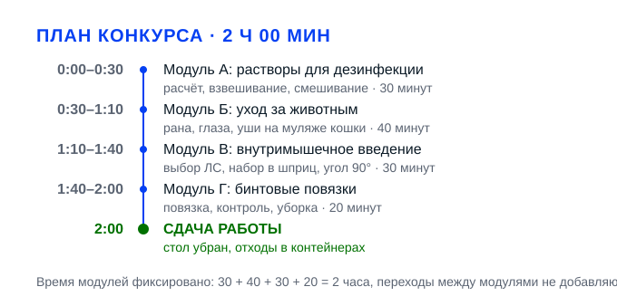
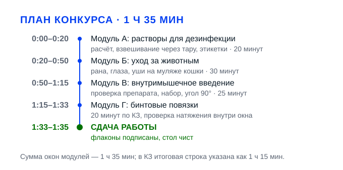
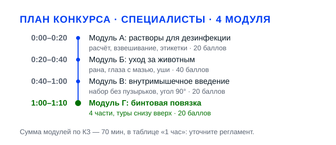

Ветеринария (Р,О)
Задания ниже — официальные файлы «Абилимпикс» (источник: abilympics-russia.ru), разложенные по категориям. Решения написаны по тексту задания, регламенту и критериям оценки; в них указано, что именно проверяет эксперт.
Школьник
14–16 лет, базовый уровень заданияВыдержка из официального конкурсного задания: страницы, относящиеся к категории «Школьник» (стр. 6–9 источника).
Пошаговое решение
Конкурсное задание для школьников состоит из четырёх модулей и двух часов чистого времени: 30 минут на приготовление дезинфицирующего раствора, 40 минут на уход за животным, 30 минут на внутримышечное введение лекарственного средства и 20 минут на бинтовую повязку. Работают с муляжом кошки и с оборудованием настоящей ветеринарной манипуляционной, и оценивают здесь не красоту движений, а соблюдение порядка: правила личной гигиены, асептика и антисептика, подготовка рабочего места, точность расчёта и уборка после каждого модуля. Эти пункты повторяются во всех четырёх модулях и стоят дороже, чем кажется: их фиксируют до начала работы и по ходу, а не в конце. Ниже — весь маршрут по шагам, с цифрами, углами, концентрациями и типичными ошибками, которые стоят баллов.

Задача 1. Приготовить раствор для дезинфекцииМодуль А · 30 минут
Модуль А идёт первым и занимает 30 минут: нужно прочитать задание, посчитать, сколько дезинфицирующего средства требуется на заданный объём воды, взвесить порошок на весах, растворить его и получить прозрачный рабочий раствор нужной концентрации. Результат модуля сформулирован коротко — «правильно приготовил дезинфицирующий раствор», но за этой строчкой стоят расчёт, точность взвешивания и порядок смешивания, и каждый этап проверяется отдельно. Ошибка в арифметике дальше не исправляется: раствор либо получается слабее и не работает, либо крепче и портит инструмент.
Действие 1.1. Войти в зону по правилам гигиены
Шаг 1.1.1
Надеваем халат поверх своей одежды и застёгиваем его на все пуговицы, волосы убираем под шапочку или косынку целиком — и спереди, и на затылке. Снимаем часы, кольца, браслеты и длинные серьги, ногти должны быть коротко подстрижены и без покрытия. Сменную обувь надеваем до входа в рабочую зону, а не после: подошва с улицы несёт землю и споры, и всё, что она притащит к столу, придётся обеззараживать заново. Рукав халата должен доходить до запястья, а полы — до колен, иначе порошок при взвешивании попадёт на кожу и на ткань.
Соблюдение правил личной гигиены открывает последовательность модуля А и является отдельным критерием: эксперт фиксирует внешний вид участника до старта, и набрать этот балл задним числом невозможно. Логика не формальная — средство работает против микроорганизмов, а под часами и ногтями остаётся своя микрофлора. Ворс с одежды не растворяется и оседает хлопьями, поэтому закрытая спецодежда нужна и с санитарной, и с практической стороны.
Проверьте себя у зеркала или попросите волонтёра посмотреть со спины: волос не видно ни спереди, ни сзади, халат застёгнут, рукав заканчивается у запястья, на руках нет украшений и часов, обувь закрытая и сменная. Если шапочка сидит на макушке, а затылок открыт — поправьте, потому что сзади эксперт смотрит в первую очередь.
Самая частая ошибка — надеть халат нараспашку поверх футболки с коротким рукавом: при взвешивании порошок сыплется на предплечье, а кожа под химикатом краснеет уже к концу модуля. Вторая — оставить кольцо или часы под перчаткой: под ними остаётся влага, перчатка рвётся о край украшения, и руки оказываются голыми в самый неподходящий момент.
Эксперт осматривает участника до старта модуля, а затем следит, остаётся ли халат чистым по ходу работы: пятна раствора и порошка на груди к концу модуля тоже учитываются.
Шаг 1.1.2
Поверх халата надеваем резиновые перчатки, на глаза — очки или щиток, на лицо — маску, а при работе с порошком насыпью лучше респиратор класса защиты не ниже FP2. Перчатки надеваем так, чтобы манжета закрывала запястье и край рукава, и проверяем целостность: надуваем воздухом или просто растягиваем пальцы и смотрим на просвет. Очки надеваем до того, как открыли банку с порошком, а не в момент, когда он уже поднялся в воздух.
Хлорамин и другие дезинфицирующие порошки раздражают слизистые и дыхательные пути, а пыль поднимается даже при аккуратной работе. Соблюдение асептики и антисептики — отдельный пункт модуля А, и средства защиты входят в него прямо: эксперт смотрит не на упаковку в углу стола, а на то, надеты ли перчатки и очки в момент работы с химикатом. Очки защищают не от брызг, а от мелкой пыли, которая летит вверх при высыпании порошка из лотка.
Проверьте три вещи: перчатка сидит по руке и не болтается на пальцах, манжета закрывает запястье, очки сидят плотно и не сползают при наклоне головы. Маска должна закрывать и нос, и рот — если она висит на подбородке, это то же самое, что её отсутствие.
Классическая ошибка — надеть перчатки, а очки оставить на столе «чтобы не мешали»: при первом же пересыпании порошка пыль попадает на слизистую, и работу приходится останавливать. Вторая — работать в порванной перчатке, не заметив этого: раствор попадает на кожу, а эксперт видит нарушение раньше, чем участник.
Эксперт подходит к столу в момент взвешивания и смотрит именно на этот этап: надеть очки и маску после того, как порошок уже открыт, — типичная имитация защиты.
Шаг 1.1.3
Обрабатываем руки гигиеническим способом: намыливаем до запястий, трём не меньше двадцати секунд, не забывая большие пальцы, промежутки между пальцами и ногтевые ложа, смываем и вытираем одноразовым полотенцем. Затем наносим кожный антисептик и даём ему высохнуть на воздухе, а не вытираем. Стол и весы протираем ветошью, смоченной дезинфицирующим раствором, и оставляем на время экспозиции, указанное на этикетке средства, — обычно это от одной до пяти минут.
Гигиена рук и обработка поверхностей — часть общего требования по асептике и антисептике, которое проходит через все четыре модуля. Стол, на который ставят весы и мерную посуду, в начале смены нестерилен: на нём остаются следы предыдущего участника и пыль. Если протереть поверхность и сразу поставить на неё лоток с порошком, смысл обработки теряется, потому что раствор ещё не отработал положенное время.
Руки сухие, полотенце использованное и сразу выброшено, а не положено на стол. Стол не блестит от влаги: после экспозиции его протирают насухо чистой ветошью, иначе на мокрой поверхности весы поедут. Ветошь после работы идёт в отходы, а не возвращается в чистую зону.
Ошибка — протереть стол и сразу поставить на него весы: влага попадает под ножки, весы встают с перекосом, и взвешивание уходит на десятые доли грамма. Вторая — вытереть руки о халат вместо полотенца: халат становится переносчиком, и это видно эксперту.
Эксперт смотрит на руки в начале модуля и после каждого перехода между операциями — от весов к посуде, от посуды к уборке. Оценивается процесс, а не стартовое состояние, поэтому показательная обработка один раз в начале не работает.
Действие 1.2. Разложить рабочее место и проверить оборудование
Шаг 1.2.1
Раскладываем рабочий стол по зонам слева направо: слева — банка с дезинфицирующим средством, шпатель и лоток для взвешивания, в центре — весы с разновесом, справа — мерная посуда, ёмкость для приготовления и палочка для перемешивания. Воду ставим отдельно, чтобы она не мешала взвешиванию, а не пролитую тряпку и пакет для отходов убираем в дальний угол стола. Такое расположение повторяет порядок операций, и рука сама идёт по маршруту «взял — взвесил — растворил».
Подготовка рабочего места для выполнения задания — отдельный пункт последовательности модуля А, и оценивается именно логика раскладки: инструмент должен лежать в том порядке, в котором его берут. Когда весы стоят между банкой и мерной посудой, участник не тянется через весь стол и не смахивает локтём разновес. Кроме того, на ограниченном столе 30 минут проходят быстрее, если не искать шпатель в момент, когда порошок уже отсыпан.
Пройдите глазами маршрут: от банки к весам, от весов к ёмкости, от ёмкости к раковине. Если на этом пути приходится переставлять что-то дважды — переложите сейчас. Свободного места размером с ладонь справа от весов хватает, чтобы положить шпатель, не задев чашку.
Ошибка — поставить всё вплотную к краю стола: при перемешивании ёмкость задевают локтём, и раствор оказывается на полу. Вторая — держать банку с порошком открытой весь модуль: пыль оседает на весах и на посуде, а влага из воздуха слёживает средство в комки.
Эксперт смотрит на стол в первые минуты модуля и отмечает, готова ли зона к работе или участник начинает искать нужное по ходу. Перестановки в середине работы он тоже видит и читает их как отсутствие плана.
Шаг 1.2.2
Проверяем весы: ставим по уровню на твёрдую ровную поверхность, смотрим, что пузырёк уровня стоит в центре, включаем и ждём, пока индикатор покажет нули. Затем тарируем — ставим пустой лоток или лист кальки на чашку и нажимаем кнопку обнуления, чтобы индикатор снова показал нули. Предел взвешивания у настольных весов обычно 200–500 г, дискретность 0,01–0,1 г, и это ровно та точность, которая нужна для навески в несколько десятков граммов.
Взвешивание компонентов — центральная операция модуля, и она начинается с проверки прибора, а не с порошка. Если весы стоят на неровной поверхности или не обнулены с тарой, систематическая ошибка уйдёт в готовый раствор: недосыпанные два грамма на литре превращают трёхпроцентный раствор в раствор с концентрацией 2,8 %, и формально это уже другое средство. Тарирование нужно ещё и потому, что масса лотка сопоставима с массой навески.
Нажимаете на чашку пальцем — показания возвращаются к нулю, а не «плывут». Пустой лоток на чашке даёт ровно ноль. Стрелка или цифры не дёргаются от прикосновения к столу: если дёргаются, весы стоят на шатком столе, и его нужно заменить.
Ошибка — взвешивать прямо на чашке без лотка: порошок забивается под платформу, и весы начинают врать. Вторая — не тарировать тару и потом вычитать массу лотка в уме: при спешке вычитают не то число, и навеска уезжает на несколько граммов.
Эксперт проверяет весы до начала взвешивания: обнулены ли они и стоит ли на чашке тара. Это занимает несколько секунд, но по пузырьку уровня и по показаниям видно сразу, включали ли прибор вообще.
Шаг 1.2.3
Проверяем мерную посуду: на цилиндре или мензурке смотрим цену деления и общий объём, на ёмкости для приготовления — метку нужного объёма. Если готовим литр, удобнее брать цилиндр на 1000 мл с ценой деления 10 мл: по нему видно, долили вы до метки или остановились на пару сантиметров ниже. Мерную посуду ополаскиваем водой и ставим на стол так, чтобы шкала была обращена к вам.
Объём воды — вторая половина расчёта, и здесь ошибка так же опасна, как в навеске. Воду набирают по нижнему краю мениска на уровне глаз, а не сверху и не на весу: при взгляде под углом к шкале добавляется парабалльная ошибка в 10–20 мл. Для литра это около двух процентов концентрации, то есть как раз тот запас, который отличает правильный раствор от «почти правильного».
Поставьте цилиндр на стол, присядьте так, чтобы глаз был на уровне метки, и посмотрите: нижний край мениска совпадает с чертой. Шкала читается, деления не стёрты, посуда без трещин — треснувший цилиндр при нагревании воды может лопнуть.
Ошибка — набирать воду «на глаз» прямо из-под крана в ёмкость без метки: потом невозможно ни проверить объём, ни доказать эксперту, что он верный. Вторая — использовать мерную посуду с отбитой шкалой, где деления читаются через силу.
Эксперт смотрит, чем отмеряется вода: наличие мерного цилиндра с читаемой шкалой и работа по мениску — признак того, что участник понимает, что делает.
Действие 1.3. Рассчитать навеску по заданию
Шаг 1.3.1
Читаем задание дважды и выписываем на черновик три числа: требуемую концентрацию рабочего раствора в процентах, объём раствора в литрах и название средства, которое стоит на столе. «3 % хлорамина, 1 литр» означает, что на бумаге стоят именно эти числа, а не «примерно три процента». Рядом записываем, для чего раствор предназначен: для обработки поверхностей, для замачивания инструмента или для уборки — от этого зависит, какой концентрации придерживаться.
Произвести расчёт дезинфицирующего средства согласно заданию — отдельный пункт последовательности, и он идёт до взвешивания, а не после. Выписывание условия на бумагу нужно не для красоты: в задании может стоять одна концентрация, а на столе лежать средство, у которого в инструкции другие цифры для этого вида обработки. Если не сверить эти две вещи сразу, можно аккуратно и точно приготовить раствор, который в данном случае не подходит.
На черновике должно быть три числа и единица измерения у каждого: концентрация в процентах, объём в литрах или миллилитрах, масса в граммах. Если хотя бы у одного числа нет единицы, вы его недопоняли — вернитесь к тексту задания и перечитайте строчку целиком.
Самая частая ошибка — прочитать «3 %» и «1 литр» и сразу хвататься за банку, не дочитав, о каком средстве речь. Вторая — перепутать концентрацию рабочего раствора с концентрацией исходного средства: на этикетке крупно написано «50 %», и участник считает навеску от этого числа.
Эксперт подходит и смотрит на черновик: есть ли на нём условие задания, выписанное рукой. Это самый быстрый способ понять, считал человек или угадывал.
Шаг 1.3.2
Считаем навеску по формуле m = C × V / 100, где m — масса средства в граммах, C — концентрация рабочего раствора в процентах, V — объём воды в миллилитрах. Для трёхпроцентного раствора объёмом один литр это 3 × 1000 / 100 = 30 г. Для полупроцентного — 5 г на литр, для пятипроцентного — 50 г. Считаем на бумаге столбиком или на калькуляторе, но результат обязательно записываем: 30 г и «тридцать» в уме — это разные вещи, когда руки заняты.
Эта формула верна потому, что процентная концентрация в ветеринарной дезинфекции считается по массе сухого средства на объём воды, а не на общую массу раствора: для растворов с концентрацией до пяти процентов разница между этими подходами меньше одного процента от навески. Понимание формулы, а не заученная цифра, нужно на случай, когда в задании другой объём: при 2 литрах навеска удваивается, и считать заново придётся в уме.
Проверьте расчёт обратным счётом: 30 г на 1000 мл — это 3 г на 100 мл, то есть три процента. Если обратный счёт даёт другое число, значит, в прямом потерялся ноль. Запишите результат крупно и обведите — так его не спутать с объёмом воды.
Ошибка — перепутать делитель и умножить на 100 вместо деления: навеска вырастает в десять тысяч раз, и решение выглядит абсурдно уже на этапе «3000 г на литр». Вторая, более коварная — считать от общего объёма раствора, а не от объёма воды, и получить 29,1 г вместо 30 г: разница маленькая, но при пересчёте концентрации она видна.
Эксперт смотрит на ход расчёта, а не только на ответ: формула, подставленные числа и единицы измерения должны быть видны на бумаге. Если на черновике один итог, он спросит, откуда взялось число, и по ответу сразу понятно, считали вы или вспомнили прошлогодний результат.
Шаг 1.3.3
Сверяем полученную навеску с тем, что написано на этикетке средства: для какой концентрации и какого вида обработки предназначен раствор, есть ли ограничения по температуре воды и по материалу посуды. Если на этикетке для нужного вида обработки указана другая концентрация, поднимаем руку и уточняем у эксперта до начала взвешивания, а не после. Расхождение фиксируем на том же черновике рядом с расчётом.
Проверка по этикетке — это то, что отличает осознанную работу от механической. Средства с одинаковым названием выпускаются в разных формах, и у концентрата может быть указано «3 % по активному веществу», тогда как в задании речь о трёх процентах по препарату. Вопрос, заданный до взвешивания, стоит ноль баллов, а раствор, приготовленный не по той концентрации, обнуляет весь модуль.
На этикетке найдены три вещи: назначение раствора, диапазон концентраций и способ приготовления. Ваш расчёт попадает в этот диапазон. Если не попадает — вы не двигаетесь дальше, пока не поймёте почему.
Ошибка — не читать этикетку вообще, потому что «в прошлом году делали так же». Вторая — заметить расхождение и промолчать, надеясь, что эксперт не обратит внимания: он обращает, причём именно на этом модуле.
Эксперт проверяет, открывалась ли банка и читалась ли этикетка: он может попросить показать, где на упаковке указана концентрация, и по тому, как быстро вы найдёте нужную строчку, видно, читали вы упаковку или нет.
Действие 1.4. Взвесить и приготовить раствор
Шаг 1.4.1
Открываем банку, отсыпаем средство шпателем в лоток на весах, а не наоборот — сначала немного меньше нужного, потом добавляем по чуть-чуть. Сыпем с высоты не больше двух-трёх сантиметров, чтобы пыль не поднималась, и держим банку наклонно, а не переворачиваем. Добавляем до тех пор, пока индикатор не покажет ровно 30,0 г; лишнее убираем шпателем обратно в банку, а не в раковину.
Точность навески — это и есть «правильно приготовил дезинфицирующий раствор» в формулировке результата модуля. Отклонение в один грамм на литре даёт концентрацию 2,9 или 3,1 % вместо 3 %, и это уже другое средство: недоложенное не убивает устойчивые формы, переложенное оставляет плёнку и раздражает слизистые у животных. Привычка «досыпать на глаз» опасна ещё и тем, что на весах с дискретностью 0,1 г она выглядит как точная работа.
Индикатор показывает 30,0 г, порошок лежит в лотке ровным слоем без комков, чашка весов не засыпана. Если на платформе остались крупинки — сдуйте их грушей или смахните кисточкой и проверьте ноль ещё раз.
Ошибка — сыпать из банки прямо над весами, тряся её: порошок летит мимо, часть оседает на платформе, и весы показывают не то, что в лотке. Вторая — отвешивать «на глаз» и потом проверять: 28 г вместо 30 участник считает допустимым, а эксперт — нет.
Эксперт подходит в момент отсыпания и смотрит на два движения: как открыта банка и чем набирается порошок. Шпатель в руке — правильный признак, ложка или рука — нет.
Шаг 1.4.2
Пересыпаем навеску в ёмкость для приготовления и заливаем примерно третью частью объёма воды температурой 40–50 °C — тёплая вода растворяет порошок за две-три минуты, холодная может оставить комки. Перемешиваем пластиковой или стеклянной палочкой круговыми движениями от дна к стенкам, не взбивая, пока крупинки не исчезнут. Затем доливаем воду до метки нужного объёма и ещё раз перемешиваем, чтобы концентрация выровнялась по всему объёму.
Порядок смешивания — не формальность: если сразу залить полный объём холодной воды и бросить порошок, он слипнется в комки, которые не растворяются даже при долгом перемешивании, и часть средства просто не перейдёт в раствор. Растворение в малом объёме тёплой воды даёт истинный раствор, а доливка до метки после — точный объём. Перемешивание после доливки нужно потому, что у дна остаётся более концентрированный слой.
Раствор прозрачный или слегка опалесцирующий, без крупинок и без осадка на дне. Проведите палочкой по дну: если она идёт гладко, без хруста, раствор готов. Объём совпадает с меткой, а не «примерно»: разница видна на просвет у стенки.
Ошибка — засыпать порошок в полный объём холодной воды и мешать минуту: комки остаются, и в готовом растворе виден осадок. Вторая — долить воду «до края», не глядя на метку: объём больше расчётного, концентрация ниже, и раствор не соответствует заданию.
Эксперт оценивает именно этот этап: прозрачность раствора и отсутствие осадка видны невооружённым глазом, и это первое, на что он смотрит в готовой работе.
Шаг 1.4.3
Переливаем готовый раствор в рабочую ёмкость с крышкой через воронку, чтобы не расплескать, и закрываем. На столе оставляем только то, что нужно дальше: ёмкость с раствором, палочку и ветошь. Если по заданию требуется маркировка, наклеиваем этикетку с названием средства, концентрацией и датой приготовления — в категории «Школьники» этот пункт в конкурсном задании не указан, поэтому время на него тратим только после того, как всё остальное сделано.
Переливание через воронку нужно потому, что тонкая струя по стенке не даёт брызг, а брызги раствора на столе — это и потеря объёма, и лишняя работа по уборке в конце модуля. Крышка защищает раствор от пыли и от испарения: у хлорамина при стоянии в открытой посуде активность падает. Маркировка в задании для школьников не требуется, и это стоит знать точно, чтобы не потратить на неё минуты, которые нужны на уборку.
В рабочей ёмкости то же количество раствора, что было приготовлено, крышка закрывается плотно, на стенках нет потёков. Проверьте уровень: он должен совпадать с меткой той ёмкости, куда перелили, а на воронке не должно остаться крупинок.
Ошибка — перелить раствор в грязную или влажную от другой химии ёмкость: средство частично нейтрализуется, и концентрация падает незаметно. Вторая — оставить раствор открытым и вернуться к нему через полчаса: к концу конкурса в нём уже не та концентрация, что была при приготовлении.
Эксперт смотрит на готовую ёмкость перед сдачей модуля: закрыта ли она, совпадает ли объём с заданием и нет ли на дне осадка. Открытая банка без крышки и мутный раствор — два самых быстрых сигнала, что технология нарушена, и оба видны с расстояния шага.
Действие 1.5. Убрать рабочее место
Шаг 1.5.1
Сливаем остатки раствора в специально отведённую ёмкость для отработанных дезинфицирующих растворов, а не в раковину: в условии конкурса это отдельная тара, и её место указано заранее. Посуду промываем проточной водой с моющим средством, ополаскиваем и ставим сушиться на решётку горлышком вниз. Весы протираем сухой мягкой тканью, разновес убираем в футляр, шпатель промываем и сушим отдельно.
Уборка рабочего места — последний пункт последовательности модуля А, и он оценивается как самостоятельный элемент работы. Кроме того, убранный стол — это условие перехода к следующему модулю: на том же месте через несколько минут начнётся уход за животным, и остатки порошка попадут на муляж. Сливать раствор в раковину нельзя: средство идёт в канализацию только после нейтрализации, а на конкурсе — в отведённую тару.
Стол пуст, весы чистые и выключены, посуда вымыта и стоит на сушке, отходы в пакете, раствор — в ёмкости для отработанных. Пройдите по столу ладонью: на ней не должно остаться ни порошка, ни влаги. Отдельно проверьте углы и место под весами — там порошок остаётся дольше всего.
Ошибка — смахнуть порошок со стола сухой тряпкой: пыль поднимается и оседает обратно, только уже тоньше и незаметнее. Вторая — вылить раствор в раковину, потому что «так быстрее»: это прямое нарушение, и за него снимают баллы по всему модулю.
Эксперт осматривает стол после модуля: чистота поверхности и наличие ёмкости с отработанным раствором для него важнее, чем аккуратность на старте. Он также смотрит, выключены ли весы и убран ли разновес в футляр.
Шаг 1.5.2
Снимаем перчатки правильным способом: отворачиваем край одной перчатки наружу, снимаем её, не касаясь внешней поверхности, затем снимаем вторую, поддевая изнутри пальцем в перчатке. Обе перчатки идут в пакет с отходами класса Б, маска и одноразовое полотенце — туда же. После этого моем руки с мылом и обрабатываем кожным антисептиком, потому что перчатки защищают не идеально и под ними кожа всё равно остаётся влажной.
Порядок снятия перчаток — это не формальность, а единственный способ не перенести химикат с внешней поверхности на кожу рук и на лицо. Если стянуть перчатку за палец, брызги раствора летят на предплечье, а если снять обе и положить на стол — они загрязняют зону, где будет работать следующий модуль. Мытьё рук после перчаток завершает цепочку, начатую в самом начале модуля, и замыкает её правильно.
Перчатки вывернуты наизнанку и лежат в пакете с отходами, а не на столе. Руки вымыты и сухие, на столе нет ни одной перчатки, ни маски, ни использованной салфетки, а пакет с отходами закрыт и стоит там, где было указано до начала модуля.
Ошибка — снять перчатки и положить их на угол стола «потом выброшу»: через минуту на этом углу уже стоит посуда следующего модуля. Вторая — не мыть руки после перчаток: кожа под ними распарена, а микротрещины открыты для химиката.
Эксперт смотрит на отходы и на руки в конце модуля: вывернутые перчатки в пакете и чистые руки — признак того, что порядок соблюдался. Перчатка, лежащая на столе рядом с чистой посудой, для него такой же сигнал, как раствор не той концентрации.
Задача 2. Обработать рану, глаза и ушиМодуль Б · 40 минут
Самый длинный модуль — 40 минут на муляже кошки: обработка послеоперационной раны, обработка глаз и чистка ушей. Результат описан как «обработка послеоперационной раны, глаз и ушей», но оценивается не только результат, а весь порядок работы: подготовка места, размещение оборудования, подготовка инструментария, проведение диагностической процедуры и уборка. Муляж не возражает и не вырывается, поэтому движения отрабатываются так, как будто под руками живое животное: с фиксацией и с паузой на оценку состояния.
Действие 2.1. Подготовить место и зафиксировать животное
Шаг 2.1.1
Протираем стол дезинфицирующим раствором и застилаем одноразовой пелёнкой, сверху кладём чистую клеёнку или вторую пелёнку — на ней и будет лежать муляж. Раскладываем инструмент справа от себя в порядке использования: пинцет, кровоостанавливающий зажим, ножницы, лоток с ватными шариками и дисками, антисептик, стерильные салфетки, бинт, пластырь. Слева ставим лоток для отработанного материала и ёмкость с дезраствором для инструмента.
Правильно разместить оборудование и подготовить его к работе — отдельный пункт последовательности модуля Б, и он идёт до первой манипуляции. Порядок на столе экономит не время, а движения: когда антисептик стоит за спиной, приходится разворачиваться мокрыми руками, и стерильная салфетка падает на пол. Пелёнка нужна не для красоты — она впитывает раствор, который стекает с тампона, и не даёт луже растечься под муляжом.
Инструмент лежит в порядке использования и не касается края стола. Пелёнка натянута без складок, лоток для отходов стоит так, чтобы в него попадать не глядя. Проверьте, что крышка антисептика отвинчена заранее, а не в момент, когда в другой руке уже пинцет.
Ошибка — выложить всё сразу в кучу в центре стола: в ней не найти нужное, а взятый не тот инструмент приходится класть обратно, и он уже считается загрязнённым. Вторая — работать без пелёнки: раствор стекает на стол, и в конце модуля уборка съедает время, которого и так немного.
Эксперт смотрит на стол до начала манипуляций: разложен ли инструмент по порядку и есть ли лоток для отходов. Куча в центре стола читается сразу, как и флаконы, открытые заранее и стоящие без крышек.
Шаг 2.1.2
Надеваем перчатки и проводим осмотр: смотрим, как муляж лежит, нет ли на нём посторонних следов от предыдущего участника, проверяем зону раны, глаза и уши. На живом животном осмотр начинают с общего состояния: оценивают позу, дыхание, температуру тела (у кошки норма 38,0–39,5 °C), цвет слизистых — бледные, желтушные или синюшные говорят о проблеме, — затем переходят к местному осмотру. Смотрим на шерсть вокруг раны: слипшаяся или выпавшая говорит о том, что животное лизало шов.
Выполнить диагностическую процедуру — отдельный пункт последовательности модуля Б, и это тот пункт, который чаще всего пропускают, начиная сразу с обработки. Смысл в том, что обработка выбирается по состоянию: чистую рану с ровными краями обрабатывают иначе, чем рану с отделяемым. Осмотр занимает меньше минуты, но определяет, что именно вы будете делать следующие десять минут.
Зона осмотрена и названа вслух: «рана в области живота, края ровные, шов состоятельный, отделяемого нет, шерсть вокруг чистая». Слизистые розовые, глаза без отделяемого, ушные раковины чистые. Если что-то не так — вы это зафиксировали до начала обработки, а не после.
Ошибка — сразу схватить антисептик и тереть: не осмотрев рану, легко пропустить расхождение шва или начинающееся воспаление. Вторая — осматривать молча: эксперт не обязан догадываться, увидели вы проблему или нет, а балл за диагностику ставится по тому, что прозвучало.
Эксперт подходит на этапе осмотра и слушает, что участник говорит про состояние животного. Молчаливый осмотр он оценивает ниже, чем короткий, но с выводами.
Шаг 2.1.3
Муляж укладываем на бок, головой от себя, так, чтобы обрабатываемая зона была сверху и хорошо освещена; под голову подкладываем небольшой валик из пелёнки. На живом животном фиксация сложнее: кошку берут за загривок одной рукой, прижимая локти к телу, второй поддерживают под грудь, а при работе с агрессивным животным надевают защитный воротник или заворачивают в плотную ткань, оставляя открытой только нужную область. Помощник держит животное, а не вы: двумя руками одновременно держать и обрабатывать нельзя.
Фиксация — вопрос техники безопасности и качества обработки одновременно. Плохо зафиксированное животное дёргается, и тампон идёт не туда, куда вы его направили: вместо края раны он проезжает по шву или по глазу. Укус и глубокие царапины кошки опасны не столько болью, сколько инфекцией — пастереллёзом и бактериями под когтями, поэтому правило «сначала фиксация, потом манипуляция» не обсуждается даже на муляже.
Муляж не смещается при нажатии двумя пальцами, зона обработки открыта и освещена, валик под головой не даёт ей запрокинуться. Если вы работаете на живом животном, проверьте, что помощник держит голову и передние лапы, а задние не достают до ваших рук.
Ошибка — начать обработку, придерживая муляж локтем: при первом же движении он поворачивается, и тампон уходит в сторону. На живом животном та же ошибка заканчивается укусом. Вторая — фиксировать за живот, а не за загривок и грудь: кошка выскальзывает именно так.
Эксперт смотрит на положение рук в первые секунды: держат ли они животное правильно и стоит ли рядом помощник, если он предусмотрен. Руки, лежащие на муляже просто так, без фиксации, он считает ошибкой даже на манекене.
Действие 2.2. Обработать послеоперационную рану
Шаг 2.2.1
Снимаем старую повязку или наклейку: размачиваем прилипший край раствором антисептика, придерживаем кожу рядом и тянем повязку по направлению к шву, а не от него. Если повязка присохла, не отрываем — ждём полминуты, пока раствор размягчит корку, и снимаем её вместе с повязкой. Снятую повязку складываем в лоток для отходов, а не на пелёнку рядом с раной.
Снятие повязки — первое действие, при котором можно повредить шов, и делается оно медленнее, чем кажется нужным. Если тянуть повязку к себе, край её захватывает корку и вместе с ней выходит часть струпа, а иногда и узел шва. Размачивание антисептиком нужно потому, что сухая корка приклеена к коже прочнее, чем держится шов. Отдельный лоток для снятой повязки — правило асептики: грязный материал не должен лежать в зоне обработки.
Повязка снята целиком, кожа вокруг раны целая, шов на месте, кровотечения нет. На тампоне при снятии не должно быть свежей крови больше, чем след. Если появилось кровотечение — прижать стерильной салфеткой на минуту и только потом продолжать.
Ошибка — рвануть повязку одним движением: именно так расходятся швы на третьи-четвёртые сутки. Вторая — бросить снятую повязку на пелёнку рядом с раной: она загрязняет зону, и все последующие тампоны считаются нестерильными.
Эксперт смотрит на скорость и направление движения при снятии: медленно и к шву — правильно, рывком и от шва — ошибка. Если повязка снята за три секунды и без размачивания, он спрашивает, что было бы на живом животном.
Шаг 2.2.2
Обрабатываем рану водным раствором хлоргексидина 0,05 %: набираем его в шприц без иглы или смачиваем стерильный шарик и промываем рану от центра к периферии, слегка приподнимая край, чтобы раствор вытекал вместе с отделяемым. Каждое следующее движение — новым шариком, использованный сразу уходит в лоток. Края раны и кожу вокруг обрабатываем салфеткой, смоченной тем же раствором, но отдельной от той, что работала внутри.
Направление от центра к периферии — базовое правило антисептики: если вести тампоном от краёв к центру, вы заносите в рану микрофлору с кожи, которая там и живёт. Новый шарик на каждое движение нужен потому, что использованный уже загрязнён, и второе движение им — это перенос отделяемого на чистый участок. Водный хлоргексидин выбран не случайно: он не жжёт и не повреждает грануляции, в отличие от спирта и перекиси, которую в глубину раны не льют.
Рана чистая, розовая, без серого налёта и без гноя, края не кровят. На салфетке после обработки — только след раствора. Если на дне раны виден налёт, промывание повторяют, но уже новым раствором и новым шприцем.
Ошибка — тереть рану одним шариком туда-сюда: это возвращает загрязнение в центр и раздражает грануляции. Вторая — лить перекись или спирт в глубину раны: пенится эффектно, но повреждает молодую ткань и замедляет заживление.
Эксперт смотрит именно на направление движений и на смену тампонов: это самый наглядный признак того, что человек понимает асептику, а не повторяет заученный жест.
Шаг 2.2.3
Просушиваем рану стерильной салфеткой промокающими движениями, не растирая, и накладываем на неё стерильную салфетку с лечебной мазью, если она есть в задании, — размером на сантиметр больше раны с каждой стороны. Салфетку фиксируем тремя-четырьмя полосками пластыря или бинтом, натягивая ткань умеренно: под повязку должен свободно проходить палец. Сверху надеваем защитный воротник, если он предусмотрен, чтобы животное не достало шов.
Просушивание нужно для того, чтобы мазь и салфетка держались на коже, а не скользили по мокрой поверхности. Размер салфетки с запасом в сантиметр обеспечивает, что края раны останутся закрытыми при движении животного. Свободный палец под повязкой — простой тест: слишком тугая нарушает кровообращение и даёт отёк, а слишком слабая сползает через полчаса.
Повязка держится на месте, не сползает при попытке сдвинуть её пальцем, края салфетки выходят за границы раны со всех сторон. Под повязкой нет складок, пластырь приклеен к сухой коже, а не к шерсти, и не отходит уголками.
Ошибка — наложить салфетку точно по размеру раны: при любом движении край открывается, и шов остаётся без защиты. Вторая — заклеить повязку наглухо по кругу: под ней скапливается влага, и через сутки там уже мокнет.
Эксперт проверяет повязку рукой: сдвигает её двумя пальцами и смотрит, держится ли она и проходит ли под ней палец. Слишком свободная повязка видна по тому, что провисает между полосками пластыря и топорщится на краях.
Шаг 2.2.4
Проверяем результат и убираем за собой в зоне раны: снимаем перчатки, загрязнённые обработкой, надеваем новые, убираем использованные шарики и салфетки в пакет для отходов класса Б. Пинцет и зажим опускаем в ёмкость с дезинфицирующим раствором полностью, с раскрытыми замками, чтобы раствор омывал рабочие части. Ножницы протираем салфеткой с дезраствором дважды, со сменой салфетки.
Смена перчаток между зонами — требование асептики, которое проверяется буквально: в перчатках, которыми обрабатывали рану, нельзя идти к глазам, потому что отделяемое раны на слизистой глаза — это уже осложнение. Инструмент после работы с раной обеззараживают до следующего использования, и раскрытые замки нужны для того, чтобы раствор проник в шарнир: закрытый зажим внутри остаётся с кровью.
Перчатки заменены, отходы в пакете, инструмент полностью погружён в дезраствор и не выступает над поверхностью. Ножницы чистые, без налёта у винта. Зона раны на столе закрыта, лишнего на пелёнке нет, использованные шарики не лежат рядом с чистыми.
Ошибка — перейти к глазам в тех же перчатках, «чтобы не тратить время»: это грубое нарушение асептики, и эксперт снимает за него сразу несколько пунктов. Вторая — бросить инструмент в лоток с закрытыми замками: через минуту он уже не обеззаражен внутри.
Эксперт смотрит на момент смены перчаток и на то, как инструмент погружают в раствор: полностью или наполовину. Переход к глазам в тех же перчатках он фиксирует отдельно и считает грубым нарушением асептики.
Действие 2.3. Обработать глаза
Шаг 2.3.1
Берём стерильный ватный диск или марлевый шарик, смачиваем физиологическим раствором 0,9 % или раствором фурацилина 1:5000 и слегка отжимаем, чтобы с него не текло. Одной рукой придерживаем голову муляжа, второй проводим диском по закрытому веку от внутреннего угла глаза к наружному — одно движение, один диск. Для второго глаза берём новый диск, смоченный заново. Раствор должен быть комнатной температуры, а не холодным из холодильника.
От внутреннего угла к наружному ведут потому, что слёзный канал открывается именно там: если вести в обратную сторону, отделяемое загоняется в слёзный мешок, и вместо обработки получается воспаление. Отдельный диск на каждый глаз нельзя нарушать даже при видимо чистой слизистой: конъюнктивит часто односторонний, и одним диском вы переносите его на здоровый глаз.
Веки чистые, без корочек и засохшего отделяемого в углах, шерсть вокруг глаза сухая. Слизистая при осмотре бледно-розовая, без покраснения и без отёка. Муляж не должен быть мокрым от раствора, а на диске не остаётся грязного следа после второго глаза.
Ошибка — тереть глаз одним диском в обе стороны: это и перенос отделяемого в слёзный канал, и лишнее раздражение. Вторая — капать раствор прямо на открытый глаз с высоты: струя травмирует роговицу, а на муляже заливает всю морду.
Эксперт смотрит на направление движения диска и на то, берётся ли новый диск для второго глаза. Это одна из тех деталей, по которым сразу видно уровень подготовки.
Шаг 2.3.2
Промокаем обработанный глаз сухим стерильным диском тем же движением — от внутреннего угла к наружному, — чтобы убрать остатки раствора. Затем слегка оттягиваем нижнее веко и осматриваем слизистую: она должна быть розовой, влажной, без истечений. Если по заданию предусмотрены глазные капли или мазь, закладываем их под нижнее веко, а не на роговицу, и отпускаем веко, чтобы животное само распределило средство.
Промокание убирает раствор, который иначе стекает по шерсти и оставляет разводы, а заодно позволяет увидеть, есть ли отделяемое, которое не видно на мокрой поверхности. Осмотр слизистой после обработки — это и есть диагностическая часть: покраснение, отёк или гнойное отделяемое меняют дальнейшую тактику. Мазь закладывают под нижнее веко потому, что роговица при этом не травмируется тюбиком, а средство распределяется по всему глазу при моргании.
Глаз сухой, шерсть вокруг не слиплась, слизистая розовая и блестящая. Если закладывали мазь, она видна тонким слоем под веком, а не комком в углу. Второй глаз обработан так же, но отдельными дисками: сравнивают всегда оба, иначе одностороннее поражение остаётся незамеченным.
Ошибка — закладывать мазь прямо на роговицу: тюбик её касается, и на поверхности остаётся вдавление. Вторая — обработать один глаз и считать, что второй «такой же»: сравнивают всегда оба, иначе одностороннее поражение пропускают.
Эксперт проверяет, осматривался ли глаз после обработки: он может спросить, что участник увидел на слизистой. Ответ «всё нормально» без описания цвета и влажности он принимает как отсутствие осмотра.
Действие 2.4. Почистить уши
Шаг 2.4.1
Отводим ушную раковину назад и осматриваем видимую часть слухового прохода при хорошем свете: цвет кожи, наличие серы, корок, покраснения, запаха. У кошки слуховой проход L-образный, поэтому глубина осмотра ограничена вертикальным отделом, и дальше видимого не идут ни глазом, ни инструментом. Выбираем средство по заданию — ушной лосьон или гель — и подогреваем флакон в руке до комнатной температуры, если он стоял в прохладном месте.
Осмотр до чистки нужен, чтобы не занести грязь в здоровое ухо и не пропустить признаки отита: если в проходе гной или кожа ярко-покрасневшая, чистка превращается в лечебную процедуру с другими средствами. Знание про L-образный проход — не теория: прямая палочка, вставленная «поглубже», упирается в стенку и травмирует её, а барабанная перепонка находится за изгибом, и достать до неё можно только усилием, которое заведомо лишнее.
Ушная раковина чистая или с небольшим количеством светло-жёлтой серы, кожа бледно-розовая, без запаха. Слуховой проход просматривается на доступную глубину, покраснения нет. Флакон с лосьоном тёплый на ощупь.
Ошибка — начинать чистку, не посмотрев в ухо: под слоем серы легко пропустить покраснение и гной. Вторая — использовать холодный лосьон: он вызывает у животного дискомфорт и резкое движение головой, а на муляже это выглядит как небрежность.
Эксперт слушает, что участник говорит про осмотр, и смотрит, отводится ли раковина для осмотра, а не чистка начинается вслепую. Открытый флакон, поставленный на пелёнку рядом с ухом, он тоже отмечает.
Шаг 2.4.2
Наносим лосьон в слуховой проход — два-три нажатия распылителя или несколько капель, — придерживая голову. Затем ватным диском или марлевым шариком протираем видимую часть раковины и складки у основания уха круговыми движениями снаружи внутрь, меняя диск, как только он загрязнился. В глубину не лезем: если нужно достать серу из складки, пользуемся ватной палочкой с ограничителем, и она входит не глубже чем на полсантиметра.
Лосьон размягчает серу, и она выходит сама — поэтому сначала средство, а потом диск, а не наоборот. Круговые движения снаружи внутрь собирают серу к центру раковины, где её легко снять одним движением. Смена диска при загрязнении — то же правило, что с глазами: грязный диск размазывает серу по чистым участкам. Ограничитель на палочке — единственная защита от того, чтобы не продавить её слишком глубоко в момент, когда животное дёрнуло головой.
Раковина чистая, без тёмных разводов, складки у основания сухие. На диске после последнего протирания — только след лосьона. В слуховом проходе на доступной глубине не осталось комков серы, а шерсть вокруг уха не испачкана средством.
Ошибка — тереть ватной палочкой глубоко в проходе: у кошки это прямой путь к травме стенки и к перфорации перепонки. Вторая — капать лосьон и сразу закрывать ухо, не давая сере размягчиться: через минуту она выходит комком, и всё приходится начинать заново.
Эксперт смотрит на глубину введения палочки и на смену дисков: обе детали видны с расстояния вытянутой руки. Ватная палочка, которой работают как ложкой, для него сигнал, что про L-образный проход участник не знает.
Шаг 2.4.3
Мягко массируем основание уха — точку у основания раковины, чуть ниже её края, — круговыми движениями в течение пятнадцати-двадцати секунд, чтобы лосьон распределился по проходу. Отпускаем голову и даём животному потрясти ею: на муляже имитируем это движение, на живом — просто ждём. Затем снимаем вышедшую серу диском и протираем раковину насухо, после чего переходим ко второму уху с чистым диском и чистым лосьоном.
Массаж основания уха — не ласка, а способ доставить средство туда, куда диском не достать: проход изогнут, и лосьон распределяется по стенкам именно при массаже. Потряхивание головой выносит размягчённую серу наружу, и её остаётся только снять. Сухое протирание в конце нужно потому, что влага в раковине — питательная среда для микрофлоры, и ухо, оставленное мокрым после чистки, загрязняется быстрее, чем до неё.
Оба уха чистые и сухие, без разводов и без комков у основания. Муляж не повёрнут и не смещён: голова возвращена в исходное положение, лапы не поджаты. Диски после последнего протирания чистые, лосьон закрыт.
Ошибка — массировать сильно, «чтобы лучше распределилось»: у животного это вызывает боль, и оно начинает мотать головой. Вторая — оставить ухо влажным: через сутки в нём уже размнождается микрофлора, и вся работа идёт насмарку.
Эксперт смотрит на финальное состояние уха и на то, вернулось ли животное в спокойное положение: это часть оценки «уход за животным». Сильный массаж виден по тому, как участник держит голову муляжа — всей ладонью, а не пальцами.
Действие 2.5. Убрать рабочее место
Шаг 2.5.1
Снимаем пелёнку, сворачивая её внутрь, чтобы содержимое не высыпалось, и отправляем в пакет для отходов класса Б. Инструмент из дезраствора достаём, промываем проточной водой и сушим; лотки моем с моющим средством и дезинфицируем. Стол протираем дезраствором с экспозицией по инструкции, муляж возвращаем на место в том положении, в котором его выдали. Снимаем перчатки, моем руки, снимаем маску.
Уборка рабочего места — последний пункт последовательности модуля Б, и он стоит отдельно от предыдущих не случайно: после работы с раной на столе остаются биологические следы, и оставлять их нельзя. Пелёнку сворачивают внутрь именно для того, чтобы содержимое осталось в ней. Муляж возвращают в исходное положение, потому что следующий участник должен получить его в том же виде, в каком получили вы, — это часть культуры работы на площадке.
Стол чистый и сухой, инструмент вымыт и лежит на сушке, отходы в закрытом пакете, муляж на месте и в исходном положении, руки вымыты. Пелёнки на столе нет, лотков с раствором не осталось, а пол под столом сухой.
Ошибка — оставить пелёнку на столе «пусть полежит»: она считается загрязнённой и портит оценку за уборку. Вторая — вернуть муляж в другом положении, чем его выдали: следующий участник теряет время на то, чтобы его уложить.
Эксперт осматривает зону после модуля целиком, а не только стол: смотрит на пол под столом, на лоток для отходов и на положение муляжа. Пакет, оставленный открытым на стуле, он тоже видит и учитывает.
Задача 3. Сделать внутримышечную инъекциюМодуль В · 30 минут
Модуль на 30 минут, и в нём меньше всего движений и больше всего последствий: подготовка места, соблюдение асептики и правил личной гигиены, правильное вскрытие ампулы, забор лекарственного вещества в шприц, подготовка места инъекции и введение под определённым углом. Результат сформулирован как «лекарственное вещество правильно введено», и складывается он из двух вещей: выбрано именно то средство, которое указано в задании, и введено оно в мышцу, а не под кожу и не мимо. На муляже ошибка не видна сразу — она видна эксперту, который стоит рядом и смотрит на угол, глубину и порядок движений.
Действие 3.1. Подготовить стол и выбрать лекарство
Шаг 3.1.1
Раскладываем на столе слева направо: лоток со стерильными шариками, пинцет, шприцы в упаковке, иглы в колпачках, флакон со спиртом, флакон с раствором йода, непрокалываемый контейнер для игл и лоток для отработанного материала. Шприц берём на 2–5 мл, иглу — 0,5–0,6 мм в диаметре и 25–30 мм длиной: для кошки это соответствует глубине мышцы бедра. Ампулы с лекарством ставим отдельно, в подставку, чтобы не опрокинуть их локтем.
Подготовка рабочего места — первый пункт последовательности модуля В, и он определяет, сколько движений вы сделаете лишних. Непрокалываемый контейнер нужен не для порядка, а для безопасности: использованная игла на столе — это травма рук и остановка работы. Диаметр и длина иглы подбираются под глубину мышцы: короткая не дойдёт до мышцы у упитанного животного, длинная упрётся в кость.
Шприц и игла нужного объёма лежат вместе, упаковка шприца вскрыта с той стороны, откуда выступает наконечник. Контейнер для игл открыт и стоит рядом с рабочей рукой, а не в дальнем углу. На столе нет открытых ампул без подставки.
Ошибка — взять шприц на 20 мл «чтобы точно хватило»: таким поршнем дозу в 0,5 мл не отмерить, шкала слишком крупная. Вторая — поставить контейнер для игл в дальний угол и потом искать его с иглой в руке.
Эксперт оценивает стол до начала работы: соответствие шприца и иглы заданию и наличие контейнера для игл. Обе вещи видны за две секунды, и по ним он делает первый вывод о подготовке.
Шаг 3.1.2
Моем руки с мылом, вытираем одноразовым полотенцем, обрабатываем кожным антисептиком и надеваем перчатки. Перчатки надеваем до того, как взяли ампулу, а не после: стекло ампулы после надпиливания даёт микроскопические осколки, и голыми руками их можно загнать под кожу. Волосы убраны, украшения сняты, ногти короткие — те же требования, что в первом модуле, и они не отменяются, потому что модуль другой.
Соблюдение правил личной гигиены и асептики — отдельные пункты модуля В, и они оцениваются в связке: чистыми руками берут стерильный шприц, а иглу ставят на стерильный наконечник, не касаясь его пальцами. Инъекция — это прокол кожи, то есть прямое сообщение внешней среды с внутренней, и всё, что попадёт на иглу, окажется в мышце. Именно поэтому перчатки надевают до работы со стеклом, а не после.
Руки вымыты и сухи, перчатки сидят по руке, на пальцах нет порезов и заусенцев. Упаковка шприца вскрыта так, что наконечник остался стерильным: вы держите шприц за корпус, а не за конус, и игла берётся за колпачок.
Ошибка — надеть перчатки после вскрытия ампулы: осколок под ногтем чувствуется не сразу, а рука уже в перчатке, и снять её незаметно не получится. Вторая — брать шприц за наконечник, чтобы удобнее было надевать иглу: наконечник считается нестерильным.
Эксперт смотрит на момент надевания перчаток и на то, как вскрывается упаковка шприца: за корпус или за конус. Второе он отмечает сразу, потому что нестерильный наконечник — это нарушение асептики до начала самой процедуры.
Шаг 3.1.3
Читаем задание и выбираем ампулу: название средства, концентрация, объём должны совпадать с заданием буква в букву. Проверяем срок годности, целостность стекла и вид раствора на просвет: прозрачный, без хлопьев, осадка и посторонних включений. Затем считаем объём: если в задании указана доза в миллилитрах, набираем её; если доза дана в мг, пересчитываем по концентрации — миллиграммы делим на количество миллиграммов в миллилитре.
Правильно выбранное лекарственное вещество — отдельный пункт модуля, и это тот пункт, где ошибка стоит всего модуля целиком: введённое не то средство не исправляется ни техникой, ни аккуратностью. Проверка на просвет нужна потому, что помутнение и хлопья — признак порчи препарата, а осадок у некоторых растворов допустим, но о нём сказано в инструкции. Пересчёт дозы — единственная арифметика модуля, и она делается на бумаге, а не в уме.
Название, концентрация и объём на ампуле совпадают с заданием, срок годности не истёк, раствор прозрачный. На черновике записан объём к набору и рядом — как он получен. Ампула с трещиной или сколом на горлышке отложена в сторону.
Ошибка — взять ампулу с похожим названием, не дочитав до конца: на столе специально стоят несколько препаратов, и один из них отличается одной буквой. Вторая — набрать «на глаз половину шприца» вместо расчётного объёма.
Эксперт проверяет, какую ампулу вы взяли, и может попросить объяснить, почему именно эту. Ответ «так написано в задании» без сверки данных — половина балла.
Действие 3.2. Вскрыть ампулу и набрать раствор
Шаг 3.2.1
Протираем шейку ампулы спиртовым шариком и даём спирту высохнуть пару секунд. Надпиливаем шейку пилочкой или специальным напильником одним движением по кольцу, затем оборачиваем горлышко тем же шариком и отламываем его движением от себя, придерживая ампулу в подставке или в руке на уровне груди. Открытую ампулу ставим в подставку, а не кладём на стол.
Обработка шейки нужна потому, что на стекле остаётся пыль и микрофлора, а при отламывании они попадают внутрь, прямо в раствор. Надпил по кольцу делает скол ровным: если надпилить только с одной стороны, горлышко разойдётся неровно и в раствор попадут осколки. Движение от себя и на уровне груди — техника безопасности: при движении к себе ампула ломается в сторону лица, и это самая частая травма на этом модуле.
Скол ровный, на стенках ампулы нет стеклянной крошки, раствор не помутнел после вскрытия. Горлышко лежит в лотке для отходов, а не на столе. Ампула стоит в подставке и не опрокидывается при движении руки.
Ошибка — ломать ампулу без надпила или одним рывком: край получается зубчатым, и в раствор попадают осколки, которые потом забивают иглу. Вторая — отламывать горлышко движением к себе: стекло летит в лицо, и даже на муляже это считается грубым нарушением техники безопасности.
Эксперт смотрит на направление движения при отламывании: от себя — правильно, к себе — нарушение, за которое снимают баллы по охране труда. Он же проверяет, лежит ли горлышко в лотке, а не на пелёнке.
Шаг 3.2.2
Снимаем колпачок с иглы, держа шприц за корпус, и опускаем иглу в ампулу до дна, не касаясь стенок. Тянем поршень медленно, набирая чуть больше расчётного объёма, — на 0,2–0,3 мл больше, потому что часть уйдёт при вытеснении воздуха. Иглу держим срезом вниз и слегка наклоняем ампулу, чтобы раствор собирался в углу и игла оставалась в жидкости до конца набора.
Медленный набор нужен потому, что при быстром в шприц затягивается воздух и образуется пена, из-за которой дозу не видно на шкале. Набор с запасом — обычная практика: вытеснить воздух без потери капли невозможно, и лучше иметь лишние 0,2 мл, чем недостающие. Наклон ампулы и срез иглы вниз позволяют забрать раствор до последней капли, не хватая воздух со дна.
В шприце расчётный объём плюс небольшой запас, пены нет или она осела за несколько секунд. Поршень двигается плавно, без рывков, игла не касалась дна и стенок. На шкале видно, сколько набрано, и это число совпадает с записанным на черновике.
Ошибка — набирать быстро и жадно: в шприце половина объёма — пена, и точно отмерить дозу уже невозможно. Вторая — держать ампулу вертикально и тянуть до конца: игла выходит из раствора и засасывает воздух.
Эксперт смотрит на шприц против света: пена и пузыри в набранном растворе видны сразу и говорят о скорости набора. Он же отмечает, наклонена ли ампула: при вертикальной ампуле игла к концу набора хватает воздух.
Шаг 3.2.3
Держим шприц вертикально иглой вверх, подтягиваем поршень на себя и постукиваем пальцем по корпусу, чтобы пузырьки поднялись к игле. Затем слегка выдвигаем поршень и выпускаем воздух вместе с каплей раствора на шарик, подставленный у среза иглы, пока на конце не покажется ровная капля. После этого сверяем объём со шкалой: он должен совпасть с расчётным.
Воздух в мышце — это не «неприятно», а риск воздушной эмболии и болезненности: пузырь в ткани рассасывается медленно и даёт воспаление. Выпускать воздух нужно до тех пор, пока из иглы не пойдёт раствор, — только тогда в канале иглы гарантированно нет воздуха. Капля на срезе служит индикатором: она показывает, что игла проходима и заполнена раствором, а не воздухом.
Пузырьков в шприце нет даже мелких, на срезе иглы висит капля, объём на шкале совпадает с расчётным. Если пузырь остался у самого поршня — постучите ещё раз и повторите выпуск, но не выливайте больше, чем нужно: доза уменьшится.
Ошибка — выпустить воздух один раз и не проверить: мелкие пузырьки собираются у поршня и выходят уже в мышцу. Вторая — выпускать воздух в воздух, без шарика: брызги раствора летят на стол и на халат, а антисептик и препарат в глаза — отдельная проблема.
Эксперт смотрит шприц на просвет в этот момент: чистый раствор без пузырьков — прямой критерий владения техникой набора. Он также смотрит, куда ушла выпущенная капля: на шарик — правильно, в воздух — нет.
Действие 3.3. Подготовить место инъекции
Шаг 3.3.1
На муляже определяем точку: у кошки внутримышечно вводят в латеральную группу мышц бедра — это наружная поверхность бедра, примерно на границе верхней и средней трети, отступя от кости и от седалищного нерва. Прощупываем мышцу, убеждаемся, что под пальцами мягкая ткань, а не кость. Муляж укладываем на бок, зона остаётся сверху и хорошо освещена; на живом животном помощник держит голову и передние лапы, а вы придерживаете бедро свободной рукой.
Выбор точки — это то, что отличает внутримышечное введение от подкожного. Ближе к кости игла упирается в надкостницу, и введение становится болезненным; слишком низко и кзади — риск задеть седалищный нерв, и тогда у животного подгибается конечность. Освещение и положение животного нужны потому, что кожу надо видеть: на неосвещённом участке не заметить загрязнения или повреждения.
Точка намечена пальцем, мышца прощупывается, под ней нет костной поверхности. Кожа в месте вкола целая, без расчёсов, ранок и загрязнений. Муляж не смещается при нажатии, а бедро остаётся в том положении, в котором его уложили.
Ошибка — колоть в любое место бедра, «где поудобнее»: у кошки мышца занимает наружную поверхность, а не всю конечность. Вторая — работать на весу, придерживая муляж одной рукой: точка уходит в сторону в момент вкола.
Эксперт проверяет, показана ли точка пальцем до обработки кожи. Вкол «примерно туда» он видит по положению иглы относительно бедра, а точку, выбранную слишком низко, — по реакции, которую на живом животном дал бы седалищный нерв.
Шаг 3.3.2
Обрабатываем кожу в месте вкола: ватным шариком, смоченным 70 % спиртом, круговыми движениями от центра будущего вкола к периферии, диаметром примерно четыре-пять сантиметров. Затем — вторым шариком с 5 % раствором йода тем же движением от центра к краям, и даём высохнуть тридцать секунд. Шарики держим пинцетом, а не пальцами, и каждый после использования уходит в лоток для отходов.
Движение от центра к периферии — то же правило, что при обработке раны: кожа вокруг вкола чище, чем дальше от него, и обратное направление заносит микрофлору в точку прокола. Два средства подряд нужны потому, что спирт обезжиривает и быстро испаряется, а йод даёт длительный эффект на коже. Пауза на высыхание — не формальность: по влажной коже игла скользит, и вкол получается не в той точке.
Кожа в месте вкола сухая, обработанный участок виден по цвету, границы обработки не менее четырёх сантиметров в диаметре. Шарики в лотке, а не на столе. Кожа не блестит от влаги, ворсинки шерсти не прилипли к обработанному месту.
Ошибка — тереть кожу одним шариком в разные стороны: смысл обработки теряется, и это видно эксперту. Вторая — колоть сразу, по мокрой от спирта коже: игла скользит, и раствор спирта заносится в мышцу, что даёт болезненность.
Эксперт смотрит на направление движений и на паузу перед вколом: вкол по влажной коже он отмечает как нарушение техники. Ему также видно, обрабатывалась ли зона в четыре сантиметра или только точка под иглой.
Действие 3.4. Ввести раствор и утилизировать иглу
Шаг 3.4.1
Берём шприц в правую руку, как ручку: указательный палец на корпусе, большой на поршне, остальные поддерживают. Свободной рукой фиксируем бедро. Вводим иглу одним уверенным движением под углом 90 градусов к поверхности кожи, на глубину примерно две трети длины иглы, и слегка потягиваем поршень на себя — это аспирационная проба. Если в шприце появилась кровь, иглу извлекают и повторяют в другом месте.
Угол 90 градусов — это и есть внутримышечное введение: при меньшем угле игла идёт под кожу, и раствор уходит в подкожную клетчатку, где рассасывается медленно и даёт уплотнение. Глубина в две трети иглы гарантирует, что срез находится в толще мышцы, а не у её границы. Аспирационная проба нужна для того, чтобы не ввести препарат в сосуд: кровь в шприце означает, что игла попала в вену, и введение в этом случае опасно.
Игла вошла на две трети, шприц стоит устойчиво и не качается, при потягивании поршня крови нет. Кожа вокруг иглы не побелела и не собралась в складку. Муляж не сместился, угол между шприцем и поверхностью бедра прямой.
Ошибка — колоть под углом 45 градусов, «как под кожу»: раствор уходит в клетчатку, и результат модуля не засчитывается. Вторая — вводить, не потянув поршень: попадание в сосуд остаётся незамеченным, а на живом животном это уже осложнение.
Эксперт смотрит на угол вкола сбоку: 90 градусов видно по положению шприца относительно поверхности бедра. Он же проверяет, была ли аспирационная проба.
Шаг 3.4.2
Медленно нажимаем на поршень, вводя раствор в течение примерно пяти-десяти секунд, и следим за реакцией животного: на муляже — за положением, на живом — за напряжением и попыткой вырваться. Дождавшись пустого шприца, извлекаем иглу под тем же углом, каким вводили, и сразу прижимаем место вкола сухим стерильным шариком на несколько секунд. Массировать место инъекции не нужно: для водных растворов достаточно прижать.
Медленное введение нужно потому, что быстрая струя разрывает мышечные волокна и даёт болезненность, а у маленького животного — ещё и резкую реакцию. Извлекать иглу под тем же углом важно: если менять угол, срез травмирует ткань по пути. Прижать место вкола надо для остановки капиллярного кровотечения и для того, чтобы раствор не вышел обратно через канал. Массируют только масляные растворы, и то не всегда, — водный раствор массировать не нужно.
Шприц пуст, поршень дошёл до конца. Место вкола закрыто шариком, крови на нём нет или есть одно небольшое пятно. Кожа вокруг не вспухла, игла извлечена целиком, а шарик не сдвинут в сторону от точки вкола.
Ошибка — давить на поршень изо всех сил: раствор идёт струёй, ткань рвётся, и на следующий день там уплотнение. Вторая — извлечь иглу под другим углом или провернуть её в тканях: это дополнительная травма и лишняя боль.
Эксперт смотрит на скорость введения и на то, прижато ли место вкола после извлечения иглы. Размашистый массаж он считает ошибкой, как и попытку ввести весь объём одним нажатием.
Шаг 3.4.3
Не снимая иглу с шприца и не надевая колпачок, опускаем иглу в непрокалываемый контейнер и сбрасываем её туда, отсоединив от канюли или сняв шприц с иглы внутри контейнера. Шприц без иглы отправляем в лоток для отходов класса Б, туда же ампулу, шарики и упаковку, а затем закрываем контейнер крышкой. После этого снимаем перчатки, моем руки, протираем стол дезраствором и убираем его до состояния, в котором его сдали.
Утилизация иглы — самый травмоопасный момент всего модуля: именно на надевании колпачка происходят уколы, поэтому колпачок не надевают никогда. Контейнер для колющих отходов нужен отдельно от обычного лотка, потому что в мягком пакете игла прокалывает стенку.
Игла в контейнере, шприц без иглы в лотке, на столе нет открытых ампул и шариков. Стол протёрт и сух, перчатки в отходах, руки вымыты. Контейнер закрыт крышкой и стоит на месте, а не на краю стола, упаковка от шприца сложена и тоже убрана.
Ошибка — надевать колпачок обратно «чтобы не уколоться»: статистика травм говорит об обратном, и на конкурсе это грубая ошибка. Вторая — бросить иглу в обычный пакет: она прокалывает стенку и ждёт следующего человека.
Эксперт смотрит на момент утилизации иглы внимательнее всего: попытка надеть колпачок фиксируется сразу и снимает баллы по технике безопасности, а закрытый контейнер он проверяет перед сдачей модуля.
Задача 4. Наложить бинтовую повязкуМодуль Г · 20 минут
Последний модуль — 20 минут, и он самый короткий: подготовка рабочего места, правильный выбор места наложения повязки и сама повязка. Результат в конкурсном задании описан тремя признаками: туры бинта равномерно наложены, повязка хорошо удерживается и плотно прилегает к поверхности тела. За этими словами стоит техника, которая набивается руками: натяжение, перекрытие туров, направление бинтования и аккуратный конец. Манекен при этом должен оставаться неподвижным и в вертикальном положении — если вы придерживаете его коленом, повязка уже наложена неправильно.
Действие 4.1. Подготовить стол и выбрать место
Шаг 4.1.1
На стол кладём бинт нужной ширины: для конечности кошки — 5–7 см, для туловища — 10–14 см, узкий бинт на крупное животное не держит, а широкий на лапе топорщится. Рядом ножницы, полоски пластыря или безопасная булавка, лоток для обрезков и салфетки. Бинт проверяем: он должен быть скатан плотно и ровно, без перекосов и заломов, потому что залом на скатке превращается в складку на повязке.
Подготовка рабочего места — первый пункт последовательности модуля Г, и в коротком модуле она решает больше, чем кажется: 20 минут не хватит, чтобы искать ножницы в середине наложения. Ширина бинта подбирается по диаметру участка: правило простое — бинт должен закрывать участок за два-три тура, а не за десять. Залом на скатке опасен тем, что его невозможно расправить в процессе: натяжение в этом месте скачет, и тур ложится неровно.
Бинт скатан ровно, его край идёт параллельно, ширина соответствует участку. Ножницы лежат лезвиями от себя, пластырь нарезан заранее. На столе нет ничего лишнего, что можно смахнуть локтём, а лоток для обрезков стоит под рукой.
Ошибка — взять первый попавшийся бинт: узкий на бедро ложится в десять туров и всё равно сползает. Вторая — начать бинтовать, а ножницы искать потом, с бинтом в руках: конец приходится рвать зубами, и он получается косым.
Эксперт смотрит на бинт в руках участника: ширина, плотность скатки и ровность края. Мятый бинт из общей кучи он отмечает сразу, как и ножницы, взятые в последний момент.
Шаг 4.1.2
Манекен ставим вертикально и проверяем, что он стоит устойчиво и не смещается при нажатии: если он качается, подкладываем под основание сложенную пелёнку. Обрабатываемую конечность выводим в положение, в котором она останется до конца наложения, — полусогнутой или прямой, но не висящей. Садимся или встаём так, чтобы работать было удобно на уровне груди, а не на весу.
Манекен неподвижен и в вертикальном положении — это отдельный пункт последовательности модуля Г, и проверяется он буквально. Смысл в том, что повязка накладывается на живое животное, которое стоит само: если вы привыкли придерживать манекен коленом, на животном придётся держать сразу и его, и бинт. Удобная высота нужна для контроля натяжения: на весу рука устаёт, и к концу туры становятся слабее первых.
Манекен стоит сам, не заваливается и не поворачивается вокруг оси. Конечность в нужном положении, вы дотягиваетесь до неё обеими руками без наклона. Под основанием ничего не подложено так, чтобы мешать.
Ошибка — придерживать манекен коленом или бедром: это сразу видно и снимает балл по пункту о неподвижности. Вторая — работать на весу, держа конечность на руке: натяжение получается неравномерным, а к середине модуля рука дрожит.
Эксперт смотрит на устойчивость манекена в первые секунды. Если участник его поправляет по ходу бинтования, это тоже учитывается как нарушение пункта о неподвижности.
Шаг 4.1.3
Определяем место наложения: если в задании указана рана, повязка должна захватывать её с запасом в два-три сантиметра с каждой стороны, а начинаться ниже неё, с дистального участка конечности. Если рана на суставе, выбираем повязку, которая не сползает при сгибании, — черепашью, а на конусном участке предплечья или голени — спиральную с перегибами. Показываем выбранное место рукой и называем его вслух, прежде чем развернуть бинт.
Правильный выбор места наложения повязки — отдельный пункт модуля, и он определяет, будет ли повязка держаться. Начало с дистального участка — не традиция, а физиология: венозная кровь и лимфа идут от периферии к центру, и повязка, наложенная сверху вниз, работает как жгут, вызывая отёк ниже места наложения. Запас в два-три сантиметра нужен потому, что повязка смещается при движении, и край, лежащий точно по границе раны, открывает её через час.
Место названо, границы повязки видны: она начинается ниже раны и заканчивается выше неё, перекрывая края с запасом. На суставе выбран вариант, который не сползает при сгибании. Бинт ещё не развёрнут, а план уже есть.
Ошибка — начинать бинтовать сверху, «чтобы удобнее было держать»: повязка сползает вниз и сдавливает конечность под собой. Вторая — накладывать на сустав спиральную повязку: при первом же сгибании туры собираются в складку.
Эксперт слушает, как участник называет место, и смотрит на первый тур: он должен лечь ниже раны, а не поверх неё. Повязку, начатую от раны книзу, он отмечает как ошибку направления.
Действие 4.2. Наложить повязку
Шаг 4.2.1
Берём бинт в правую руку так, чтобы головка скатки была обращена наружу, а свободный конец — к конечности; левой рукой придерживаем конец. Кладём первый фиксирующий тур по косой, чтобы он лёг не кольцом, а с наклоном, и придерживаем его большим пальцем левой руки, пока не ляжет второй. Второй тур идёт поверх первого с перекрытием на половину ширины и окончательно закрепляет начало.
Правильное расположение бинта в руке — отдельный пункт модуля Г: головка наружу нужна для того, чтобы скатка катилась по ходу бинтования, а не против, и натяжение оставалось ровным. Косой первый тур держится за счёт трения и не сползает, в отличие от кольцевого, который на конусной конечности сразу съезжает. Придерживать первый тур пальцем — единственный способ не потерять натяжение, пока нет второго.
Первый тур лёг с наклоном, не кольцом, второй перекрыл его наполовину. Начало повязки не сползает, если отпустить руку. Скатка катится свободно, бинт не перекручен, а конец не выскользнул из-под второго тура.
Ошибка — начинать с кольцевого тура: на конусной конечности он съезжает вниз, и вся повязка идёт за ним. Вторая — держать бинт головкой внутрь: скатка катится против хода, бинт натягивается рывками, и туры ложатся с разным натяжением.
Эксперт смотрит на первый тур внимательнее всего: именно по нему видно, умеет ли участник начинать повязку или просто мотает бинт по кругу. Наклон первого тура он оценивает отдельно от всего остального.
Шаг 4.2.2
Ведём бинт снизу вверх по спирали, каждый следующий тур перекрывает предыдущий на половину ширины, натяжение держим одинаковым: бинт прилегает, но не вдавливается в тело. Скатку ведём по ходу, не отрывая от конечности и не подтягивая к себе, а кисть держим на одном расстоянии от тела. Дойдя до верхней границы, закрепляем конец и только потом отпускаем.
Направление снизу вверх и перекрытие на половину ширины — два условия равномерности, которая прямо названа в результате модуля. Если перекрывать меньше, между турами остаются просветы, и повязка не защищает; если больше — расход бинта растёт, а на конечности появляются валики, которые давят. Натяжение должно быть одинаковым по всей длине: там, где бинт подтянут сильнее, нарушается кровообращение, а где слабее — повязка собирается в складку.
Туры лежат параллельно друг другу, перекрытие везде одинаковое, просветов между ними нет. При нажатии пальцем бинт пружинит, а не проваливается. Складок и перекосов не видно ни с одной стороны, поверхность ровная на всём протяжении.
Ошибка — тянуть бинт к себе, отводя руку: натяжение получается сильнее в начале тура и слабее в конце. Вторая — мотать с разным перекрытием: где-то туры наезжают друг на друга втрое, где-то остаётся просвет, и повязка выглядит бугристой.
Эксперт смотрит на повязку сбоку: равномерность туров видна по ровности поверхности. Бугры и просветы он замечает сразу, а резкая граница между тугим и слабым участком говорит о том, что бинт тянули рывками.
Шаг 4.2.3
На конусном участке, где окружность меняется, делаем перегиб: придерживаем большой палец у нижнего края тура, перекручиваем бинт на 180 градусов так, чтобы верхний край стал нижним, и продолжаем спираль. На суставе используем черепашью повязку: туры идут попеременно выше и ниже сустава, сходясь или расходясь от центра, и сгибание не сбрасывает их в складку.
Перегиб — единственный способ сохранить равномерное прилегание на участке, который сужается: без него бинт либо провисает, либо собирается в валик с одной стороны. Черепашья повязка на суставе работает потому, что каждый тур опирается на предыдущий с двух сторон от оси сгиба, и при движении повязка не смещается целиком. Без этого приёма повязка на локте или колене живёт до первого движения.
Перегибы идут по одной линии, без утолщений, поверхность повязки остаётся ровной. На суставе туры ложатся симметрично относительно оси сгиба, и при попытке согнуть манекен ничего не собирается в комок.
Ошибка — сделать перегиб в случайном месте и не придержать край: бинт перекашивается, и тур ложится косой складкой. Вторая — бинтовать сустав спиралью, «как обычную конечность»: при сгибании повязка сходится в жгут.
Эксперт смотрит на линию перегибов и на симметрию черепашьей повязки: это самые заметные признаки техники. Перегиб, сделанный без придерживания края, он видит по косой складке, которая уходит в сторону.
Шаг 4.2.4
Закрепляем конец повязки: обрезаем бинт ножницами под углом, подворачиваем край и фиксируем полоской пластыря или безопасной булавкой, а если бинт длинный — разрезаем конец вдоль на две полосы и завязываем их узлом сбоку от раны, не над ней. Узел затягиваем умеренно, чтобы не передавить кожу, и прячем концы под предыдущий тур, если длина позволяет.
Фиксация конца — то, что удерживает всю повязку: плохо закреплённый конец распускается через несколько минут, и повязка съезжает целиком. Узел над раной недопустим, потому что давит на повреждённую ткань и на шов; над костным выступом — по той же причине. Угол среза нужен для того, чтобы край не осыпался и не торчал под одеждой.
Конец закреплён и не распускается при попытке потянуть его в сторону. Узел лежит сбоку от раны, не на ней. Концы бинта подвёрнуты, ничего не торчит. Повязка держится, если поднять конечность, и не съезжает вниз под собственной тяжестью.
Ошибка — завязать узел прямо над раной: он давит на шов, и это не только неудобно, но и вредно. Вторая — закрепить конец булавкой, не проверив, что она закрыта: открытая булавка колет и животное, и того, кто снимает повязку.
Эксперт смотрит на узел: где он и как затянут. Узел над раной он отмечает как ошибку выбора места, а развязанные и торчащие концы — как небрежную фиксацию, из-за которой повязка сдаётся недостоверной.
Действие 4.3. Проверить повязку и убрать стол
Шаг 4.3.1
Проверяем повязку по трём признакам: туры равномерны, повязка хорошо удерживается и плотно прилегает к поверхности тела. Проводим пальцем под край повязки — он должен проходить с усилием, но проходить; пробуем сдвинуть повязку вверх и вниз — она должна пружинить и возвращаться на место. Смотрим на конечность ниже повязки: если она отекает или бледнеет, повязка тугая.
Три признака из результата модуля проверяются не на глаз, а рукой: плотность прилегания чувствуется пальцем, устойчивость — попыткой сдвига, равномерность — взглядом вдоль конечности. Отёк и бледность ниже повязки — признаки сдавления, и это уже не косметический дефект: нарушенный отток даёт боль и замедляет заживление. Проверка занимает полминуты и спасает от перевязки всей работы.
Палец проходит под край с усилием, повязка не сползает при сдвиге и возвращается на место. Конечность ниже повязки не отекла и не изменила цвет, кожа не побелела. Туры ровные, конец закреплён, при сгибании манекена повязка не сбивается.
Ошибка — проверять повязку только глазами: слабое натяжение не видно, а рука его чувствует сразу. Вторая — считать признаком хорошей повязки её неподвижность: если она не двигается вообще, скорее всего она слишком тугая.
Эксперт проверяет повязку так же, как вы: пальцем под край и попыткой сдвига. Совпадение вашей проверки с его — не обязательно, но расхождение он отмечает.
Шаг 4.3.2
Если при проверке обнаружился дефект — просвет между турами, складка, слишком тугой или слишком слабый участок, — повязку снимаем и накладываем заново, а не подматываем сверху. Снимаем аккуратно, разматывая бинт по ходу, а не стягивая его с конечности. Второй раз бинтуем сразу, без паузы, пока помните, где именно ошиблись, и не тратите время на раздумья.
Перевязка вместо подматывания нужна потому, что дополнительный бинт поверх дефекта делает повязку толще и неравномернее: просвет не исчезает, а превращается в бугор. Кроме того, подмотанный бинт держится за счёт первого слоя, и натяжение в нём заведомо другое. Снимать, разматывая, а не стягивая, — правило то же, что при снятии повязки с раны: стягивание сдвигает все туры и травмирует кожу.
Вторая повязка наложена целиком, с новым началом и новым закреплением, а не поверх первой. Туры ровные, дефекта, из-за которого перевязывали, больше нет. Старый бинт в лотке для отходов, а не на краю стола, и на конечности не осталось вдавлений от первого слоя.
Ошибка — подмотать бинт сверху и считать, что дефект исправлен: повязка становится бугристой, и эксперт видит два слоя. Вторая — снять повязку рывком и порвать бинт, оставив его коротким для второй попытки.
Эксперт замечает перевязку и оценивает вторую попытку как основную: времени на третью в 20 минутах не останется. Два слоя бинта на конечности для него сигнал, что участник подмотал дефект вместо перевязки.
Шаг 4.3.3
Убираем стол: обрезки бинта и использованные салфетки — в лоток для отходов, ножницы протираем салфеткой с дезраствором, пластырь и булавку убираем на место. Манекен возвращаем в исходное положение, в котором его выдали, и проверяем, что повязка на нём осталась такой, какой её должны увидеть при оценке. Снимаем перчатки, моем руки и осматриваем стол на расстоянии шага.
Уборка рабочего места — последний пункт последовательности модуля Г, и он же последний пункт всего конкурсного задания: после него работа сдаётся. Обрезки бинта на столе и на полу считаются нарушением, потому что в реальной клинике они разносятся по помещению. Манекен возвращают в исходное положение, чтобы оценка шла по повязке, а не по тому, как он лежит.
Стол пуст, обрезков нет ни на столе, ни под ним. Ножницы чистые, лоток с отходами закрыт, манекен на месте, повязка на нём не смещена. Руки вымыты, перчатки в отходах, а пластырь и булавка лежат там, где лежали до начала модуля.
Ошибка — смести повязку, поправляя манекен: вся работа идёт наперекос, и на оценку попадает уже испорченная повязка. Вторая — оставить обрезки на столе, потому что «их всё равно выбросят»: это отдельный пункт, и балл за уборку снимается.
Эксперт подходит к столу после сдачи и смотрит на повязку и на чистоту зоны. Обрезки под столом он тоже находит, и они стоят ему отдельного пункта в оценке: уборка входит в последовательность каждого модуля.
Студент
учащиеся колледжей и техникумовВыдержка из официального конкурсного задания: страницы, относящиеся к категории «Студент» (стр. 6–11 источника).
Пошаговое решение
Конкурсное задание категории «Студенты» состоит из четырёх модулей, и все четыре идут подряд: растворы для дезинфекции (20 минут), уход за животным на муляже кошки (30 минут), внутримышечное введение (25 минут) и бинтовые повязки (20 минут). Порядок жёсткий: сначала порошок, весы и этикетки, потом манипуляции на муляже, потом инъекция и повязка. От школьной категории студенческую отличают три вещи: расчёт дезсредства по рецептуре с обнулением весов вместе с тарой, подписанные этикетки на каждом флаконе и отдельный пункт про выведение иглы с прижатым спиртовым тампоном. Баллы при этом теряются не на сложных приёмах, а на последовательности: грязный лоток рядом со стерильным, один шарик на два глаза, вовремя не снятый колпачок. Ниже — разбор по шагам, с размерами, углами и временем из задания.

Задача 1. Приготовить растворы для дезинфекции разной концентрацииМодуль А · 20 минут · расчёт, взвешивание, розлив, этикетки
Модуль А — единственный, где результат проверяется числом, а не на глаз: в задании задана концентрация и объём, и раствор либо соответствует рецептуре, либо нет. На всё отведено 20 минут, и эти минуты уходят не на «взять и размешать», а на расчёт, взвешивание до десятых грамма, растворение без комков и оформление флаконов с этикетками. Студенческая категория отличается от школьной именно этикетками и работой с весами через тару, поэтому терять баллы здесь обидно: технология простая, а цена ошибки в расчёте — весь модуль.
Действие 1.1. Подготовить себя и рабочее место
Шаг 1.1.1
Надеваем халат или медицинский костюм, застёгиваем его на все пуговицы, волосы убираем под шапочку так, чтобы не выбивалась ни одна прядь. Поверх — нитриловые перчатки: латексные от хлорамина быстрее теряют прочность и рвутся на пальцах. На глаза — очки или прозрачный щиток, потому что порошок при взвешивании пылит, а раствор при перемешивании брызгает. Часы, кольца и браслеты снимаем и убираем в карман, а не на рабочий стол.
Хлорамин и хлорная известь раздражают слизистые: пыль даёт кашель и жжение в глазах, а крепкий раствор сушит кожу до трещин. В конкурсном задании первым пунктом Модуля А стоит соблюдение правил личной гигиены, и оценивают его раньше, чем вы откроете банку с порошком. Очки и перчатки — не формальность: без них работа с трёхпроцентным раствором заканчивается раздражением, и остаток смены вы работаете с дискомфортом.
Проверьте себя по трём признакам: волосы не выбиваются из-под шапочки ни спереди, ни сзади; перчатки сидят плотно, без дырок и заломов на пальцах; очки на месте и не сползают при наклоне над весами. Украшений на руках нет — это видно с расстояния двух метров.
Классика — надеть перчатки, но оставить кольцо: под ним остаются загрязнения, и эксперт это фиксирует как нарушение. Вторая ошибка — работать в очках, сдвинутых на лоб: пыль всё равно попадает в глаза, а участник начинает тереть лицо рукой в перчатке, которой потом берёт шпатель.
Эксперт осматривает участника до старта, в первые секунды модуля, и отдельно отмечает, остаётся ли спецодежда опрятной к концу работы: пятна от раствора на халате тоже считаются.
Шаг 1.1.2
Застилаем стол клеёнкой, отступаем от края на ладонь. Делим площадь на три зоны: слева весы с тарой и шпателем, в центре мерная посуда с водой и стеклянная палочка, справа пустые флаконы, воронка, этикетки и маркер. Банки с дезсредством ставим отдельно, подальше от воды, крышками вверх и с закрытыми крышками. Всё лишнее — сумку, телефон, бумаги — убираем со стола, чтобы не тянуться через растворы.
Модуль идёт 20 минут, и любое движение поперёк стола — потерянные секунды. Разложенные по потоку зоны дают экономию в три-четыре минуты, а этого хватает, чтобы спокойно подписать этикетки. Кроме того, в чек-листе есть отдельный пункт «Подготовка рабочего места для выполнения задания»: эксперт смотрит, продумана ли организация, а не только конечный раствор.
На столе остались только нужные предметы, и каждый лежит в своей зоне. Проверьте комплектность до старта: весы включаются, мерный цилиндр нужного объёма есть, шпатель чистый и сухой, флаконов столько, сколько растворов требуется по заданию, этикетки нарезаны.
Свалить всё в одну кучу и начать с взвешивания: потом выясняется, что нет воронки или цилиндра нужного объёма, и приходится идти за ними через весь бокс. Вторая ошибка — поставить открытую банку с порошком рядом с водой: брызги попадают в банку, порошок слёживается, и навеска идёт неточная.
Эксперт проходит вдоль стола в начале модуля и оценивает логику раскладки: видно ли, где взвешивают, где растворяют и где готовый раствор. Смотрит и на то, стоит ли рядом ёмкость для отходов: просыпанный порошок не должен лежать на столе до конца модуля.
Шаг 1.1.3
Моем руки с мылом до запястий, не меньше двадцати секунд, промывая большие пальцы и промежутки между пальцами, вытираем одноразовым полотенцем и выбрасываем его. Только после этого надеваем перчатки — на сухие руки, иначе они скользят и рвутся. Проверяем каждую перчатку на воздух: сжать в кулак, посмотреть, не выходит ли воздух через микротрещину. Работать с порошком в перчатках с дыркой хуже, чем без перчаток: порошок под перчаткой держится часами.
Пункт «Соблюдение асептики, антисептики» в этом модуле относится не к животному, а к чистоте рук и посуды: раствор, приготовленный грязными руками, формально готов, но дезинфицирующим быть перестаёт. Эксперт смотрит на порядок действий — сначала мытьё, потом перчатки, а не наоборот, — и это одна из тех мелочей, которые отличают студенческий уровень от школьного.
Руки сухие, полотенце ушло в отходы, а не лежит на столе. Перчатки без пузырей воздуха и без потемнений. Если на перчатке появился порез — меняем сразу, а не «доработаю так»: впереди ещё три модуля и три часа работы.
Надеть перчатки на влажные руки и весь модуль поправлять их мокрым пальцем. Вторая ошибка — протереть руки о халат вместо полотенца: халат становится переносчиком, и это видно по мокрым пятнам на боку.
Эксперт наблюдает за мытьём рук в первые минуты и отдельно проверяет, меняются ли перчатки после контакта с порошком и после уборки. Отдельно фиксирует момент, когда участник поправляет очки или маску рукой в перчатке, а потом продолжает работу.
Действие 1.2. Рассчитать количество средства по рецептуре
Шаг 1.2.1
Читаем задание целиком, а не по диагонали: какое средство, какая концентрация, какой объём, сколько растворов нужно. Выписываем на лист в три столбца — средство, концентрация, объём. Для массовой концентрации считаем просто: процент означает граммы на 100 миллилитров, значит для одного литра двухпроцентного раствора нужно 20 граммов сухого хлорамина, для трёх литров — уже 60.
Чек-лист Модуля А начинается с пункта «Определить состав лекарственных препаратов согласно рецептуре», и это самый дорогой по последствиям пункт: ошибка в расчёте делает бессмысленной всю аккуратную работу дальше. Раствор не той концентрации не дезинфицирует, а слишком крепкий портит инструмент и жжёт руки. Эксперт сверяет вашу навеску с заданием, а не с тем, что получилось в итоге.
В выписке ровно столько строк, сколько растворов требуется по заданию, и в каждой есть все три величины. Пересчитайте в обратную сторону: 20 г на 1000 мл даёт 2 %, 60 г на 3000 мл — тоже 2 %. Если обратный счёт не сходится, ошибка в арифметике, а не в задании.
Принять объём за массу воды и отвесить 20 г на 980 мл, считая, что «почти литр»: концентрация уползает за пределы допуска. Вторая ошибка — прочитать «0,5 %» как «5 %»: раствор получается в десять раз крепче, и такой ошибки эксперт не прощает даже при идеальной технике.
Эксперт подходит к столу во время расчёта и смотрит на лист с выкладкой: есть ли она вообще или участник считает в голове и надеется на удачу. Если выкладки нет, вопрос по ходу взвешивания застаёт врасплох, и ответ «считал в уме» редко звучит убедительно.
Шаг 1.2.2
Учитываем товарную форму средства. Сухой хлорамин считаем как сто процентов вещества, а концентраты — по инструкции: если на канистре написано «1:100», это один объём концентрата на сто объёмов воды, и для литра рабочего раствора нужно около 10 миллилитров. Для порошков с указанным содержанием активного хлора пересчитываем пропорцией: нужную массу делим на долю вещества и умножаем на сто.
Задание может дать средство в концентрате, и тогда простое «отвесить 20 граммов» даст раствор в разы слабее нужного. В чек-листе это тот же пункт про определение состава по рецептуре, но проверяется он на практике: эксперт смотрит на канистру и на вашу навеску одновременно. Умение читать инструкцию к средству — профессиональный навык, который и отличает студента от школьника.
Сверьте единицы: концентрат измеряется цилиндром в миллилитрах, порошок — на весах в граммах, и путать их нельзя. Если в расчёте появились миллилитры там, где нужны граммы, значит вы перепутали товарную форму и рабочую концентрацию.
Отвесить десять граммов концентрата, приняв «1:100» за «один процент»: раствор получится в десять раз слабее, и обработка не даст эффекта. Обратная ошибка — взять концентрат как сухое вещество и удвоить навеску: раствор жжёт руки и оставляет разводы на металле.
Эксперт проверяет, открывал ли участник инструкцию к средству и совпадает ли расчёт с тем, что написано на этикетке канистры. Проверяет и то, лежит ли на столе инструкция к средству: концентраты без расчёта по инструкции в заданиях не дают.
Шаг 1.2.3
Считаем воду отдельно от вещества: для двухпроцентного раствора на литр берём 980 миллилитров воды, потому что 20 граммов порошка добавят свой объём. Воду отмеряем мерным цилиндром, поставленным на ровный стол, и смотрим на нижний мениск на уровне глаз. Для хлорамина берём воду 40–50 градусов: в холодной он растворяется медленно и даёт осадок, в кипятке активный хлор разрушается.
Если налить литр воды и всыпать 20 граммов, получится не 2 %, а 1,96 % — мелочь, но при трёх литрах и крупной навеске отклонение растёт, а допуск в задании узкий. Температура воды — второй скрытый параметр: именно на нём теряют баллы те, кто торопится. Правильная температура — это ещё и скорость: в тёплой воде раствор готовится за пять минут вместо пятнадцати.
Мениск стоит точно на метке, цилиндр не наклонён, капли на стенках не считаются. Вода тёплая на ощупь, но не парит: 40–50 градусов — это температура, при которой палец терпит, а не отдёргивается. Уровень проверяют дважды — после налива и после растворения, потому что объём может измениться.
Налить воду «на глаз» до края флакона и потом досыпать порошок: объём уходит за метку, концентрация падает. Вторая ошибка — взять крутой кипяток «чтобы быстрее растворилось»: раствор желтеет, запах хлора бьёт в нос, а дезинфицирующие свойства уже потеряны.
Эксперт смотрит, чем отмеряется вода: цилиндром с меткой или на глаз по флакону. Это видно за секунду и говорит об уровне подготовки больше, чем слова.
Шаг 1.2.4
Записываем расчёт на листе в виде, который можно проверить: что взвешиваем, сколько, в каком объёме растворяем, какая концентрация должна получиться. Рядом пишем номер задания, чтобы не перепутать растворы, если их несколько. Перед взвешиванием сверяем запись с заданием ещё раз, вслух или про себя, и только потом берём шпатель. Если растворов два, второй расчёт пишем ниже, с новой строки и своим номером, чтобы записи не сливались в одну.
Запись спасает в двух случаях: когда растворов несколько и надо не перепутать флаконы, и когда эксперт задаёт вопрос «почему вы взяли именно столько». На защите результата письменный расчёт весит больше, чем уверенный ответ по памяти. В чек-листе это пункт про определение состава по рецептуре — он оценивается до начала взвешивания.
В записи сходятся все три величины и указана ожидаемая концентрация. Если растворов два, у каждой строки стоит номер, и он же потом появится на этикетке. Прочитайте запись глазами эксперта: понятно ли, что вы делаете.
Считать в голове и не записывать: к третьему раствору цифры путаются, и на этикетке появляется концентрация от другого флакона. Вторая ошибка — записать «20 г» без указания, на какой объём: при проверке такая запись ничего не доказывает.
Эксперт может попросить показать расчёт в любой момент модуля, чаще всего — когда участник уже взвесил и приступает к растворению. По записи он проверяет и порядок единиц: граммы для порошка, миллилитры для концентрата, проценты для готового раствора.
Действие 1.3. Взвесить компоненты на весах через тару
Шаг 1.3.1
Ставим весы на ровную поверхность, вдали от сквозняка и от открытого окна, включаем и ждём, пока индикатор покажет нули. Кладём на платформу пустую тару — сухой стаканчик или отрезок пергамента — и нажимаем «Тара», пока на экране не появится 0,00. Только после этого насыпаем порошок: тогда весы показывают массу вещества, а не вещества вместе со стаканом.
В чек-листе студентов этот шаг вынесен отдельным пунктом — «Обнулить весы вместе с тарой». Он появился не случайно: без обнуления навеска отличается на массу стакана, то есть на десять-пятнадцать граммов, и раствор получается вместо двухпроцентного почти четырёхпроцентным. Это самая частая причина, по которой модуль А у студентов уходит в минус.
На дисплее ровно 0,00 при пустой таре, и цифра не «пляшет». Платформа сухая и чистая: крупинки от прошлой навески дают лишние десятые. Весы стоят всеми ножками на столе, без подложенной бумаги и без наклона.
Забыть про тару и взвесить вместе со стаканом: раствор крепче заданного, а на вопрос «почему» ответить нечего. Вторая ошибка — обнулить весы, а потом переставить их на другое место: при переносе показания сбиваются, и обнулять нужно заново.
Эксперт наблюдает за обнулением: нажата ли кнопка тары до насыпания порошка или участник насыпал и потом пытается вычесть в уме. Если участник обнулил весы до того, как поставил тару, на дисплее остаётся масса стакана — это видно сразу.
Шаг 1.3.2
Навеску берём чистым сухим шпателем, порошок сыплем тонкой струйкой, а не вытряхиваем из банки над весами. Подходим к нужной массе постепенно: сначала крупно, потом по грамму, последние десятые добавляем по крупинке. Излишек, снятый с платформы, обратно в банку не возвращаем — он уже контактировал с воздухом и тарой, и по правилам это отход. Шпатель между навесками кладём на подставку или на край банки, но никогда на платформу весов.
Взвешивание — пункт чек-листа, который оценивают по факту: видно, держите ли вы шпатель над весами или трясёте банкой. Возврат излишка в общую тару — грубая ошибка по санитарным правилам: порошок с платформы мог загрязниться, а вся банка потом считается условно чистой. За это снимают баллы сразу в двух пунктах — и за взвешивание, и за асептику.
На дисплее нужная масса с точностью до десятой доли грамма. Порошок лежит кучкой в центре тары, ничего не просыпано на платформу и на стол. Шпатель после работы лежит на подставке, а не на весах. Если при снятии тары весы показывают минус, обнуление сделано неверно и навеску надо пересчитать заново.
Сыпать прямо из банки: порошок летит мимо, часть оседает на платформе, и масса уходит за допуск. Вторая ошибка — досыпать «до красивой цифры» из общей банки шпателем, которым уже брали навеску: банка обсеменяется, а следующая навеска идёт грязной.
Эксперт смотрит на руки в момент взвешивания и на платформу: есть ли рассыпанный порошок, не касается ли шпатель банки после навески. Смотрит, не сдувает ли участник просыпанный порошок и не стряхивает ли его на пол.
Шаг 1.3.3
Проверяем точность: снимаем тару с навеской, ставим обратно и смотрим, повторяется ли цифра. Сравниваем с расчётом — расхождение больше половины десятой доли грамма на килограмм раствора уже заметно. Если весы с гирями, начинаем с крупных, заканчиваем мелкими и проверяем равновесие по стрелке. Навеску до растворения держим закрытой или подписанной.
Допуск по концентрации в задании узкий, и десятые доли грамма на литре — это уже отклонение, которое видно при проверке. Повторное взвешивание занимает пятнадцать секунд и ловит две ошибки сразу: сбитые весы и неверно записанную цифру. Подписанная тара исключает путаницу, когда растворов несколько и навески стоят рядом.
Два взвешивания подряд дают одну и ту же цифру, и она совпадает с расчётом. На таре написано, что внутри и сколько. Весы после снятия тары возвращаются к нулю — если нет, их надо перекалибровать или позвать эксперта.
Взвесить один раз и не проверить: сбитая тара или забытая гиря обнаруживаются уже при смешивании, когда порошок в воде. Вторая ошибка — поставить навеску рядом с банкой без подписи и перепутать её со второй: растворы получаются перекрёстными, и оба флакона идут в брак.
Эксперт может перевесить навеску на своих весах в конце модуля — расхождение больше двух десятых грамма трактуется как ошибка взвешивания. При расхождении он даёт перевесить, но время на это уходит из модуля, а не из оценки.
Шаг 1.3.4
Банку с порошком закрываем сразу после навески, не оставляя открытой ни на минуту: хлорамин тянет влагу из воздуха и слёживается в комки. Над навеской не наклоняемся и не дышим — пыль поднимается вверх, к лицу. Если порошок просыпался, снимаем его влажной салфеткой и выбрасываем, а не сдуваем. Навеску до растворения не оставляем открытой: она набирает влагу и слипается в комок уже через десять минут.
Слёжавшийся порошок потом не растворяется полностью: в воде остаются комки, и концентрация получается ниже расчётной, хотя навеска была верной. Пункт про асептику и антисептику здесь читается буквально: открытая банка — это источник пыли, а пыль на весах и на столе портит следующие навески. Салфетка вместо сдувания — правило, за которое не снимут балл.
Крышка на банке закрыта до щелчка, на горлышке нет порошка. Платформа весов и стол чистые. Навеска в подписанной таре стоит отдельно от банок с порошком. Руки в перчатках порошка не касаются: навеску берут шпателем, а просыпанное убирают влажной салфеткой.
Оставить банку открытой на всё время модуля «чтобы удобнее»: к концу работы порошок в ней уже с комками, и вторая навеска идёт с ошибкой. Вторая ошибка — сдувать просыпанный порошок: он летит в лицо и оседает на соседних столах, а эксперт это видит.
Эксперт обращает внимание на закрытые крышки и на чистоту платформы: это маркер аккуратности, который переносится на все модули. Отмечает и то, наклоняется ли участник над весами: пыль поднимается к лицу, и это видно по движению корпуса.
Действие 1.4. Растворить, разлить и оформить флаконы
Шаг 1.4.1
Наливаем в колбу отмеренную воду, ставим её на стол и всыпаем навеску тонкой струйкой, непрерывно помешивая стеклянной палочкой. Мешаем круговыми движениями по стенкам, а не по дну: так комки разбиваются быстрее. Растворяем до полного исчезновения крупинок — на тёплой воде это занимает пять-семь минут, и всё это время палочка не вынимается. Если комок всё же образовался, раздавливаем его палочкой о стенку колбы и продолжаем мешать, а не вылавливаем. Доводим объём до метки по нижнему мениску на уровне глаз и перемешиваем ещё раз, переворачивая колбу с закрытой пробкой.
Пункт чек-листа «Смешивание, дозирование, приготовление согласно рецепту» оценивают по готовому раствору: прозрачный, без осадка, без комков на дне. Недомешанный порошок означает, что часть вещества не перешла в раствор, и фактическая концентрация ниже заданной, хотя формально навеска верна. Именно поэтому растворение — самая долгая операция модуля на 20 минут.
Раствор однородный, без взвеси и без крупинок на дне и на стенках. Палочка выходит чистой, без налёта. При взбалтывании не остаётся мути, которая оседает за минуту. Смотрите на просвет у лампы: тонкая взвесь видна как муть, а нерастворённые крупинки — как светлые точки на дне.
Всыпать всю навеску сразу и размешать два раза: на дне остаётся плотный комок, который потом не разбить. Вторая ошибка — мешать палочкой, вынутой из другого раствора: в колбу попадает чужое вещество, и концентрация двух растворов одновременно уходит.
Эксперт приходит в конце модуля и смотрит флакон на свет, наклоняя его: видно ли осадок и комки на дне. Смотрит и на палочку: если она лежит на столе между помешиваниями, в раствор попадает пыль.
Шаг 1.4.2
Разливаем раствор по флаконам через воронку, наполняя примерно на три четверти, чтобы осталось место для взбалтывания. Флакон держим за корпус, воронку не вынимаем до конца розлива, иначе капли идут по стенке. Закрываем крышкой до упора и сразу подписываем этикетку: название средства, концентрация, дата и время приготовления, ваша фамилия. Этикетку клеим на корпус ровно, не на крышку и не поверх старой.
В студенческой категории этикетки — отдельный пункт чек-листа, и именно они отличают задание студентов от школьного. Флакон без подписи на практике не используют: через час уже никто не помнит, что в нём. Эксперт проверяет четыре элемента — средство, концентрацию, дату и подпись; отсутствие любого из них снимает балл, даже если раствор идеальный.
На этикетке читаются все четыре строки, чернила не смазаны, наклейка держится и не закрывает уровень жидкости. Раствор в флаконе прозрачный, без осадка, крышка закручена до упора и не подтекает при наклоне.
Написать только «хлорамин 2 %» без даты и подписи: по правилам такой флакон считается неоформленным. Вторая ошибка — клеить этикетку на влажный корпус: она отходит, и уже через минуту надпись не читается.
Эксперт берёт флакон в руки и читает этикетку целиком, а потом сверяет записанную концентрацию с заданием и с вашим расчётом. Если этикетка наклеена криво или поверх старой, он просит переделать: оформление входит в результат модуля.
Шаг 1.4.3
Убираем рабочее место в обратном порядке: посуду и палочку промываем под водой и ставим в сушилку, весы протираем сухой салфеткой, стол — влажной с дезсредством. Остатки растворов и просыпанный порошок идут в отходы, а не в раковину. Снимаем перчатки, выворачивая их внутрь, выбрасываем и моем руки с мылом. Воронку и цилиндр промываем отдельно, чтобы остатки раствора не кристаллизовались на стенках.
Пункт «Уборка рабочего места» стоит последним в чек-листе и оценивается по факту: чистый стол, вымытая посуда, закрытые банки. Слить хлорамин в раковину нельзя — это активный хлор, который реагирует с органикой и портит трубы. Уборка занимает две минуты, но если её пропустить, эксперт видит грязный стол на переходе к следующему модулю, и впечатление переносится на всю работу.
Стол пустой и сухой, посуда вымыта, весы чистые, банки закрыты, отходы в контейнере. Флаконы с этикетками стоят отдельно, в зоне сдачи, и не мешают следующему модулю. Проверьте и пол под столом: пролитый раствор вытирают сразу, иначе его разнесут на подошве в следующий модуль.
Оставить грязную посуду «на потом» и уйти на модуль Б: по правилам рабочее место сдаётся чистым, а хлорамин в колбе за полчаса начинает раздражать слизистые у всех рядом. Вторая ошибка — снять перчатки, не вымыв руки: пыль остаётся на коже и переносится на муляж кошки в следующем модуле.
Эксперт оценивает уборку до перехода к следующему модулю и фиксирует, сдано ли место в чистом виде и подписаны ли флаконы. Смотрит, закрыты ли банки с порошком и вымыта ли посуда, а не только пуст ли стол.
Задача 2. Обработать послеоперационную рану, глаза и уши на муляже кошкиМодуль Б · 30 минут · подготовка места, рана, конъюнктива, ушная раковина
Второй модуль — самый длинный: тридцать минут на муляже кошки, и в них укладываются четыре разные манипуляции подряд. Сначала место и инструментарий, потом послеоперационная рана, затем конъюнктива обоих глаз и чистка ушных раковин. Логика жёсткая: от самого чистого к самому грязному, иначе шариком, которым протирали ухо, вы занесёте в рану то, с чем потом будете бороться. Оценивают не скорость, а порядок действий, направление движений и то, остаётся ли инструмент стерильным до последней манипуляции.
Действие 2.1. Подготовить место, инструментарий и животное
Шаг 2.1.1
Надеваем халат, шапочку, маску и перчатки, длинные волосы убираем. Стол застилаем одноразовой впитывающей пелёнкой, муляж кошки ставим на неё устойчиво, головой к себе, так чтобы к ране, глазам и ушам был доступ с любой стороны без переноса животного. Рядом включаем лампу и направляем свет на рабочую зону: тень от собственной руки — главная причина, по которой не видно, обработан ли угол глаза.
Пункт «Правильно разместил оборудование и подготовил к работе» проверяют в первые минуты модуля, и он задаёт удобство на все тридцать минут. Муляж, поставленный боком, приходится разворачивать посреди обработки — а это лишние касания и потеря стерильности. Свет решает практическую задачу: конъюнктива и складки уха оцениваются только при хорошем освещении, при тусклом свете «чисто» и «почти чисто» выглядят одинаково.
Муляж стоит неподвижно и не скользит по пелёнке, голова и лапы доступны, свет падает на морду и на бок, а не в глаза участнику. Вокруг стола остаётся место для лотка с инструментом и для контейнера с отходами — тянуться через муляж не придётся.
Положить муляж на голый стол без пелёнки: он скользит, и при обработке уха приходится придерживать его второй рукой, которой держат тампон. Вторая ошибка — поставить свет сбоку от себя: тень закрывает как раз тот угол глаза, который надо осмотреть.
Эксперт обходит стол в начале модуля и смотрит на три вещи: устойчиво ли стоит муляж, есть ли свет и не мешает ли что-то подходу с обеих сторон. Отмечает и то, отодвинут ли муляж от края стола: работа на самом краю — риск падения и лишние движения.
Шаг 2.1.2
Раскладываем инструментарий по порядку манипуляций: слева лоток со стерильными шариками и салфетками, рядом два пинцета — анатомический и хирургический, флаконы с антисептиком и физраствором, справа пустой лоток для использованных шариков и контейнер для отходов. Вскрываем стерильную упаковку перед работой, а не заранее, и проверяем на ней срок годности и целостность шва.
Пункт «Подготовка инструментария и необходимых для работы материалов» оценивают по факту: всё ли на месте, вскрыто ли стерильное при участнике, есть ли куда складывать использованные шарики. Если использованный шарик кладут обратно в лоток со стерильными, вся работа дальше идёт нестерильным инструментом, и это видно с первого взгляда. Упаковка, вскрытая за час до старта, считается нестерильной.
На столе два отдельных лотка: чистый и для отходов, и они не соприкасаются. Пинцеты лежат на стерильной салфетке, а не на голом столе. Флаконы открыты, но не перевёрнуты, срок годности на упаковке читается.
Держать один лоток на всё: использованные шарики лежат рядом со стерильными, и вы берёте их пинцетом вслепую. Вторая ошибка — налить антисептик в открытую плошку заранее: раствор выдыхается, а в плошку попадает пыль.
Эксперт смотрит на разделение чистого и грязного лотков и на то, вскрыта ли стерильная упаковка при нём, а не до начала модуля. Обращает внимание и на флаконы: открытые заранее и без подписи, они считаются нарушением, даже если раствор свежий.
Шаг 2.1.3
Осматриваем муляж по порядку: сначала рана — состояние краёв, швы, цвет кожи вокруг, характер отделяемого; затем глаза — конъюнктива, отделяемое в углах, блеск роговицы; затем уши — запах, количество серы, состояние кожи раковины. Результат осмотра проговариваем вслух коротко: «рана чистая, швы состоятельны, в правом ухе сера». Руки после осмотра обрабатываем антисептиком для рук.
Осмотр перед обработкой — это то, что отличает врачебное действие от механического протирания: сначала оценка, потом вмешательство. В чек-листе студентов осмотр прямо не вынесен, но без него нельзя выбрать антисептик и нельзя объяснить эксперту, почему вы делаете именно так. Проговорённый вслух осмотр фиксируется как понимание задачи, а не как случайный набор движений.
Вы можете назвать три вещи по каждому объекту: что видно, в каком состоянии, что собираетесь делать. Если по уху не можете сказать, есть ли там сера, значит осмотр не сделан — вернитесь и посмотрите при хорошем свете.
Сразу начать протирать, не посмотрев: на муляже с имитацией гнойного отделяемого вы размажете его по всей ране вместо того, чтобы убрать шариком. Вторая ошибка — осматривать без перчаток, а потом этими же руками брать стерильный материал.
Эксперт слушает, что участник говорит о состоянии муляжа: совпадает ли описание с тем, что заложено в муляж, и следует ли из описания план обработки. Если описание расходится с состоянием муляжа, он задаёт наводящий вопрос, и по ответу видно, осматривал участник или угадывал.
Действие 2.2. Обработать послеоперационную рану
Шаг 2.2.1
Снимаем старую салфетку пинцетом, а не пальцами, и держим её над лотком для отходов. Если салфетка прилипла, не тянем: размачиваем её антисептиком из шприца или обильно смоченным шариком и ждём полминуты, пока отойдёт сама. Снятую салфетку сразу отправляем в контейнер, а не кладём на пелёнку. После снятия осматриваем рану и оцениваем, не разошлись ли швы.
Пункт «Обработал послеоперационную рану» начинается с удаления старой повязки, и именно здесь чаще всего рвут свежие швы. Прилипшая салфетка держится на фибрине: если её тянуть, вместе с ней уходит и часть заживающей ткани. Размочить — тридцать секунд, а сорванный шов — это уже осложнение, которое на муляже имитируют ровно для того, чтобы участник его не допустил.
Салфетка снята целиком, в ране не осталось волокон, швы на месте и не разошлись. На пелёнке и на столе нет следов отделяемого: всё ушло в лоток для отходов. Проверьте и кожу вокруг: если на ней остался след от пластыря, его убирают вместе со старой салфеткой.
Сдёрнуть прилипшую салфетку одним движением: на муляже это сразу видно по разошедшемуся шву, и балл за обработку раны снимается целиком. Вторая ошибка — положить снятую салфетку на край лотка со стерильным материалом.
Эксперт смотрит на момент снятия повязки: тянет участник или размачивает, и куда девает снятую салфетку. Смотрит на движение руки: медленное размачивание он отличает от рывка с первого раза.
Шаг 2.2.2
Берём стерильный шарик пинцетом, обильно смачиваем 0,05-процентным водным хлоргексидином или однопроцентным повидон-йодом и обрабатываем рану от центра к периферии, промокающими движениями, не растирая шов. Каждый следующий шарик начинает движение от центра, а не от края, и после одного прохода уходит в лоток для отходов. На рану уходит три-четыре шарика, на кожу вокруг — ещё два.
Направление от центра к периферии — базовое правило асептики: в центре наименьшая обсеменённость, и движение наружу уносит загрязнение, а не возвращает его в рану. Пункт чек-листа про соблюдение асептики и антисептики оценивается именно по направлению движений и по тому, меняется ли шарик. Промокание вместо трения нужно потому, что трение разрушает грануляции и раздражает свежий шов.
Кожа вокруг раны чистая, без следов отделяемого, шов не кровит. Шарики в лотке для отходов, а не в чистом. На ране нет ворса от ваты: если он появился, значит шарик был сухой и вы тёрли, а не промокали.
Протирать от края к центру: загрязнение с кожи возвращается в рану, и на муляже это видно по размазанному имитатору отделяемого. Вторая ошибка — один шарик на всю обработку: он переносит грязь с периферии обратно в центр.
Эксперт стоит рядом именно на этом шаге: смотрит направление движений, смену шариков и то, не касается ли пинцет раны без шарика. Проверяет и положение пинцета: рабочая часть должна быть ниже руки, иначе раствор стекает на пальцы.
Шаг 2.2.3
Обрабатываем кожу вокруг раны на два-три сантиметра, двигаясь по кругу от шва наружу, со свежим шариком на каждые полтора-два сантиметра. Затем подсушиваем обработанное поле стерильной салфеткой промокающими движениями и накладываем на рану стерильную салфетку, держа её пинцетом за угол, а не за середину. Обработку ведём по часовой стрелке, не возвращаясь к уже пройденной зоне тем же шариком.
Ширина обработки в два-три сантиметра — не формальность: кожа вокруг раны обсеменена сильнее, чем сама рана, и именно оттуда инфекция идёт внутрь. Подсушивание нужно, чтобы салфетка не прилипла к мокрой коже и потом не тянула её при снятии. Салфетка, взятая за середину, теряет стерильность в той части, которая ляжет на рану, — это отдельный пункт проверки.
Обработанное поле сухое, граница обработки видна и ровная. Салфетка лежит по размеру раны, края выходят за шов на сантиметр. Салфетка держится пинцетом за угол, середина не тронута. Ещё один признак: кожа не блестит от избытка антисептика, лишнее снято салфеткой.
Обработать только сам шов, оставив кожу вокруг нетронутой: через час в складке у шва уже размножена флора. Вторая ошибка — взять салфетку пальцами за центр: стерильной остаётся только кромка, и на рану ложится нестерильная середина.
Эксперт осматривает границу обработки и проверяет, как взята салфетка: за угол пинцетом или пальцами за середину. Отдельно смотрит, не касается ли пинцет кожи: инструмент работает только через шарик или салфетку.
Шаг 2.2.4
Фиксируем салфетку: по заданию это может быть пластырь, бинт или клеящаяся плёнка. Пластырь наклеиваем на сухую кожу, натягивая без складок, полосками крест-накрест, не заводя клей на шов. Снимаем перчатки, если они загрязнились, инструмент погружаем в дезраствор, отходы отправляем в контейнер, а пелёнку меняем, если она запачкана. Если по заданию повязка бинтовая, первые два тура идут фиксирующими, а узел завязывается в стороне от раны.
Пункт про обработку раны заканчивается фиксацией: незакреплённая салфетка сползает через минуту, и вся обработка теряет смысл. Пластырь на влажной коже не держится — это классическая ошибка, из-за которой повязку приходится перекладывать. Инструмент в дезрастворе и отходы в контейнере — часть пункта «Уборка рабочего места», который идёт отдельной строкой чек-листа.
Салфетка закрывает рану и держится, если провести по ней пальцем в перчатке. Клей не заходит на шов. Инструмент в растворе, отходов на столе нет, пелёнка чистая в зоне, где лежит муляж. Салфетка не сползает при лёгком подтягивании за угол: если съезжает, пластырь наклеен на влажную кожу.
Заклеить пластырем мокрую кожу: он отходит через полминуты, и салфетка съезжает. Вторая ошибка — оставить использованный пинцет на столе: по правилам он идёт в дезраствор сразу, а не в конце модуля. Третья ошибка — завязать узел прямо над раной: давление на шов и невозможность снять повязку без боли.
Эксперт проверяет фиксацию и чистоту стола перед переходом к глазам: грязный стол в этот момент означает, что участник не разделяет этапы. Проверяет и то, снимается ли повязка одной рукой: если нет, следующий осмотр раны будет травматичным.
Действие 2.3. Обработать конъюнктиву глаз
Шаг 2.3.1
Берём стерильный шарик, смачиваем 0,9-процентным раствором натрия хлорида или 0,02-процентным хлоргексидином, слегка отжимаем о край флакона, чтобы не текло. Фиксируем голову муляжа ладонью снизу, большим пальцем осторожно оттягиваем нижнее веко. Движение ведём от внутреннего угла глаза к наружному, один проход одним шариком, и на второй глаз берём новый шарик.
Пункт «Обработал конъюнктиву глаза и ушную раковину» оценивают по трём признакам: направление, отдельный материал на каждый глаз, аккуратность у роговицы. От внутреннего угла к наружному — потому что слёзный путь идёт именно туда, и обратное движение загоняет отделяемое в слёзный мешок. Общий шарик на два глаза переносит инфекцию с больного глаза на здоровый, и это грубая ошибка, а не мелочь.
Углы глаза чистые, отделяемого нет, ресницы не склеены. Шарик после прохода загрязнён только с одной стороны. Второй глаз обработан своим шариком, и на нём нет следов от первого. Посмотрите и на веко: если оно покраснело от нажима, значит вы давили, а не оттягивали.
Провести шариком от наружного угла к внутреннему: отделяемое уходит в слёзный мешок, и на муляже это видно по размазанному имитатору. Вторая ошибка — один шарик на оба глаза, за которую снимают балл сразу за оба глаза.
Эксперт следит за руками в момент обработки глаза: оттянуто ли веко, куда идёт движение и берётся ли новый шарик. Обращает внимание и на то, отжат ли шарик: с мокрого шарика раствор течёт по морде.
Шаг 2.3.2
Аккуратно оттягиваем нижнее веко и промываем конъюнктивальный мешок, направляя раствор по слизистой, а не на роговицу. Работаем на расстоянии не ближе сантиметра от глаза, чтобы не коснуться роговицы шариком или канюлей. Верхнее веко приподнимаем только если в задании есть отдельная обработка, и тогда снова новым материалом. Если в задании есть промывание шприцем без иглы, струю направляем вдоль века, а не в роговицу.
Роговица — самая чувствительная часть глаза, и любое касание шариком оценивается как травма, даже на муляже. Промывание конъюнктивального мешка снизу вверх по своду вымывает отделяемое, которое при простом протирании остаётся в глубине свода. Это тот уровень детализации, по которому студенческую категорию и отличают от школьной.
Свод чистый, шарик не касался роговицы, на муляже нет следов давления. Раствор не течёт по морде: если потёк, промокните сухой салфеткой, а не оставляйте мокрым. Второй глаз проверяем отдельно: обработка одного глаза не заменяет обработку другого.
Давить шариком на глаз «чтобы промыть получше»: на реальном животном это царапина роговицы, на муляже — минус балл за технику. Вторая ошибка — литься раствором прямо на роговицу: животное зажмуривается, и обработка прекращается.
Эксперт смотрит расстояние от инструмента до глаза и проверяет, не осталось ли на муляже вмятины от нажима. Смотрит и на положение второй руки: она фиксирует голову, а не висит без дела.
Шаг 2.3.3
Промокаем остатки раствора сухой стерильной салфеткой у внутреннего угла, не касаясь самого глаза. Осматриваем оба глаза ещё раз: блеск роговицы, цвет конъюнктивы, отсутствие отделяемого. Использованные шарики отправляем в контейнер, пинцет — в дезраствор, руки обрабатываем антисептиком. Если на салфетке после промокания остался след отделяемого, обработку повторяем новым шариком.
Повторный осмотр после обработки — это проверка результата, а не формальность: именно на нём видно, полностью ли убрано отделяемое из угла. Мокрые углы глаз на муляже выглядят неопрятно и на фотографиях работы читаются как незавершённая манипуляция. Обработка рук между этапами — часть пункта про асептику, который оценивается на протяжении всего модуля.
Углы сухие, конъюнктива розовая и чистая, роговица блестит. На пелёнке под головой нет мокрых пятен. Следующий этап — уши — начинается с чистых рук и чистого пинцета. Салфетка после промокания чистая: след отделяемого означает, что обработку надо повторить.
Оставить глаза мокрыми и сразу перейти к ушам: влага стекает по морде, а на муляже остаётся развод. Вторая ошибка — тем же пинцетом, которым обрабатывали глаз, лезть в ухо: направление загрязнения идёт из глаза в ухо, а это уже грубое нарушение асептики.
Эксперт проверяет, сухие ли углы глаз и сменился ли инструмент перед переходом к следующей манипуляции. Проверяет и то, сменился ли шарик между глазами: это видно по содержимому лотка для отходов.
Действие 2.4. Почистить ушные раковины
Шаг 2.4.1
Осматриваем ухо снаружи и внутри видимой части раковины, слегка отворачивая её большим пальцем. Лосьон или капли подогреваем в руке до комнатной температуры — проверяем, капнув на внутреннюю сторону запястья. Наносим раствор на ватный диск и слегка массируем основание уха снаружи, не вводя ничего в слуховой проход. Если в раковине видна тёмная сера, лосьон наносим дважды, но не трём сильнее.
Холодный лосьон в ухе вызывает у животного рефлекс встряхивания и боль, а на муляже считается ошибкой техники. Массаж основания уха нужен, чтобы раствор размягчил серу в складках, до которых диском не достать. Пункт чек-листа про ушную раковину оценивают по аккуратности и по тому, не лезет ли участник в глубину прохода, где легко повредить барабанную перепонку.
Лосьон тёплый на ощупь, но не горячий. Ватный диск смочен, а не мокрый: с него не капает при подъёме. Муляж не сдвинулся с места при массаже. Проверьте, не попал ли раствор на шерсть вокруг уха: мокрые пятна промокают салфеткой.
Капнуть холодный раствор прямо в ухо: муляж «дёргается», а на реальном животном это прямая дорога к отиту от встряхивания. Вторая ошибка — лить лосьон из флакона в раковину: он стекает в проход, и вытереть его оттуда уже нельзя.
Эксперт проверяет температуру раствора и то, наносится ли он на диск, а не льётся в ухо. Смотрит, отворачивает ли участник раковину пальцем, а не тянет за ухо целиком.
Шаг 2.4.2
Чистим видимую часть раковины ватным диском или мягкой палочкой, двигаясь от центра раковины к периферии, по направлению к выходу. В глубину прохода не заходим дальше одного сантиметра и никогда не давим вниз. Каждые два-три движения меняем диск: грязный диск размазывает серу обратно по складкам. Палочку держим почти горизонтально, под углом к стенке раковины, а не вертикально вниз.
Слуховой проход у кошки изогнут и уходит почти вертикально вниз, поэтому палочка, введённая «поглубже», упирается в барабанную перепонку — на муляже это моделируется, чтобы участник почувствовал предел. Движение от центра к периферии выводит серу наружу, а не заталкивает в карман у основания раковины. Частая смена диска — гигиенический минимум, который эксперт отмечает отдельно.
Складки раковины чистые, серы не видно ни у основания, ни в кармане. Диск после последнего прохода почти чистый. Проход не тронут глубже одного сантиметра, на муляже нет следов нажима. Осматривайте складку у основания при отвёрнутой раковине: именно там сера остаётся чаще всего.
Крутить палочкой в проходе, стараясь достать «до конца»: на муляже это оставляет вмятину, и балл за ухо снимается. Вторая ошибка — тереть одним диском до полной чистоты: сера размазывается по стенкам, и через минуту раковина выглядит грязнее, чем была.
Эксперт смотрит глубину введения и смену дисков, а в конце осматривает раковину изнутри. Проверяет наклон палочки: вертикальное положение он считает признаком опасной техники.
Шаг 2.4.3
Промокаем раковину сухим диском, проверяем складки при свете, отворачивая раковину пальцем. Второе ухо чистим отдельным диском и отдельной порцией лосьона. Использованные диски — в контейнер, пинцет — в дезраствор, муляж протираем салфеткой с антисептиком в местах, где касались руками. Шерсть вокруг уха протираем влажной салфеткой, если на неё попал лосьон.
Отдельный материал на каждое ухо — то же правило, что и с глазами: если в одном ухе был отит, второе нельзя обрабатывать тем же диском. Промокание убирает остатки лосьона, которые иначе текут по шее и пачкают пелёнку. Протирание муляжа с антисептиком — часть уборки, которую оценивают в конце модуля вместе с чистотой стола.
Обе раковины чистые и сухие, сера не видна. На пелёнке нет капель лосьона. Муляж протёрт в местах захвата, инструмент в растворе, отходы в контейнере. Если на диске после промокания осталась сера, чистка не закончена — повторите новым диском.
Почистить оба уха одним диском: сера из первого уха переносится во второе, и на муляже это видно. Вторая ошибка — оставить ухо мокрым: остатки лосьона собирают пыль, и через десять минут раковина выглядит грязной.
Эксперт проверяет оба уха и убеждается, что материал менялся между ними, а муляж после работы протёрт. Отмечает и запах: резкий запах из уха на муляже имитирует отит, и его надо назвать при осмотре.
Действие 2.5. Сдать рабочее место
Шаг 2.5.1
Погружаем инструмент в дезраствор полностью, с раскрытыми замками пинцетов, и засекаем время экспозиции по инструкции к средству. Использованные шарики, диски и салфетки идут в контейнер для отходов класса Б, пелёнку снимаем и складываем внутрь себя. Стол протираем дезраствором, лоток промываем и ставим в сушилку. Раствор в лотке меняем, если он помутнел: в мутном растворе дезинфекция уже неполная.
Пункт «Уборка рабочего места» в модуле Б стоит последним и оценивается по трём признакам: инструмент в растворе с раскрытыми замками, отходы в контейнере, стол чистый. Пинцет, погружённый закрытым, не обрабатывается внутри замка — это общепринятое правило дезинфекции. Пелёнка, сложенная наружу, разносит отделяемое по столу.
Инструмент полностью под раствором, замки раскрыты. Отходов на столе и на пелёнке нет. Стол сухой, муляж стоит на чистой пелёнке или убран в место хранения по заданию. Заметьте время погружения: инструмент вынимают только после экспозиции, указанной на этикетке средства.
Бросить пинцет в раствор закрытым: через замок раствор не проходит, и инструмент остаётся обсеменённым. Вторая ошибка — свалить отходы в общий мусор вместо контейнера класса Б: это нарушение, за которое снимают балл независимо от качества манипуляций.
Эксперт осматривает стол после модуля: положение инструмента в растворе и раздельность отходов для него важнее, чем скорость уборки. Смотрит и на контейнер: если он открыт и переполнен, уборка считается формальной.
Шаг 2.5.2
Снимаем перчатки, выворачивая их внутрь, выбрасываем в контейнер, моем руки с мылом до запястий и обрабатываем антисептиком для рук. Проверяем, не осталось ли на халате пятен и влаги, при необходимости меняем халат перед следующим модулем. Сверяем, что задание модуля Б выполнено полностью, и только после этого переходим к следующему этапу. Если халат намок, меняем его целиком: влажная ткань проводит загрязнение к коже.
Правила личной гигиены — первый пункт чек-листа каждого модуля, и он оценивается на выходе тоже: перчатки, снятые и брошенные на стол, перечёркивают чистую уборку. Между модулями идёт контакт с инструментом для инъекций, и руки должны быть чистыми до него, а не после. Сверка с заданием занимает полминуты и ловит забытый пункт — например, необработанное второе ухо.
Перчатки в контейнере, а не на столе. Руки сухие и чистые, халат без пятен. Вы можете перечислить все манипуляции модуля и показать, что каждая выполнена: рана, оба глаза, оба уха, уборка. Проверьте, убран ли муляж или оставлен по заданию: на некоторых площадках его сдают эксперту.
Снять перчатки и сразу взяться за телефон или за инструмент следующего модуля: руки после контакта с муляжом не чистые. Вторая ошибка — уйти, не проверив второе ухо или второй глаз: половина модуля оказывается невыполненной.
Эксперт фиксирует выход из модуля: чистые руки, отсутствие перчаток на столе и полноту выполненных манипуляций по чек-листу. Отмечает, вымыты ли руки до конца модуля, а не протёрты антисептиком на скорую руку.
Задача 3. Выполнить внутримышечное введение лекарственного средстваМодуль В · 25 минут · выбор препарата, набор в шприц, угол 90°, извлечение иглы
Третий модуль построен вокруг одной точки — места инъекции, но баллы набираются задолго до неё: на проверке препарата, на вскрытии ампулы, на наборе без пузырьков и на обработке кожи. Двадцать пять минут — это много для одного укола, поэтому время уходит именно на подготовку, а не на прокол. Студенческий чек-лист добавляет пункт, которого нет у школьников: иглу выводят, придерживая место инъекции спиртовым тампоном. Именно этот финал чаще всего и забывают.
Действие 3.1. Подготовить место и препарат
Шаг 3.1.1
Надеваем халат, шапочку, маску и перчатки. На столе раскладываем лоток со стерильными шариками, флакон 70-процентного спирта, пинцет, шприц в упаковке, иглы 0,6 на 30 миллиметров, непрокалываемый контейнер для отходов игл и муляж животного. Всё, что не понадобится, убираем со стола: лишние предметы мешают и создают риск задеть иглу рукой. Муляж ставим так, чтобы точка инъекции была сверху и хорошо освещена, а не в тени корпуса.
Пункты «Подготовка рабочего места» и «Соблюдение асептики, антисептики» идут в чек-листе первыми, и оценивают их до того, как участник возьмёт ампулу. Непрокалываемый контейнер нужен не для порядка: использованная игла на столе — это травма, а не недочёт. Раскладка по ходу работы экономит минуты, которых в модуле всего двадцать пять.
На столе всё по одному разу и на своих местах: шарики в лотке, иглы в упаковке, контейнер открыт и стоит справа, рядом с ним не лежит ничего, что можно задеть. Перчатки целые, маска закрывает нос. Проверьте, что ампула стоит в штативе, а не лежит на боку: из лежачей ампулы препарат вытекает.
Оставить иглы просто на лотке, без упаковки: они касаются стола и считаются нестерильными. Вторая ошибка — поставить контейнер для игл в дальний угол: к нему придётся идти через весь стол с открытой иглой в руке.
Эксперт осматривает стол в начале модуля и отмечает наличие контейнера для игл: без него работа с инъекцией считается небезопасной, и баллы за асептику снижаются по всему модулю.
Шаг 3.1.2
Берём ампулу по заданию и читаем надпись полностью: название, концентрация, объём, срок годности. Смотрим на раствор на просвет: он должен быть прозрачным, без хлопьев и осадка. Считаем дозу: если в задании 0,1 миллилитра на килограмм, а масса животного три килограмма, набираем 0,3 миллилитра. Результат расчёта проговариваем или записываем на листе рядом с ампулой.
Пункт «Правильно выбрал лекарственное вещество» в чек-листе стоит отдельно, и ошибиться здесь дороже всего: не тот препарат или не та доза — это уже не техника, а назначение. Просмотр на просвет ловит испорченный раствор, который внешне в ампуле выглядит нормально. Записанный расчёт нужен, чтобы на защите результата показать, откуда взялась цифра на шкале шприца.
Название и концентрация совпадают с заданием до буквы, срок годности не истёк, раствор прозрачный. Доза посчитана и записана, единицы — миллилитры, а не миллиграммы. Если в задании доза в миллиграммах, пересчёт на концентрацию сделан отдельной строкой.
Взять ампулу «похожего» препарата с соседнего места: на муляжной площадке ампулы стоят рядом, и подмена обнаруживается только на проверке. Вторая ошибка — не пересчитать дозу и набрать весь объём ампулы: передозировка в задании моделируется специально.
Эксперт подходит к столу в момент выбора препарата и сверяет ампулу с заданием, а потом спрашивает, как получена доза на шкале. Если раствор мутный, а участник этого не заметил, вопрос про срок годности задаётся сразу.
Действие 3.2. Вскрыть ампулу и набрать препарат
Шаг 3.2.1
Встряхиваем ампулу и постукиваем по ней пальцем, чтобы раствор спустился с горлышка вниз. Протираем место надлома спиртовым шариком и ждём пару секунд, пока спирт испарится. Надламываем ампулу через этот же шарик, отводя горлышко от себя и в сторону, а не к лицу. Если на ампуле есть цветная точка надлома, работаем по ней и не надпиливаем. Ампулу держим над лотком: при сколах осколки падают вниз, а не на стол и не на колени.
Пункт «Правильное вскрытие флакона или ампулы» в чек-листе существует из-за двух рисков: порез стеклом и осколки в растворе. Протирание спиртом снимает пыль со стекла, которая иначе попадает в раствор при надломе. Отведение горлышка от себя — правило, которое на конкурсе проверяют особенно строго: травма участника останавливает модуль целиком.
Край ампулы ровный, осколков нет, в растворе не видно стеклянной крошки. На пальцах и на шарике нет крови. Раствор в ампуле стоит на месте, не вытекает через трещину. При наклоне ампулы раствор не сочится через трещину: если сочится, ампулу меняют.
Надламывать ампулу без шарика и без надпила: край крошится, и стекло попадает в раствор. Вторая ошибка — ломать ампулу, держа её вертикально над лицом: при сколах брызги и осколки летят в глаза. Третья ошибка — надламывать ампулу, держа её в кулаке: осколок входит в ладонь.
Эксперт стоит рядом именно на вскрытии: смотрит на направление надлома и на то, обработан ли спиртом край ампулы. Отмечает и то, куда уходит верхушка ампулы: в лоток для отходов, а не на стол.
Шаг 3.2.2
Вводим иглу в ампулу, наклоняя её так, чтобы кончик был в самой глубокой части, и оттягиваем поршень плавно, без рывков. Набираем на десять-пятнадцать процентов больше нужной дозы: этот запас уйдёт на вытеснение воздуха и на проверку. Иглу держим в растворе до конца набора, не поднимаем к поверхности, иначе в цилиндр затягивается воздух. Ампулу при наборе держим наклонно, а не вертикально, чтобы игла всё время была в растворе.
Пункт «Забор лекарственного вещества в шприц» оценивают по двум признакам: нет ли в цилиндре воздуха и совпадает ли набранный объём с дозой. Запас в десять-пятнадцать процентов — практический приём: без него после вытеснения воздуха доза окажется меньше расчётной, и придётся набирать заново из второй ампулы. Плавное вытягивание поршня не вспенивает раствор, а пена мешает точно видеть метку.
В цилиндре нет крупных пузырей, раствор не вспенен. Набрано больше дозы на одну-две десятых миллилитра. Игла не вышла из раствора во время набора. Игла не упирается в дно ампулы: иначе в шприц затягивается стеклянная крошка.
Набрать ровно дозу и потом выпускать воздух: после вытеснения на шкале остаётся меньше нужного, и участник либо недодаёт препарат, либо тратит вторую ампулу. Вторая ошибка — тянуть поршень рывком: раствор пенится, и метка на шкале становится нечитаемой.
Эксперт смотрит на шкалу и на пену в цилиндре: вспененный раствор он считает признаком грубого набора. Смотрит и на положение ампулы: вертикальная ампула при наборе даёт подсос воздуха.
Шаг 3.2.3
Поднимаем шприц иглой вверх, слегка постукиваем пальцем по цилиндру, чтобы пузырьки поднялись к канюле, и вытесняем воздух, подводя поршень до нужной метки. Метку читаем на уровне глаз, держа шприц вертикально, а не под углом. Если пузырьков много, выпускаем воздух порциями, а не одним движением, чтобы не выбросить препарат. Следим, чтобы капля на кончике иглы не стекала на пальцы: препарат в перчатке мешает захвату.
Воздух в мышце — это не «ничего страшного»: небольшой объём рассасывается, но на конкурсе оценивают саму технику, и шприц с пузырями сразу теряет балл за набор. Чтение шкалы на уровне глаз убирает параллакс: под углом метка смещается на одну-две десятых, а это как раз цена ошибки в дозе. Порционное вытеснение сохраняет препарат, которого в ампуле немного.
На кончике иглы висит капля, в цилиндре пузырей нет, поршень стоит точно на метке дозы. При нажатии на поршень капля сходит, а не летит струёй. Шприц держится вертикально, игла смотрит вверх. После вытеснения поршень стоит ровно на метке, а не на полделения выше или ниже.
Выпускать воздух, направив иглу в сторону соседа или в лицо: капля препарата летит на метр, и это нарушение сразу двух правил. Вторая ошибка — вытеснить воздух, не глядя на шкалу, и оставить в шприце дозу меньше расчётной.
Эксперт проверяет положение шприца при вытеснении воздуха и точность метки: он смотрит на шкалу с той же стороны, что и участник. Проверяет и то, не осталось ли в шприце воздуха у самой канюли, где пузырь почти не виден.
Шаг 3.2.4
Если набор шёл через толстую иглу, меняем её на инъекционную: снимаем первую, держа за колпачок, и надеваем вторую поворотом на четверть оборота. Собранный шприц держим иглой вверх, не кладём на стол и не передаём из руки в руку. Проверяем, что игла держится и капля на кончике есть. Снятую иглу сразу отправляем в контейнер, не оставляя её на лотке рядом с чистыми. Проходимость новой иглы проверяем до вкола: поршень должен идти свободно, без сопротивления.
После набора игла уже проколола резиновую пробку и потеряла остроту: тупая игла рвёт ткань и оставляет болезненный след, а в конкурсном задании это оценивается как ошибка техники. Смена иглы — стандарт для флаконов, и эксперты это знают. Шприц, положенный на стол, теряет стерильность иглы мгновенно: она касается поверхности.
Игла новая, сидит плотно, колпачок снят ровно. Капля на кончике есть, доза по-прежнему на метке. Шприц ни разу не лежал на столе с открытой иглой. Колпачок новой иглы снят в последний момент, а не заранее: открытая игла не должна ждать.
Ставить шприц иглой вниз на лоток «на секунду»: игла касается лотка, и вся асептика набора обнуляется. Вторая ошибка — менять иглу, держа её за металл: стерильная часть испорчена ещё до прокола. Третья ошибка — набирать препарат иглой, которой потом колют: она тупая и рвёт ткань.
Эксперт смотрит, где находится шприц между шагами: в руке иглой вверх или на столе рядом с другими предметами. Смотрит, где лежит снятая игла: на лотке рядом с чистыми или в контейнере.
Действие 3.3. Подготовить место инъекции
Шаг 3.3.1
Фиксируем муляж так, чтобы он не двигался: одной рукой придерживаем корпус, второй работаем. Выбираем точку в толще четырёхглавой мышцы бедра — на передненаружной поверхности, отступив от коленного сустава на ширину ладони вверх. Ориентиры проговариваем: бугристость большеберцовой кости, передний край бедра, седалищный бугор. Угол вкола — 90 градусов к поверхности.
Пункт «Подготовка места для инъекции» и пункт про правильный угол стоят в чек-листе рядом, и оба зависят от выбора точки. Четырёхглавая мышца — самая объёмистая у кошки, и попасть в неё сложно только при неверных ориентирах. Седалищный нерв проходит позади бедра, поэтому точка смещается кпереди и кнаружи: ошибка в два сантиметра здесь стоит не балла, а хромоты животного.
Точка на передненаружной поверхности бедра, не у самого сустава и не позади кости. Муляж не сдвигается при нажатии. Вы можете назвать два ориентира и объяснить, почему угол именно 90 градусов. Проверьте расстояние до сустава: точка должна быть выше него на ширину ладони, а не у самой складки.
Колоть в ягодичную область, не разобравшись в ориентирах: у кошки она мала, и игла упирается в кость. Вторая ошибка — выбрать точку слишком близко к колену: там нет мышечной массы, и препарат идёт под кожу.
Эксперт подходит к столу перед проколом и просит показать точку: по пальцу видно, ориентируется участник или колет наугад. Если точка выбрана позади бедра, он останавливает участника до прокола: там проходит седалищный нерв.
Шаг 3.3.2
Раздвигаем шерсть над точкой или выстригаем её ножницами с тупыми концами, если это предусмотрено заданием. Берём стерильный шарик, обильно смачиваем 70-процентным спиртом и обрабатываем кожу круговыми движениями от центра к периферии на диаметр пять сантиметров. Второй шарик идёт следом, и его движение тоже начинается от центра. Спирт на шарике отжимаем о край флакона, чтобы он не тёк по коже и не собирался в складке.
Двукратная обработка спиртом — обязательный минимум для внутримышечной инъекции, и в чек-листе она входит в пункт про асептику. Первый шарик снимает основное загрязнение, второй работает по уже чистой коже, поэтому порядок «от центра к периферии» повторяют дважды. Ширина пять сантиметров нужна потому, что кожа вокруг точки тоже попадает под иглу при погружении.
Кожа в точке чистая, влажная от спирта, граница обработки ровная. Шерсть не прилипла к спирту комками. Использованные шарики в лотке для отходов, чистые не тронуты. На коже не осталось шерсти, прилипшей к спирту, и нет потёков к соседним участкам.
Обработать одним шариком и сразу колоть: кожа обсеменена, и вместе с иглой в мышцу уходит флора. Вторая ошибка — тереть против шерсти: ворс снимает спирт и оставляет на коже грязную полосу. Третья ошибка — обрабатывать кожу шариком, смоченным в спирте из общей плошки: раствор в ней уже разбавлен.
Эксперт смотрит на количество шариков и на направление движений: два прохода от центра он отличает от одного растирания. Считает проходы: один вместо двух он отмечает как нарушение обработки поля.
Шаг 3.3.3
Ждём пятнадцать-двадцать секунд, пока спирт испарится: кожа должна стать сухой, без блеска. Если перчатки снимали, надеваем их снова, не касаясь иглы. Шприц берём в правую руку, как ручку, указательный палец на поршне, и снимаем колпачок в последний момент, отводя его в сторону. Если колпачок снимается туго, поворачиваем его, а не тянем в сторону: так игла не гнётся.
Спирт, попавший в мышцу с иглой, даёт жжение, а на конкурсе это ещё и формальная ошибка: обработанное поле должно быть сухим. Положение шприца «как ручка» даёт контроль глубины и позволяет одним движением ввести иглу на нужную длину. Колпачок, снятый заранее, оставляет иглу открытой на время, когда участник ещё не готов колоть.
Кожа сухая, спирт не блестит. Колпачок снят и лежит в отходах, а не в кармане халата. Шприц в руке, игла направлена в точку, большой палец на упоре поршня, но не давит. На ощупь кожа не липкая: липкость значит, что антисептик не успел испариться.
Колоть по мокрой от спирта коже: жжение и лишняя реакция животного. Вторая ошибка — снять колпачок заранее и держать шприц иглой вниз, пока поправляешь перчатку: игла касается халата. Третья ошибка — держать шприц за цилиндр, а не у канюли: игла гуляет и входит под углом.
Эксперт оценивает паузу перед проколом: если участник колет сразу по влажной коже, это фиксируется как нарушение техники. Отмечает паузу и то, куда смотрит участник: на точку, а не в сторону.
Действие 3.4. Ввести препарат и вывести иглу
Шаг 3.4.1
Натягиваем кожу над точкой большим и указательным пальцами левой руки, фиксируя мышцу. Вводим иглу одним уверенным движением под углом 90 градусов на две трети длины, без прокручивания и без нескольких попыток. Иглу вводим быстро, а препарат потом — медленно: это два разных темпа, и путать их нельзя. Кожу не отпускаем до конца введения: она держит мышцу и не даёт игле уйти в сторону.
Пункт «Правильно выбрал угол введения лекарственного вещества» — прямой критерий чек-листа, и он проверяется визуально: игла должна стоять перпендикулярно коже, а не под наклоном. На две трети длины — потому что при полном погружении можно упереться в кость, а при половине препарат уйдёт в подкожную клетчатку. Быстрый вкол снижает боль, медленное введение даёт раствору распределиться без разрыва тканей.
Игла стоит под прямым углом к коже, видна её верхняя треть. Муляж не дёрнулся при вколе. Капля препарата не появилась на коже вокруг иглы — это признак, что игла в мышце, а не под кожей. Пальцы левой руки фиксируют складку кожи до самого конца введения, а не отпускают после вкола.
Вводить иглу медленно, «чтобы не больно»: животное успевает напрячь мышцу, и игла идёт с сопротивлением. Вторая ошибка — колоть под углом 45 градусов: препарат попадает в подкожную клетчатку, и всасывание идёт не так, как предполагает задание.
Эксперт смотрит на угол вкола сбоку от стола: наклон виден сразу, и это одна из самых частых причин снятия балла в модуле В. Проверяет и глубину: если видна только канюля, игла ушла слишком глубоко.
Шаг 3.4.2
Перед введением препарата слегка оттягиваем поршень на себя и смотрим, не пошла ли в шприц кровь. Если кровь появилась, иглу не вынимая препарат не вводим: извлекаем иглу, прижимаем место шариком и колем в другую точку новой иглой. Если крови нет, возвращаем поршень в исходное положение и продолжаем. Оттягиваем поршень медленно, на одну-две десятых миллилитра: резкое движение рвёт капилляр.
Аспирационная проба — единственный способ убедиться, что игла не попала в сосуд: внутримышечно можно вводить многие препараты, внутрисосудисто — нет. В чек-листе студентов этот пункт прямо не назван, но он входит в технику введения, а эксперты проверяют его как признак понимания, а не заученного движения. На муляже имитируется попадание в сосуд, и участник должен на него среагировать.
В шприце нет крови, поршень вернулся на метку дозы. Если кровь была — точка сменена, игла новая, место прижато шариком. Препарат не введён в сосудистое русло. Оттягивание было коротким: если препарат ушёл в цилиндр, пробу повторяют на новой точке.
Пропустить пробу и сразу давить на поршень: при попадании в сосуд препарат уходит туда, и на муляже это отмечается как грубая ошибка. Вторая ошибка — увидеть кровь и всё равно ввести, «чтобы не тратить вторую ампулу».
Эксперт следит за движением поршня перед введением: короткое оттягивание он видит и отличает от вдавливания. Смотрит на цилиндр в момент пробы: появление крови заметно по тёмной струйке у канюли.
Шаг 3.4.3
Вводим препарат медленно и равномерно: один миллилитр за две-три секунды, без рывка в конце. Большой палец давит на упор поршня, остальные пальцы придерживают цилиндр, чтобы игла не гуляла в мышце. Следим за поведением животного: при резком напряжении останавливаемся и ждём пару секунд, а потом продолжаем. При введении смотрим на поршень, а не на лицо животного: темп задаётся шкалой, а не ощущением.
Быстрое введение разрывает мышечные волокна и даёт болезненный инфильтрат, а на конкурсе оценивается ещё и плавность: рывок виден по движению поршня. Один миллилитр за две-три секунды — темп, при котором раствор расходится по мышце без давления. Остановка при напряжении нужна, чтобы не вводить препарат в спазмированную мышцу: он там плохо всасывается.
Поршень дошёл до нуля, в шприце не осталось препарата. На коже вокруг иглы нет вздутия и нет обратного тока. Муляж не сдвинулся с места, игла не изменила угол. После введения поршень стоит на нуле, а на коже нет мокрого следа от препарата.
Продавить остаток одним нажатием в конце: именно на этом рывке чаще всего ломается техника и появляется гематома. Вторая ошибка — вводить, не глядя на шкалу, и остановиться на половине дозы, считая, что ввели всё.
Эксперт оценивает темп введения по движению поршня и проверяет, опустошён ли шприц полностью. Отмечает рывок в конце введения: он виден по резкому ходу поршня.
Шаг 3.4.4
Прижимаем место инъекции сухим стерильным шариком и только после этого выводим иглу одним движением под тем же углом, под которым вводили. Держим шарик на месте десять-пятнадцать секунд, слегка массируем, не отрывая. Иглу сразу отправляем в непрокалываемый контейнер, не надевая колпачок, шприц — в отдельный контейнер для отходов. Шарик держим наготове в левой руке до введения, а не ищем его после.
Это тот пункт, который есть только у студентов: «придерживая спиртовым тампоном, вывел иглу из места инъекции». Тампон прижимает канал прокола и не даёт препарату вытекать обратно, а массаж помогает раствору разойтись. Надевать колпачок на использованную иглу запрещено из-за травм: именно на этом движении происходят большинство уколов себе.
Шарик прижат в момент выхода иглы, а не после. Крови и препарата на шарике нет или почти нет. Игла в контейнере, колпачок не надет, шприц без иглы в отходах, на столе ничего острого не осталось. Место прокола через минуту не кровит и не даёт капли препарата наружу.
Выдернуть иглу и потом искать шарик: препарат вытекает в ткань, и на муляже остаётся мокрое пятно. Вторая ошибка — надеть колпачок на иглу двумя руками: это самая частая травма на конкурсах, и за неё снимают балл независимо от качества инъекции.
Эксперт смотрит на момент выхода иглы: есть ли шарик под рукой заранее и прижат ли он в ту же секунду, а не через две. Отмечает и то, надет ли колпачок обратно: это самая частая травма на площадке.
Задача 4. Наложить бинтовую повязку на манекенМодуль Г · 20 минут · выбор места, фиксирующие туры, равномерное натяжение
Последний модуль — единственный, где результат виден целиком и сразу: повязка либо держится на манекене, либо сползает. По КЗ оценивают три вещи — равномерность туров, удержание и плотное прилегание к телу, и все три зависят от первых тридцати секунд: от фиксации манекена и от того, с какого участка начат бинт. Двадцать минут дают возможность переложить повязку один раз, но не больше, поэтому первые туры накладывают не спеша. Узел, складки и передавленная конечность — три классические потери баллов этого модуля.
Действие 4.1. Подготовить место и выбрать повязку
Шаг 4.1.1
Надеваем халат, шапочку и перчатки, убираем волосы. Манекен ставим вертикально и закрепляем так, чтобы он не качался: подставка фиксируется винтом, лапы или конечность отводятся в рабочее положение. Раскладываем на столе бинты двух ширин, ножницы, стерильные салфетки, пластырь и лоток для обрезков. Свет направляем на ту область, которую будем бинтовать.
В чек-листе модуля Г отдельным пунктом стоит «Манекен неподвижен, в вертикальном положении» — это не формальность, а условие ровных туров. На качающейся подставке каждый тур ложится с разным натяжением, и повязка получается волной. Перчатки и шапочка — те же требования личной гигиены, что и в предыдущих модулях, и их проверяют до начала работы.
Манекен стоит вертикально и не сдвигается при нажатии на конечность. Свет падает на рабочую зону, тени от рук не закрывают её. На столе есть два бинта разной ширины, ножницы и салфетки, обрезков под столом нет.
Бинтовать, придерживая манекен коленом: руки заняты, туры идут косо, и повязка сползает уже при проверке. Вторая ошибка — работать без перчаток: пункт про личную гигиену снимается раньше, чем вы наложите первый тур.
Эксперт проверяет устойчивость манекена и его положение до старта модуля: наклонённая подставка считается нарушением пункта чек-листа. Отмечает и положение конечностей манекена: отведённая в сторону лапа — условие ровных туров.
Шаг 4.1.2
Читаем в задании, какая повязка требуется и на какую область, и выбираем бинт по ширине: для лапы кошки подходит пять сантиметров, для груди и живота — десять-четырнадцать. Определяем дистальную границу: бинт начинается от пальцев или от нижней трети конечности и идёт вверх. Проверяем кромку бинта: она не должна быть осыпана, а сам бинт — растянут и не иметь складок от хранения.
Пункт «Правильный выбор места наложения повязки» и пункт про начало с дистального участка — два отдельных критерия, и оба решаются до первого витка. Слишком узкий бинт режет кожу и оставляет вдавленные полосы, слишком широкий не держится на лапе. Начало с дистального участка обеспечивает физиологичный отток: бинт, наложенный сверху вниз, сдавливает конечность и накапливает отёк.
Ширина бинта соответствует области: на лапе он закрывает её одним туром с небольшим нахлёстом, а не собирается в жгут. Дистальная граница определена и видна. Бинт растягивается равномерно, без жёстких заломов по длине.
Взять первый попавшийся бинт: узкий на бедро въедается в кожу, широкий на лапу наматывается в несколько слоёв и сползает. Вторая ошибка — начать с середины конечности: повязка держится только за счёт натяжения и съезжает при первом движении.
Эксперт смотрит на бинт в руках участника и на выбранную границу: соответствие ширины области он проверяет визуально за секунду. Проверяет и то, распакован ли бинт, а не вытянут ли он из общей упаковки, где лежал открытым.
Шаг 4.1.3
Кладём на область стерильную салфетку, если задание предусматривает слой под бинт, и расправляем её без складок. Скатываем бинт в плотную головку, если он свободно скручен, и держим её так, чтобы скатанная часть смотрела наружу от конечности. Ножницы кладём справа, лезвиями от себя, чтобы не искать их в конце. Если бинт хранился в рулоне с заломами, разглаживаем его руками по длине перед наложением.
Салфетка под бинтом — это слой, который впитывает отделяемое и не даёт ворсу бинта прилипать к ране. Скатанная головка, направленная наружу, позволяет вести тур одной рукой, не переворачивая бинт и не ослабляя натяжение. Ножницы под рукой нужны в момент закрепления: поиск их с размотанным бинтом в руках — потеря минуты и сбитое натяжение.
Салфетка лежит ровно, без комков, её края выходят за пределы раны. Головка бинта скатана плотно, не разваливается. Ножницы на месте и не мешают движению руки. Бинт не размотан по столу: свободный конец лежит на ладони, а не тянется за край стола.
Оставить салфетку в складку: под бинтом она превращается в комок, который давит на рану. Вторая ошибка — размотать бинт целиком заранее: он путается, тянется по полу и теряет натяжение к середине повязки.
Эксперт проверяет положение салфетки и то, скатан ли бинт: размотанный бинт он считает неподготовленным материалом. Смотрит, лежит ли салфетка без складок: под бинтом складка становится точкой давления.
Действие 4.2. Наложить повязку
Шаг 4.2.1
Начинаем с дистального участка: прижимаем конец бинта большим пальцем к коже и делаем два фиксирующих тура на одном месте, каждый следующий поверх предыдущего. Головку держим в правой руке, натяжение создаём разведением руки, а не рывком. Первые туры идут плотно, но без давления на кожу: они держат всю повязку. Первый тур ведём по косой вниз, чтобы он зацепился за кожу, а второй — уже горизонтально.
«Повязка начата с дистального участка» — отдельный пункт чек-листа, и фиксирующие туры — то, с чего начинается любая бинтовая повязка. Без них первый спиральный тур сползает вниз, и участник вынужден перекладывать всё заново. Натяжение, созданное разведением руки, остаётся ровным по всей длине, а рывок даёт то тугой, то свободный участок.
Конец бинта не виден, он закрыт вторым туром. Первые два тура лежат ровно, без перекрута и без складок. Бинт не съезжает, если отпустить его на секунду и снова взяться. Конец бинта полностью скрыт, видно два ровных тура, кромки идут параллельно.
Начать с одного тура и сразу пойти вверх: фиксация слабая, и повязка съезжает к первому же движению манекена. Вторая ошибка — натянуть первый тур так, что кожа под ним собирается в складку: дальше эта складка только растёт.
Эксперт смотрит на первые два тура: видны ли они как отдельные, лежат ли друг на друге и с какого участка начата повязка. Считает фиксирующие туры: один вместо двух он считает слабой фиксацией.
Шаг 4.2.2
Ведём спиральные туры вверх по конечности, перекрывая предыдущий тур на половину или две трети ширины бинта. Каждый тур укладываем без перекрута и без натяжения через край: бинт идёт по кратчайшему пути вокруг конечности. Следим, чтобы кромки шли параллельно друг другу: расходящиеся кромки — признак, что натяжение меняется от тура к туру. Натяжение проверяем по тому, как бинт сходит с головки: он должен идти упруго, но без усилия.
Именно этот шаг определяет результат, записанный в КЗ: «туры бинта равномерно наложены, повязка хорошо удерживается, плотно прилегает к поверхности тела». Перекрытие на половину-две трети даёт двухслойную повязку без утолщений, а перекрытие меньше трети оставляет просветы, через которые видна кожа. Параллельные кромки — самый быстрый визуальный признак ровной работы.
Кромки бинта идут параллельно, перекрытие одинаковое по всей длине. Повязка не топорщится и не провисает между турами. При нажатии пальцем бинт пружинит, а не проваливается. Между турами нет просветов, повязка одинакова по толщине на всём протяжении.
Накладывать туры с перекрытием в половину бинта на одном участке и впритык на другом: повязка получается бугристой, и на проверке видны просветы. Вторая ошибка — тянуть бинт на каждом витке по-разному: к середине повязка перекашивается винтом.
Эксперт осматривает повязку сбоку и сверху: параллельность кромок и одинаковое перекрытие видны без размотки. Отмечает расхождение кромок: клин на повязке он считает признаком неравномерного натяжения.
Шаг 4.2.3
На суставе меняем ход: для сгиба делаем черепашью повязку — туры поочерёдно идут выше и ниже сустава, пересекаясь на сгибательной стороне, или восьмиобразную, если так указано в задании. Складки расправляем пальцем сразу, не дожидаясь конца. На костных выступах подкладываем вату или добавочный слой бинта, чтобы не давить. На сгибе туры укладываем свободнее, чем на прямой части: при движении бинт натягивается сам.
Прямая спираль на суставе не держится: при сгибании она либо сползает, либо передавливает. Черепашья и восьмиобразная повязки распределяют натяжение по обе стороны сустава, поэтому в чек-листе и стоит отдельный пункт «повязка наложена согласно заданию». Складка под бинтом — это точка давления, которая на животном даёт потёртость за несколько часов.
Туры на суставе лежат без складок и без утолщения с одной стороны. Сгиб закрыт, повязка не мешает движению в суставе. Под костным выступом чувствуется мягкая подкладка, а не жёсткая кромка. При сгибании манекена повязка не топорщится и не тянет кожу на противоположной стороне.
Продолжить спираль через сустав: повязка натягивается при сгибании и сползает вниз. Вторая ошибка — оставить складку «она маленькая»: под ней кожа потеет и мокнет, а на проверке это видно как тёмное пятно.
Эксперт проверяет именно зону сустава: есть ли там смена хода бинта или повязка наложена прямой спиралью вопреки заданию. Смотрит на сгибательную сторону: именно там видны складки, которые не видны сверху.
Шаг 4.2.4
Закрепляем конец: разрезаем хвост бинта вдоль на две полосы, обводим их вокруг конечности в противоположных направлениях и завязываем узел на наружной стороне, в стороне от раны и от костного выступа. Узел затягиваем так, чтобы под него проходил палец. Если задание разрешает пластырь, фиксируем конец полоской, не заводя клей на кожу с шерстью. Хвост разрезаем ровно по длине и завязываем бант, а не узел: бант снимается одной рукой.
Незакреплённый конец разматывается через минуту, и вся повязка теряет вид. Узел над раной или над костным выступом — это точка давления, которая на животном даёт боль при каждом движении. Проверка «под узел проходит палец» — простой способ не передавить: если палец не проходит, нарушено кровообращение.
Конец закреплён и не разматывается при подтягивании. Узел на наружной стороне, не над раной. Под узел проходит палец, кожа вокруг не собрана в складку. Концы после завязывания одинаковой длины и не мешают движению конечности. Обрезки бинта сразу убираем в контейнер, а ножницы протираем, чтобы не искать их после модуля.
Завязать узел прямо над раной: давление на шов и невозможность снять повязку без боли. Вторая ошибка — затянуть узел до упора: ниже повязки конечность отекает, и это видно по изменению цвета. Третья ошибка — приклеить конец пластырем к шерсти: держится он минуту и уносит с собой клок.
Эксперт проверяет узел и его расположение: над раной или сбоку, и проходит ли под ним палец. Проверяет и то, не давит ли узел на костный выступ: под ним должен проходить палец.
Действие 4.3. Проверить повязку и кровообращение
Шаг 4.3.1
Проверяем повязку по трём признакам: держится ли она при лёгком подтягивании, плотно ли прилегает по всей длине, нет ли складок и просветов. Проходим пальцем по кромкам: они должны лежать ровно, без заломов. Смотрим, открыты ли пальцы конечности, если повязка на лапе: их закрывают только по прямому указанию задания. Отдельно проверяем нижнюю границу: она не должна съезжать на сустав, иначе повязка перекроет движение.
Это прямая проверка того, что записано в результате модуля по КЗ: равномерность, удержание, плотное прилегание. Пальцы оставляют открытыми, потому что по их цвету и температуре оценивают кровообращение: закрытая повязка на лапе скрывает начинающийся отёк. Проход пальцем по кромкам находит складки, которые глаз пропускает на пёстром манекене.
Повязка не сползает при подтягивании за верхний край, кромки параллельны, складок нет. Пальцы открыты и не передавлены. Повязка закрывает область, указанную в задании, с запасом в один-два сантиметра.
Считать повязку готовой, не проверив: сползание обнаруживается на защите результата, когда исправлять уже поздно. Вторая ошибка — закрыть пальцы «для аккуратности»: это скрывает контроль кровообращения и снижает балл.
Эксперт подходит к манекену и проверяет повязку руками: тянет за край и смотрит на кромки. Спрашивает, как участник проверял натяжение: ответ по ощущению руки весит больше, чем «на глаз».
Шаг 4.3.2
Оцениваем кровообращение дистальнее повязки: цвет кожи, температура на ощупь, отсутствие отёка, наполнение сосудов при нажатии. Сравниваем с противоположной конечностью или со здоровой стороной. Если кожа бледнее и холоднее — повязку перекладываем, ослабив натяжение на один-два тура, а не оставляем «до конца модуля». При нажатии на подушечку пальца смотрим, как быстро возвращается розовый цвет: больше двух секунд — тревожный признак.
Плотное прилегание легко превращается в передавливание, и разница между этими состояниями — один тур. Проверка дистальнее повязки — единственный способ это заметить: сама повязка выглядит при этом идеально. На конкурсе оценивают понимание, а не только внешний вид, и участник, который сам нашёл и исправил передавливание, показывает более высокий уровень.
Кожа дистальнее повязки тёплая, обычного цвета, без отёка. При нажатии пальцем розовое пятно возвращается за одну-две секунды. Пальцы двигаются свободно, животное не реагирует на повязку. Сравнение со здоровой стороной: разницы в температуре и цвете нет.
Оставить тугую повязку, потому что «так держится лучше»: через час конечность отекает, и на муляже это моделируется изменением цвета. Вторая ошибка — ослабить повязку настолько, что она начинает сползать.
Эксперт проверяет цвет и температуру дистальнее повязки и спрашивает, как участник оценивает натяжение. Спрашивает, что участник сделает при побледнении: правильный ответ — переложить, а не ждать.
Специалист
работающие профессионалыВыдержка из официального конкурсного задания: страницы, относящиеся к категории «Специалист» (стр. 6–8, 11–16 источника).
Пошаговое решение
Разбор конкурсного задания регионального чемпионата «Абилимпикс» 2026 по компетенции «Ветеринария» для категории «Специалисты». Четыре модуля, 100 баллов: дезинфицирующие растворы разной концентрации — 20 баллов и 20 минут, уход за животным на муляже кошки — 40 баллов и 20 минут, внутримышечное введение лекарственного средства — 20 баллов и 20 минут, бинтовая повязка из четырёх частей — 20 баллов и 10 минут. Самый дорогой модуль — уход за животным: сорок баллов складываются из десятка мелких пунктов, и каждый эксперт проверяет глазами, а не прибором. Учтите расхождение в самом задании: сумма модулей даёт 70 минут, а в сводной таблице стоит «1 час», поэтому регламент уточняют у главного эксперта до старта. И помните про 30% изменения: по решению главного эксперта соревнование могут провести только по первой паре модулей или только по второй.

Задача 1. Приготовить растворы для дезинфекции разной концентрацииМодуль А · 20 баллов · 20 минут
Модуль А проверяет то, что в ветеринарии делают каждый день и почти всегда «на автомате»: расчёт, взвешивание, растворение, розлив и маркировку. Двадцать минут на всё, включая уборку, поэтому выигрывает не тот, кто быстрее сыплет порошок, а тот, у кого расчёт записан и посуда разложена по зонам. В этом модуле видно, понимает ли участник, что концентрация — это число, а не «на глаз крепче».
Действие 1.1. Войти в модуль и развернуть рабочее место
Шаг 1.1.1
Надеваем халат, шапочку, маску и одноразовые перчатки, снимаем кольца и часы; ногти короткие, не выступают за подушечки пальцев. Руки моем с мылом тридцать секунд, вытираем одноразовым полотенцем и обрабатываем кожным антисептиком ещё тридцать секунд, втирая до полного высыхания. Перчатки надеваем только на сухие руки, иначе они скользят по шпателю и рвутся у основания пальца.
Гигиена и асептика идут первыми пунктами последовательности модуля А, и эксперт ставит отметку раньше, чем вы возьмёте первую навеску: из 20 баллов модуля заметная часть приходится на соблюдение правил, а не на концентрацию. Мокрая перчатка к тому же рвётся в самый неподходящий момент — когда в ней уже держат шпатель с хлорамином.
Перчатки сидят по размеру, не топорщатся на пальцах, на ладони нет проколов. Проверьте себя перед столом: волосы убраны под шапочку полностью, маска закрывает нос и рот, украшений на руках нет. Проверка занимает меньше минуты, но именно её отсутствие видно на первом же шаге: эксперт подходит к столу раньше, чем вы успеваете взять шпатель.
Надеть перчатки на влажные руки и сразу взяться за весы: перчатка скользит, шпатель проворачивается, часть навески уходит мимо тары, и взвешивание начинается заново — минус три минуты из двадцати. Вторая ошибка — работать без маски, считая, что муляж и растворы «не пациент».
Смотрит на руки и внешний вид в первые полминуты модуля: это самая быстрая проверка, понимает ли участник, где он находится. Отдельно он отмечает, сняты ли украшения и убраны ли волосы сзади: по этим двум пунктам идёт больше всего потерь в самом начале модуля.
Шаг 1.1.2
Разбиваем стол на три зоны: слева весы на ровной нескользящей поверхности, в центре мерная посуда и вода, справа пустые флаконы под готовые растворы. Всё лишнее — сумку, телефон, бумаги — убираем со стола: на двадцати минутах каждый предмет, за которым надо тянуться, отнимает время. Весы ставим по уровню так, чтобы пузырёк оказался в центре, и до конца модуля их не двигаем.
Подготовка рабочего места — отдельный пункт последовательности и часть заявленного результата модуля: «правильное приготовление дезраствора, распределил по флаконам, сделал надписи». Порядок в зонах экономит время, которого на модуль отпущено ровно двадцать минут, а на поиск крышки уходит больше, чем на сам расчёт.
Три зоны читаются без подписей, весы стоят устойчиво и не качаются при нажатии на чашку, вода и мерная посуда под рукой, флаконы чистые и сухие. Проверьте, что к весам не идёт вибрация от проходящих людей — не ставьте их у края стола.
Свалить всё в одну кучу: навеска просыпается рядом с открытыми флаконами, а мокрый флакон не держит этикетку. Вторая ошибка — переставлять весы во время взвешивания: показания уходят на 0,2–0,5 г, и раствор получается слабее расчётного.
Обходит площадку в первые минуты модуля и смотрит, разложено ли оборудование по зонам, а не оценивает стол в конце. Если зоны на столе размыты, эксперт спрашивает, где вы будете взвешивать и где разливать, — и по ответу ему всё понятно без дальнейших наблюдений.
Шаг 1.1.3
Протираем рабочую поверхность дезраствором и даём высохнуть, посуду ополаскиваем и ставим горлышком вниз на решётку. Открытые ёмкости с водой закрываем крышками, шпатель кладём на чистую салфетку, а не на столешницу. Всё, что соприкасается с раствором, до начала работы должно быть чистым и сухим. Если на площадке есть сушилка, ставим посуду туда, а не на столешницу: мокрая колба на столе собирает пыль и ворс, а потом это видно в растворе.
Асептика и антисептика — сквозной критерий всех четырёх модулей: грязная посуда обнуляет смысл дезинфекции, потому что раствор готовят для уничтожения микрофлоры, а не для вида. Мокрая посуда вдобавок меняет объём: в литровую колбу с остатками воды вы доливаете меньше, и концентрация едет вверх.
Поверхность сухая, посуда сухая и без разводов, крышки подобраны по горлышку, салфетка под шпателем чистая. Проведите пальцем в перчатке по дну колбы — влаги быть не должно. Особенно смотрите на горлышко колбы и на резьбу флаконов — там чаще всего остаётся капля, которую не видно сверху.
Начать взвешивание на мокром столе: порошок прилипает к лужице, и часть навески остаётся на поверхности. Вторая ошибка — вытирать колбу полотенцем изнутри: ворс потом виден в растворе, и балл за качество снимают.
Смотрит на посуду и поверхность до первого взвешивания — по этому видно, зачем участник вообще готовит раствор. Он отмечает и то, закрыты ли ёмкости с водой: открытая посуда рядом с порошком стоит в протоколе отдельной строкой.
Действие 1.2. Рассчитать навеску по рецептуре
Шаг 1.2.1
Берём карточку задания и выписываем в черновик три числа: препарат, требуемую концентрацию и объём. Формулировку читаем дважды — концентрация задаётся либо по действующему веществу, либо по препарату, и это разные расчёты. Рядом записываем, сколько процентов активного вещества содержит исходный порошок или концентрат. Если в карточке указано «по действующему веществу», пересчёт идёт через процент содержания в препарате, и это записывают отдельной строкой, чтобы потом не путать два процента — исходного препарата и готового раствора.
Пункт «определить состав лекарственных препаратов согласно рецептуре» стоит в последовательности модуля, но ошибка именно в нём делает бессмысленной всю дальнейшую аккуратность. Если перепутать 3% и 0,3%, раствор будет либо бесполезным, либо опасным для животного и персонала.
В черновике три числа с единицами измерения: например, «хлорамин Б, 5%, 2 литра». Процент и объём должны стоять рядом с названием препарата, а не отдельной строкой без подписи, иначе через десять минут вы не вспомните, к чему относится цифра.
Взять концентрацию «на глаз» по памяти: 5% и 0,5% отличаются в десять раз, и вместо рабочего раствора получается маточный. Расхождение видно при проверке этикетки, и балл за расчёт уходит целиком. Ошибка выясняется при сдаче, когда флакон уже подписан другим числом, — и исправлять уже поздно.
Подходит к столу после расчёта и просит показать цифры — по черновику видно, считал участник или угадывал. Если черновик пустой, он может попросить назвать концентрацию по памяти — и тут же сверит ответ с заданием, не отходя от стола.
Шаг 1.2.2
Считаем навеску по массе: масса препарата равна объёму в миллилитрах, умноженному на концентрацию и делённому на сто. Для двух литров пятипроцентного раствора это 2000 × 5 / 100 = 100 г сухого препарата. Записываем результат с единицей измерения и обводим, чтобы не спутать с объёмом воды. Рядом с массой пишем, в чём она измерена: граммы, а не миллиграммы, иначе при переносе в протокол легко потерять три нуля.
Это базовая арифметика, которую проверяют по факту: 100 г на 2 л дают 5%, а 50 г — 2,5%, и раствор придётся готовить заново, когда время модуля уже израсходовано. За расчёт и правильность концентрации в модуле А держится большая часть из 20 баллов. Занижение концентрации тоже опасно, только иначе: такой раствор просто не работает, и дезинфекция остаётся формальностью.
Пересчитайте обратно: 100 г на 2000 мл — это 5%, потому что 100/2000 = 0,05. Если обратный счёт даёт другое число, ошибка в запятой или в единицах, и её надо искать до взвешивания, а не после. Если сомневаетесь, пересчитайте на калькуляторе: он лежит на площадке и его использование не запрещено.
Ошибка на порядок из-за запятой: 10 г вместо 100 г дают 0,5% вместо 5%. Внешне раствор выглядит так же, поэтому промах замечают только по этикетке или при проверке экспертом. Единственный способ её поймать — считать письменно и сверять запись перед взвешиванием, а не после.
Проверяет расчёт до взвешивания и сверяет итоговую концентрацию на этикетке с заданием. Иногда он просит пересчитать при нём — это быстрее, чем потом разбирать испорченный раствор.
Шаг 1.2.3
Если раствор готовят из концентрированного препарата, считаем по правилу креста: объём концентрата равен требуемому объёму, умноженному на нужную концентрацию и делённому на концентрацию исходного раствора. Для 2 л 3% из 30% концентрата это 2000 × 3 / 30 = 200 мл концентрата и 1800 мл воды. Остаток объёма всегда добираем водой, а не концентратом. Если препарат жидкий и указан в миллилитрах, пересчёт не нужен, но проверить единицы всё равно стоит: в рецептурах встречаются и проценты, и миллилитры.
Работа с концентратами — самая частая точка потери баллов у специалистов: перевёрнутая пропорция даёт раствор в десять раз крепче, и такой жидкостью нельзя обрабатывать ни инструмент, ни поверхности. При разведении концентрированных средств выделяется тепло, поэтому порядок смешивания тоже имеет значение.
Сложите объём концентрата и воды — сумма должна точно равняться заданному объёму: 200 + 1800 = 2000 мл. Проверьте, что процент исходного концентрата больше требуемого, иначе разведение невозможно в принципе.
Налить концентрат в мерную колбу и долить водой «до метки» без расчёта: концентрация получается случайной. Вторая ошибка — округлить 200 мл до 250 «для простоты»: это уже 3,75% вместо 3%. В реальной работе такая ошибка обжигает слизистые у животного и кожу рук у персонала.
Смотрит на порядок смешивания и на записанный расчёт: специалисту важно показать не только результат, но и логику. Его интересует, назван ли объём воды отдельно от объёма концентрата: именно здесь чаще всего путаются.
Шаг 1.2.4
Сверяем расчёт по трём признакам: единицы (граммы и миллилитры не путаем), порядок величины (для 1–2 литров навеска измеряется десятками или сотнями граммов, но не килограммами) и соответствие заданию. Затем переписываем итог в протокол одной строкой: препарат, концентрация, объём, масса навески, объём воды. Протокол пишем на том листе, который сдаётся вместе с растворами, а не на черновике: черновик на салфетке никто читать не будет.
Письменный расчёт — единственное доказательство того, что раствор приготовлен осознанно. При разборе спорной ситуации главный эксперт смотрит именно протокол: если в нём сходятся все четыре числа, вопрос снимается за минуту. К тому же по протоколу удобно проверить себя, если раствор придётся готовить второй раз: цифры не нужно вспоминать заново.
В протоколе нет зачёркиваний, единицы подписаны у каждого числа. Прочитайте строку вслух: «хлорамин Б, 5%, 2000 мл, навеска 100 г, вода до 2000 мл» — она должна звучать связно, без пропусков. Если строка читается с запинкой, значит, какое-то число упущено или записано без единицы.
Считать в уме и не записывать: через десять минут, когда на руках перчатки и шпатель, цифра забывается, и раствор готовится «примерно». Исправления в протоколе тоже читаются как неуверенность. Эксперт видит такую работу по тому, как участник ищет нужную цифру на столе среди салфеток и флаконов.
Может попросить объяснить расчёт вслух — вопрос «почему сто граммов» задают чаще, чем кажется. Его интересует, записан ли расчёт до взвешивания, а не после: порядок виден по времени.
Действие 1.3. Взвесить компоненты на весах
Шаг 1.3.1
Включаем весы, ждём выхода на ноль и ставим на чашку пустую тару — стакан или лоток, в котором будем отвешивать. Нажимаем «TARE» и дожидаемся нулевых показаний: теперь масса тары не считается. Тара должна быть сухой и такой, из которой удобно пересыпать порошок в воду без потерь. Тару выбираем так, чтобы порошок высыпался из неё в колбу одним движением, без постукивания по дну: каждое постукивание — это потерянные граммы.
Пункт «обнулить весы вместе с тарой» вынесен в задание отдельной строкой, и это не формальность: без обнуления в навеску попадает масса стакана. Вместо 100 г препарата вы отвесите 100 г вместе со стаканом, то есть около 60 г порошка, и погрешность в 40% сделает раствор непригодным.
На дисплее нули, тара стоит по центру чашки и не свисает с края, весы не дрожат. Проверьте покачиванием стола: если показания «плывут» сами по себе, найдите ровное место и обнулите заново. Ноль должен стоять, пока тара не двигается; если цифры меняются сами, весы стоят неровно.
Обнулить весы без тары, а потом поставить стакан: показания уходят на массу стакана, и навеска получается на 40 г меньше нужной. Вторая ошибка — обнулять на весу, придерживая тару рукой: ноль сбивается, как только руку убрали.
Смотрит на момент обнуления: если тару ставят после нажатия TARE, это видно по движению чашки и по тому, что участник жмёт кнопку второй раз. Он замечает и то, стоит ли тара ровно: перекошенный стакан даёт разброс в десятые доли грамма.
Шаг 1.3.2
Набираем порошок шпателем и добавляем в тару порциями по 20–30 г, а последние граммы — по нескольку крупинок, пока дисплей не покажет расчётную массу. Сыпать прямо из пакета нельзя: струя идёт неровно, и половина навески оказывается мимо. Порошок, уже побывавший на чашке, обратно в банку не возвращаем. Шпатель после каждой порции кладём на салфетку, а не в банку с препаратом: так порошок в банке не слёживается и не тянет влагу.
Точность взвешивания напрямую определяет концентрацию: при навеске 100 г ошибка в 2 г — это 2%, что для дезраствора допустимо, а ошибка в 10 г уже заметна на глаз по осадку и по результату дезинфекции. Аккуратное дозирование экономит и сам препарат, которого на площадке отмерено ровно под задание.
Дисплей показывает расчётную массу с точностью до 0,1 г, на чашке нет просыпанного порошка, шпатель сухой. Если пересыпали — снимите лишнее тем же шпателем, а не пальцем в перчатке: порошок прилипает к перчатке и разносится.
Сыпать из пакета на глаз: навеска уходит на 10–15%, и раствор получается крепче заданного. Вторая ошибка — досыпать «до ровного числа», подгоняя под красивую цифру вместо расчётной. Навеска в 110 г даёт 5,5% вместо 5% — формально почти то же, но по инструкции это уже другой раствор с другим сроком годности.
Наблюдает за техникой взвешивания и за тем, возвращает ли участник излишек в общую тару — это нарушение правил работы с препаратами. Он смотрит и на то, не касается ли участник порошка рукой в перчатке: касание считается нарушением.
Шаг 1.3.3
Отмеряем воду мерным цилиндром или колбой: цилиндр ставим на ровный стол, наливаем до нужного деления и смотрим на нижний мениск строго на уровне глаз. Для двух литров удобнее брать колбу на 2 л и доводить воду до метки, а не отмерять дважды по литру. Воду берём отстоянную водопроводную или дистиллированную, если это указано в рецептуре. Если в задании указано «до одного литра», вода доливается до метки, а не отмеряется заранее: порошок займёт часть объёма, и общий уровень поднимется.
Объём воды — вторая половина концентрации: если вместо 2000 мл налить 1800, процент вырастет на десять относительно заданного, и раствор перестанет соответствовать этикетке. Взгляд на мениск сверху — типовая ошибка, дающая 10–20 мл разницы на литровой колбе.
Нижний мениск стоит на метке, на стенках выше уровня нет капель, цилиндр не наклонён. Проверьте наклоном: при лёгком наклоне колбы до метки вода не должна выливаться. Капля на стенке выше метки потом стечёт и добавит объём — уберите её фильтровальной бумагой, а не пальцем.
Наливать воду «по глазомеру» из-под крана: на двух литрах разброс доходит до 100 мл, то есть до 5% объёма. Вторая ошибка — доливать воду после растворения, не учитывая, что порошок уже занял часть объёма.
Обращает внимание, чем и как отмерен объём: мерный цилиндр или колба с меткой — признак профессиональной работы, пластиковый стакан — нет. Он может спросить, сколько воды в колбе, — и сверит ответ с меткой на стекле.
Шаг 1.3.4
Перед смешиванием ещё раз сверяем навеску и объём с протоколом и только потом убираем весы со стола. Просыпанное аккуратно собираем салфеткой и выбрасываем, а не сдуваем: порошок дезсредства раздражает слизистые. Если навеска не совпала с расчётом больше чем на 2%, взвешиваем заново, а не «компенсируем» водой. Весы после этого убираем в сторону: на них больше ничего не взвешиваем, чтобы не сбить ноль и не пришлось тарировать заново.
Финальная сверка занимает двадцать секунд и закрывает целый класс ошибок: перепутанные стаканы, две навески вместо одной, забытый объём. В модуле на двадцать минут эти двадцать секунд — самая выгодная инвестиция времени. На разборе письменный расчёт — единственное доказательство того, что концентрация получилась намеренно, а не случайно.
Масса навески и объём воды в протоколе совпадают с тем, что стоит на столе. Тара с порошком подписана или стоит отдельно от чистой посуды, чтобы её не спутать с пустой. Убедитесь, что рядом нет второй тары с порошком: лишний стакан на столе путает счёт порций.
Начать растворять, не сверив навеску: потом обнаруживается, что взвешено две порции по 100 г, и раствор приходится выливать, а препарата на вторую попытку может не хватить. Второй попытки может не быть: препарат на площадке отмерен ровно под задание.
Фиксирует, сверяется ли участник с заданием по ходу, а не только в начале, — это признак профессиональной привычки. Он отмечает, сколько раз участник возвращается к карточке задания: два-три возвращения — норма, десять — потеря темпа.
Действие 1.4. Приготовить растворы
Шаг 1.4.1
Высыпаем навеску в колбу с небольшим количеством воды — примерно треть итогового объёма — и перемешиваем стеклянной палочкой круговыми движениями до полного исчезновения кристаллов. Порошок высыпаем по палочке или через воронку, чтобы он не прилипал к сухому горлышку. Колбу не взбалтываем: при встряхивании раствор пенится, и часть порошка остаётся на стенках.
Растворение в малом объёме, а не сразу в полном — приём, который экономит время: в концентрированной среде кристаллы растворяются быстрее, а объём потом просто доводится водой. Если высыпать навеску в полный объём, порошок ляжет на дно и будет растворяться в разы дольше, а на двадцати минутах это критично.
На дне и стенках нет кристаллов, раствор прозрачный или равномерно мутный, как указано в инструкции к препарату. Проведите палочкой по дну — хруста под ней быть не должно. Если раствор мутнеет сильнее, чем указано в инструкции, порошок растворился не полностью, и нужно ещё перемешать.
Высыпать навеску в полный объём и ждать: часть порошка остаётся комком на дне, концентрация в верхних слоях ниже, и при разливе по флаконам она отличается от флакона к флакону. При разливе это даёт разную концентрацию во флаконах, и разницу видно по цвету и по осадку на дне.
Смотрит, как растворяют: наличие палочки, порядок «порошок в воду», отсутствие комков видны за несколько секунд. Он смотрит, держит ли участник палочку в растворе, а не вынимает её на стол к флаконам.
Шаг 1.4.2
Доводим раствор водой до метки: последние 100–200 мл наливаем из промывалки или пипеткой, следя за нижним мениском. Затем закрываем колбу и перемешиваем плавными переворотами десять-пятнадцать раз, не тряся. Готовый раствор должен быть однородным по всему объёму, без слоя чистой воды сверху. Если метка на колбе стёрта, объём доводят в мерном цилиндре и переливают, но тогда цилиндр ополаскивают готовым раствором.
Раствор, доведённый «примерно», имеет концентрацию ниже расчётной, потому что часть воды не долита. Перемешивание после доведения обязательно: даже правильно приготовленный раствор расслаивается, если его не перемешать, и первый флакон получается слабее последнего.
Мениск ровно на метке, после перемешивания на стенках нет капель чистой воды, цвет и прозрачность одинаковы по всей высоте колбы. Посмотрите на колбу на просвет — границы слоёв быть не должно. Колбу держим за горлышко, чтобы пальцы не закрывали метку и не добавляли бликов на стекле.
Долить воду до горлышка вровень с краем: объём больше метки, концентрация ниже, а этикетка врёт. Вторая ошибка — не перемешать после доведения и сразу разлить: низ флакона крепче верха. Разница в концентрации между флаконами потом видна по этикеткам и по тому, как ведёт себя раствор.
Проверяет именно момент доведения до метки — здесь чаще всего экономят движение и теряют концентрацию. Его интересует, перемешивают ли раствор после доведения или сразу разливают по флаконам.
Шаг 1.4.3
Второй раствор, более слабый, готовим из первого: отмеряем нужный объём маточного раствора мерной пипеткой и разводим в отдельной чистой колбе. Посуду для каждого раствора берём отдельную или тщательно ополаскиваем между переходами. Каждую колбу сразу помечаем карандашом по стеклу: название и процент. Пипетку держим вертикально и не погружаем глубже, чем нужно: снаружи она не должна быть мокрой до самого верха, иначе лишний объём стечёт в слабый раствор.
Задание требует растворов разной концентрации, и готовить их из одного маточного — единственный способ получить предсказуемый результат за двадцать минут. Отдельная посуда нужна потому, что остаток крепкого раствора на стенках поднимает концентрацию слабого на несколько десятых процента.
На каждой колбе есть временная пометка, растворы отличаются визуально, если отличаются по концентрации. Пипетка не касалась горлышка чужой колбы и не лежала на столе. Пометка карандашом по стеклу видна даже под перчаткой, в отличие от наклейки, которая отходит от влаги за пару минут.
Готовить второй раствор в той же колбе после слива первого: остаток на стенках меняет концентрацию, а на глаз это незаметно. Вторая ошибка — брать одну пипетку на оба раствора, из-за чего крепкий переносится в слабый.
Обращает внимание на раздельность посуды и на пометки — по ним видно, различает ли участник растворы или путает их. Он смотрит, не наливает ли участник слабый раствор в ту же колбу, где остался крепкий: на глаз это неразличимо.
Действие 1.5. Разлить растворы, подписать этикетки, убрать место
Шаг 1.5.1
Разливаем раствор по флаконам через воронку, заполняя ёмкость примерно на три четверти: под пробкой нужно место, чтобы при закрывании раствор не вылился через горлышко. Флакон держим на столе, а не на весу, воронку не вынимаем до последней капли. Снаружи флакон протираем насухо — мокрое стекло не держит этикетку. Если воронка узкая, раствор наливаем медленно, чтобы не пенился: пена закрывает уровень и мешает понять, сколько осталось до пробки.
Розлив по флаконам — прямое требование к результату модуля для специалистов: «распределил по флаконам, сделал соответствующие надписи». Переполненный флакон при закрывании даёт подтёк, подтёк смывает чернила, и этикетка становится нечитаемой — минус балл за маркировку.
Уровень жидкости ниже горлышка на один-два сантиметра, стенки снаружи сухие, на флаконе нет капель и разводов, пробка закрывается без выдавливания жидкости. Проверьте наклоном: при перевороте флакона не должно протекать.
Налить до самого края «чтобы больше влезло»: при закрывании раствор вытекает по стеклу, этикетка отклеивается, а на столе остаётся лужа дезсредства, которую надо убирать в оставшееся время. И не наливайте в грязный флакон из-под другого раствора: на стенках остаётся предыдущий состав, и концентрация меняется.
Смотрит на флаконы после розлива: чистота снаружи и уровень жидкости читаются сразу, без всяких измерений. Отдельно он проверяет, нет ли на флаконах потёков: они читаются как небрежность, даже если раствор верный.
Шаг 1.5.2
Пишем этикетку до того, как приклеить: наименование раствора, концентрация в процентах, дата и время приготовления, срок годности и фамилия приготовившего. Пишем разборчиво шариковой ручкой, а не карандашом, потому что карандаш стирается от влаги. Приклеиваем на сухую чистую поверхность флакона, а не на крышку: крышку снимают, и информация уходит вместе с ней.
Маркировка — то, чем дезраствор отличается от воды в бутылке: в инструкциях по дезинфекции раствор без этикетки считается непригодным и подлежит уничтожению, независимо от того, насколько правильно он приготовлен. В критериях модуля надписи указаны отдельным пунктом.
На этикетке читаются все пять элементов, надпись не смазана, этикетка держится и не загибается по краю. Проведите по краю пальцем в перчатке — он не должен отходить. Если чернила расплываются по бумаге, этикетку переписывают на новую, а не обводят поверх старой.
Подписать только процент, без даты и названия: через час на площадке стоят три флакона, и никто, включая вас, не скажет, где что. Вторая ошибка — клеить этикетку на мокрый флакон: она отходит за десять минут.
Читает этикетки в конце модуля и сверяет концентрации с заданием — это последняя проверка результата. Читая этикетку, он смотрит и дату: раствор, приготовленный до начала модуля, считается чужим.
Шаг 1.5.3
Убираем рабочее место: посуду ополаскиваем и ставим в мойку, весы протираем сухой салфеткой и накрываем, стол обрабатываем дезраствором и оставляем сухим. Перчатки снимаем, выворачивая наружу, и выбрасываем в контейнер для отходов, руки моем с мылом. Флаконы с готовыми растворами ставим в отведённое место этикеткой к себе. Мусор — обрезки этикеток, использованные салфетки — в контейнер, а не в раковину: она должна остаться свободной.
Уборка — последний пункт последовательности модуля А, и она оценивается: разлитый на столе дезраствор и грязная посуда читаются как незавершённая работа. Кроме того, за двадцать минут модуля вы успеваете оставить следы, которые мешают следующему участнику, если площадка общая.
Стол сухой и чистый, посуда в мойке, весы накрыты, перчатки в контейнере, флаконы стоят этикетками наружу. Пройдите по столу взглядом от дальнего края к ближнему — так видны капли, которые пропускаешь, глядя сверху.
Оставить весы с просыпанным порошком и мокрый стол: баллы за организацию снимаются, а порошок дезсредства разносится по площадке и раздражает дыхательные пути. Вторая ошибка — снять перчатки и потом дотронуться до флаконов: на стекле остаются следы, а на этикетке смазанные отпечатки.
Обходит место после сдачи: чистота стола и аккуратность флаконов — последнее, что фиксируется в протоколе модуля. Он проходит мимо и смотрит на весы и раковину — два места, которые сразу выдают качество уборки.
Задача 2. Провести уход за животным на муляже кошкиМодуль Б · 40 баллов · 20 минут
Самый дорогой модуль чемпионата: 40 баллов из 100 при двадцати минутах времени. Здесь последовательно идут осмотр, обработка послеоперационной раны, промывание глаз с закладыванием мази и чистка ушей. Оценивают не скорость, а порядок: чистая зона не смешивается с грязной, каждый тампон используется один раз, а направление движения всегда от центра к периферии.
Действие 2.1. Развернуть манипуляционное место
Шаг 2.1.1
Надеваем чистый халат, шапочку, маску и перчатки, снимаем украшения, ногти короткие. Руки моем с мылом тридцать секунд и обрабатываем антисептиком до полного высыхания. Муляж кошки осматриваем до начала работы: где рана, в каком состоянии глаза и уши, есть ли загрязнения на шерсти. Проверяем и то, что на площадке есть всё для мытья рук — раковина, мыло, одноразовые полотенца, — до того, как наденете перчатки, а не после.
Модуль Б стоит 40 баллов — половину всей оценки, и первые пункты в нём гигиена и подготовка места. При работе с животным, даже муляжом, асептика важнее скорости: обработка раны руками, которыми только что поправляли шапочку, сводит манипуляцию к нулю и снимает баллы сразу в трёх пунктах.
Перчатки целые, маска на месте, перед вами разложены инструменты в той последовательности, в которой будете работать. Муляж стоит устойчиво и не смещается при нажатии на него. Если перчатка села свободно, возьмите размер меньше: в большой рука плохо чувствует инструмент, а это прямой путь к неточным движениям.
Начать с обработки раны, не осмотрев муляж: приходится возвращаться за инструментом, терять стерильность перчаток и две-три минуты из двадцати. Вторая ошибка — работать в перчатках, в которых уже держали грязные тампоны.
Смотрит на руки и на порядок на столе в первые тридцать секунд модуля. Он отмечает, мыл ли участник руки при входе в модуль или только протёр их антисептиком.
Шаг 2.1.2
Раскладываем инструментарий по ходу работы: слева пинцет, стерильные шарики и салфетки, в центре растворы, справа лоток для использованных тампонов и контейнер для отходов. Шприц без иглы нужен для промывания раны, а не для инъекций, поэтому держим его отдельно. Всё, что упало на пол, в работу не идёт. Второй шприц без иглы держим в запасе: если первый упадёт, использовать его уже нельзя, а искать новый на двадцати минутах будет некогда.
Подготовка инструментария — отдельный пункт последовательности модуля Б, и он напрямую влияет на стерильность: если чистое и использованное лежат рядом, вы неизбежно перепутаете их на середине манипуляции. Правильно разложенный стол экономит движения, а на двадцать минут модуля это существенно.
Чистая зона и зона отходов физически разделены, пинцет лежит на стерильной салфетке, растворы открыты и подписаны, контейнер для отходов открыт и стоит под рукой. Проверьте, что до каждого инструмента вы дотягиваетесь не вставая.
Сложить всё в один лоток: использованный тампон возвращается в чистую зону, и рана обрабатывается тем, чем уже промокали отделяемое. Вторая ошибка — держать пинцет на столе без салфетки: рабочая часть касается столешницы.
Оценивает организацию стола до первой манипуляции: разделение чистой и грязной зоны — базовый навык. Он смотрит, лежит ли пинцет рабочей частью на салфетке, а не на столешнице: это видно в первые секунды.
Шаг 2.1.3
Проверяем растворы: 0,05% раствор хлоргексидина для промывания раны, 0,9% раствор натрия хлорида для глаз, 5% спиртовой раствор йода для краёв, антибактериальная мазь и лосьон для ушей. Смотрим этикетку, концентрацию и срок годности, а во вскрытых флаконах — прозрачность и отсутствие осадка. Каждый флакон ставим так, чтобы надпись читалась, не разворачивая его в руке.
Растворы с одинаковой прозрачностью легко перепутать: йод на конъюнктиву — химический ожог, а хлоргексидин в глаз — раздражение и слёзотечение. Проверка этикетки до набора в шприц занимает пять секунд и закрывает самый опасный класс ошибок в модуле на 40 баллов.
Все флаконы подписаны и стоят надписями к вам, концентрации совпадают с заданием, сроки годности в порядке. Мазь в тубе не просрочена, колпачок снят и лежит на чистой салфетке. Если на флаконе нет этикетки, его не используем вообще, даже когда помните, что там налито.
Взять флакон по цвету крышки или по месту на столе: йод и хлоргексидин — жидкости похожего оттенка в одинаковых флаконах. Ошибка обнаруживается уже после нанесения, когда исправлять поздно. На муляже цвет жидкости почти не различим, поэтому этикетка — единственный ориентир, который у вас есть.
Может подойти и спросить, какой раствор для чего: вопрос проверяет не память, а привычку читать этикетку. Он может переставить флаконы местами до начала модуля — это проверка на внимательность, а не на память.
Шаг 2.1.4
Ставим муляж на стол так, чтобы к голове и конечности был доступ с двух сторон, а сам он не сдвигался при нажатии. Подкладываем пелёнку, чтобы не пачкать стол, и проверяем, что рабочая рука не упирается в край стола. Если муляж на подставке — убеждаемся, что фиксация держит, а не просто стоит. Пелёнку подкладываем так, чтобы её край свисал со стола: тогда её можно стянуть одной рукой при уборке, не поднимая муляж.
Удобное положение муляжа — условие точности: при обработке раны на весу легко продавить ткань или сместить салфетку. Кроме того, в модуле оценивают бережное обращение с животным, и работа одной рукой на весу читается как неуверенность. К тому же при наклоне над столом быстро устаёт спина, а впереди ещё два модуля по двадцать минут каждый.
Муляж не смещается при лёгком нажатии, доступ к ране и глазам свободный, пелёнка подстелена, инструменты в пределах вытянутой руки. Проверьте, что вам не нужно наклоняться над столом. Проверьте, дотягиваетесь ли до дальнего угла муляжа, не вставая со стула: если приходится тянуться, переставьте его.
Работать, не зафиксировав муляж: он поворачивается в самый неподходящий момент, и тампон уходит мимо раны. Вторая ошибка — поставить муляж слишком далеко и тянуться к нему через весь стол, роняя инструменты.
Смотрит на эргономику: удобно ли участнику, не приходится ли ему наклоняться над столом. Он отмечает расстояние до растворов: если приходится тянуться, место развёрнуто неверно.
Действие 2.2. Обработать послеоперационную рану
Шаг 2.2.1
Осматриваем послеоперационную рану: размер, состояние краёв, наличие отделяемого, целость швов, признаки воспаления вокруг. Пальцами в перчатке не давим, а смотрим и слегка отводим край салфеткой. Вслух называем увиденное: «рана три сантиметра, края ровные, отделяемого нет» — это и есть диагностическая процедура. Если на муляже имитированы швы, пересчитываем их и называем число — это тоже часть осмотра, и её слышно.
Осмотр стоит отдельным пунктом — «выполнил диагностическую процедуру», и он определяет, что делать дальше: чистую рану достаточно обработать антисептиком, а с отделяемым нужен другой порядок действий. Молчаливая обработка без осмотра читается как механическое выполнение задания.
Вы можете описать рану тремя параметрами: размер, состояние краёв, характер отделяемого. Если хотя бы один параметр не назван, осмотр неполный, и эксперт это отметит. Если не можете назвать характер отделяемого, посмотрите на салфетку после первого касания: на ней видно цвет и количество.
Сразу лить антисептик, не посмотрев: под слоем раствора не видно ни расхождения швов, ни начинающегося воспаления. Вторая ошибка — трогать рану пальцами через перчатку, которой до этого держали лоток с отходами.
Слушает, что участник говорит о ране, и сверяет сказанное с тем, что видно на муляже. Он слушает формулировку и отмечает, названы ли размер раны и состояние её краёв, а не только «всё нормально».
Шаг 2.2.2
Промываем рану 0,05% раствором хлоргексидина из шприца без иглы: струю направляем от центра раны к краям, а не наоборот, чтобы не занести загрязнение в глубину. Раствор подаём умеренным напором, промакиваем стерильной салфеткой и повторяем два-три раза до чистого тампона. Каждый тампон используем один раз и сразу отправляем в лоток для отходов. Между промываниями шприц не кладём на стол, а держим в руке или ставим в лоток: кончик не должен касаться столешницы.
Направление промывания — принципиальный момент антисептики: от центра к периферии, иначе бактерии с кожи затягиваются в рану. Концентрация 0,05% выбрана потому, что такой хлоргексидин не повреждает грануляции, в отличие от спиртовых растворов, которые жгут ткань.
Тампон после промывания чистый или с минимальным серозным следом, края раны не размягчены, раствор не затекает под швы. Проверьте, что на муляже не осталось подтёков за пределами раны. Если после третьего промывания тампон всё ещё грязный, промывание продолжают до чистого следа, а не останавливаются на счёте.
Промывать от краёв к центру: загрязнение заходит в рану, и обработка становится бессмысленной. Вторая ошибка — лить раствор сильной струёй в упор: ткань травмируется, а на муляже видно, что напор не контролируется.
Наблюдает направление струи и то, меняются ли тампоны, — это одна из самых наглядных проверок техники. Он смотрит, не касается ли кончик шприца краёв раны при промывании: это самая частая травма на этом шаге.
Шаг 2.2.3
Обрабатываем края раны 5% спиртовым раствором йода: ватной палочкой или шариком, от центра к периферии, круговыми движениями, не заходя в саму рану. Палочку держим под углом около сорока пяти градусов и ведём без возврата на уже обработанный участок. Даём йоду высохнуть тридцать секунд, прежде чем закрывать рану. Шарик берём пинцетом, если он плохо удерживается пальцами: йод окрашивает перчатку, и её приходится менять посреди манипуляции.
Йод наносят на кожу вокруг раны, а не в рану: в глубине он вызывает ожог тканей и замедляет заживление. Выдержка до высыхания нужна потому, что влажный антисептик под салфеткой раздражает кожу и работает слабее. Кроме того, йод на шерсти оставляет пятно, которое видно на фотографиях площадки, а их делают все эксперты при приёмке работы.
Кожа вокруг раны окрашена равномерно, в самой ране йода нет, края не подтёкшие. Палочка между погружениями не касалась стола и края лотка. Проверьте, что йод не затёк под салфетку, которой промокали рану, — иначе он попадёт в глубину и вызовет то, чего вы избегали.
Залить йод в рану «для надёжности»: на муляже это видно по окрашенной глубине, а в реальной практике это ожог и замедленное заживление. Вторая ошибка — макнуть палочку в общий флакон после контакта с кожей.
Смотрит на границу окрашивания: она должна идти по краю раны, а не внутри. Он смотрит, обработан ли йодом именно край раны, а не вся поверхность вокруг неё на пять сантиметров.
Шаг 2.2.4
Наносим антибактериальную мазь на стерильную салфетку слоем около миллиметра и накладываем на рану, не размазывая по коже вокруг. Салфетку расправляем так, чтобы она перекрывала рану на полтора-два сантиметра с каждой стороны. Сверху фиксируем бинтом или пластырем, но не туго, чтобы не нарушить кровообращение. Тубу с мазью после нанесения закрываем сразу: открытая туба на столе — нарушение асептики, даже если до неё никто не дотрагивался.
Мазь на салфетке, а не на коже вокруг: обработка должна оставаться на ране, а не растекаться по шерсти, где она бесполезна и пачкает муляж, за что отдельно снижают балл за аккуратность. Перекрытие в полтора-два сантиметра — обязательное условие асептической повязки: край салфетки не должен лежать на линии раны.
Салфетка лежит ровно, без складок, перекрывает рану со всех сторон, повязка не сползает при лёгком движении муляжа. Мазь не выступила за пределы салфетки. Если салфетка сдвинулась при фиксации, повязку перекладывают, а не поправляют через бинт: под бинтом она уже не ляжет ровно.
Намазать мазь прямо на рану пальцем в перчатке: это и нарушение асептики, и потеря мази, которая остаётся на перчатке. Вторая ошибка — наложить салфетку меньше раны, оставив край открытым. На муляже такая ошибка видна как открытый край раны, и эксперт отмечает её при первом же осмотре повязки.
Проверяет границы салфетки и то, чем наносилась мазь. Он проверяет, выдавливали ли мазь на салфетку или мазали прямо из тубы, и не касались ли носиком раны.
Действие 2.3. Промыть глаза и заложить мазь
Шаг 2.3.1
Промываем конъюнктиву 0,9% раствором натрия хлорида: струю направляем от внутреннего угла глаза к наружному, чтобы слёзный секрет и загрязнение уходили от слёзного канала. Для каждого глаза берём отдельный тампон и отдельную порцию раствора. Глаз промываем два-три раза, придерживая веки пальцами в перчатке без нажима на глазное яблоко. Если на муляже имитация гнойного отделяемого, промываем до чистого тампона, а не один раз, как при чистой конъюнктиве.
Направление от внутреннего угла к наружному — базовое правило офтальмологии: слёзный канал ведёт в носовую полость, и обратный ток заносит туда микрофлору. Отдельный тампон на каждый глаз нужен потому, что при одностороннем процессе второй глаз инфицируется именно через общий тампон.
Тампон после промывания чистый, веки не отёчны, раствор не льётся на шерсть вокруг глаза. Второй глаз промыт отдельным тампоном, и вы можете это показать. Второй глаз после промывания должен выглядеть так же, как первый, — сравните их, прежде чем переходить к мази.
Промывать оба глаза одним тампоном: инфекция переносится со здорового глаза на поражённый или наоборот, и пункт «обработал конъюнктиву» теряет смысл. Вторая ошибка — лить раствор прямо на роговицу под напором.
Следит за направлением струи и за сменой тампонов — эти два признака чаще всего различают специалиста и новичка. Он смотрит, не касается ли шприц века и не льётся ли раствор на шерсть вокруг глаза.
Шаг 2.3.2
Открываем тубу с глазной мазью, держим её почти горизонтально над глазом, оттягиваем нижнее веко и закладываем полоску мази длиной около полусантиметра в нижний конъюнктивальный мешок. Носик тубы не касается ни века, ни ресниц. Ведём от внутреннего угла к наружному одним движением. Перед закладыванием проверяем, что туба глазная, а не для наружного применения: концентрация и основа у них разные, и на муляже разница не видна.
Закладывание мази в конъюнктивальный мешок — отдельный пункт последовательности специалистов, и он отличает эту категорию от школьников и студентов, у которых только обработка глаз. Полоска в полсантиметра соответствует дозе для кошки, а касание носиком тубы конъюнктивы — грубое нарушение асептики.
Мазь легла полоской в нижний свод, веко смыкается свободно, носик тубы сухой и не испачкан. При оттягивании века полоска видна целиком, а не размазана по ресницам. Проверьте и то, что туба после процедуры закрыта: открытая туба на столе считается нарушением асептики.
Выдавить мазь на роговицу или на кожу века: часть дозы теряется, а роговица раздражается. Вторая ошибка — коснуться носиком тубы века и потом закрыть тубу: содержимое загрязняется для следующего применения.
Смотрит именно на то, касается ли туба глаза, — это самый частый минус в этом пункте. Он также смотрит, держит ли участник тубу горизонтально: под углом мазь выходит неровной полосой.
Шаг 2.3.3
Закрываем веко и мягко распределяем мазь по конъюнктиве круговым движением через кожу века, не надавливая на глазное яблоко. Излишки, выступившие в углу глаза, убираем сухим стерильным тампоном от внутреннего угла к наружному. Руки после этого меняем или обрабатываем антисептиком, прежде чем переходить к ушам. Если мазь выступила на шерсть, её убирают сухим тампоном, а не смывают раствором: раствор смоет и то, что уже легло в конъюнктиву.
Распределение через закрытое веко обеспечивает равномерное покрытие конъюнктивы без травмы роговицы. Смена перчаток или обработка рук между манипуляциями — требование асептики: после контакта с глазом нельзя переходить к уху тем же тампоном. На муляже видно и то, не осталось ли мази на ресницах: это читается как неаккуратность.
Мазь распределена равномерно, излишков в углу глаза нет, шерсть вокруг глаза не испачкана. Перчатки заменены или обработаны антисептиком до перехода к следующей манипуляции. Проверьте, не осталось ли мази на перчатке: её потом перенесёте на ухо и испачкаете шерсть.
Растирать мазь прямо по роговице пальцем: на муляже это видно по следу, а в практике это риск эрозии. Вторая ошибка — вытереть излишки тем же тампоном, которым промывали глаз. Если мазь осталась на веке, при следующем осмотре её видно как блестящую полосу — это читается как небрежность.
Обращает внимание на переход между манипуляциями: смена тампона и обработка рук видны и оцениваются. Он оценивает, через какое время участник переходит к следующей манипуляции: спешка здесь видна по несмененным перчаткам.
Действие 2.4. Почистить уши и сдать рабочее место
Шаг 2.4.1
Осматриваем ушную раковину снаружи и осторожно отводим край уха, чтобы увидеть начало слухового прохода. Наносим лосьон для очистки ушей на ватный диск, а не льём в ухо, и протираем видимую часть раковины от центра к периферии. В слуховой проход глубже видимой части не заходим, ватную палочку в глубину не используем. Если ватные диски тонкие, берём два: один с лосьоном, второй сухой для финального протирания, иначе на ухе останется влага.
Глубина очистки — главный риск этого пункта: у кошки слуховой проход делает изгиб, и палочка упирается в стенку, травмируя её и проталкивая серу к барабанной перепонке. Пункт «обработал ушную раковину» оценивает аккуратность, а не глубину проникновения.
Видимая часть раковины чистая, на диске после финального протирания нет тёмного налёта, кожа не покраснела. Слуховой проход не травмирован, на муляже нет следов нажима. Сравните диск после первого и после второго протирания — разница должна быть видна, иначе вы чистили одно и то же место.
Залезть ватной палочкой в глубину «чтобы достать всё»: сера утрамбовывается у перепонки, а на муляже остаётся видимый след повреждения. Вторая ошибка — лить лосьон прямо в ухо. В глубину прохода не заходят даже при видимом загрязнении: это работа врача, а не уход, и на муляже след виден.
Смотрит, чем и как чистят: диск вместо палочки и отсутствие глубоких движений — основной критерий. Он смотрит, держит ли участник ухо за основание, а не за кончик: иначе ухо выскальзывает из руки.
Шаг 2.4.2
Второе ухо обрабатываем отдельным чистым диском, чтобы не переносить микрофлору из одного прохода в другой. После влажного протирания проходим сухим диском, убирая остатки лосьона и размягчённую серу. В конце осматриваем оба уха и сравниваем: количество налёта должно быть примерно одинаковым. Диск держим пинцетом или пальцами за край, чтобы рабочая часть оставалась чистой и не касалась кожи руки.
Отдельный диск на каждое ухо — правило, которое экономит целый балл: при двустороннем отите один диск переносит возбудителя. Сухой проход нужен потому, что влага в слуховом проходе — питательная среда для бактерий и грибков. К тому же при двустороннем процессе оба уха требуют одинакового ухода, иначе одно остаётся грязным и разница видна.
Оба уха чистые, диски после финального протирания светлые, кожа без покраснения и влаги. Симметрия результата видна при сравнении двух сторон. Если одно ухо чище другого, значит, на второе ушло меньше движений — вернитесь и повторите с новым диском.
Почистить одно ухо и «сэкономить» диск на втором: налёт переносится, а симметрия результата нарушается. Вторая ошибка — оставить ухо влажным после лосьона. Влажное ухо после лосьона — среда для грибка, и на муляже это видно по блеску в складке раковины.
Сравнивает оба уха и смотрит на использованные диски — они лежат в лотке и всё показывают. Он сравнивает количество дисков в лотке с числом обработанных ушей: два уха — минимум четыре диска.
Шаг 2.4.3
Убираем место: использованные тампоны и диски — в контейнер для отходов, пинцет и лоток — в дезраствор, муляж протираем салфеткой с антисептиком. Снимаем перчатки, выворачивая наружу, моем руки с мылом и обрабатываем антисептиком. Стол протираем дезраствором и оставляем сухим. Салфетку с антисептиком берём одноразовую и после протирания выбрасываем, а не оставляем на столе рядом с чистыми инструментами.
Уборка — последний пункт модуля Б и часть оценки организации: разложенные использованные тампоны рядом с чистыми инструментами читаются как нарушение асептики, даже если манипуляции выполнены правильно. На модуле в 40 баллов такая мелочь стоит нескольких баллов.
Стол пустой и сухой, отходы в контейнере, инструменты в дезрастворе, муляж чистый. Перчатки сняты, руки вымыты, пелёнка заменена или убрана. Проверьте, не осталось ли на столе капель лосьона и налёта от ваты — на светлой пелёнке это видно сразу.
Оставить использованные тампоны на столе «до конца конкурса»: они пачкают инструменты и создают впечатление незавершённой работы. Вторая ошибка — бросить пинцет в лоток с чистыми инструментами. Грязный муляж после ухода читается как незавершённая манипуляция, хотя все пункты формально выполнены.
Обходит место после каждого модуля и фиксирует состояние стола в протоколе. Он обращает внимание на то, вымыты ли руки после снятия перчаток, а не только до работы.
Задача 3. Выполнить внутримышечное введение лекарственного средстваМодуль В · 20 баллов · 20 минут
Модуль В — про технику, в которой мелочей нет: вскрытие ампулы, набор без пузырьков, обработка кожи с выдержкой, прокол под девяносто градусов, прижатие места инъекции. Двадцать минут на всё, включая расчёт дозы и утилизацию иглы. Ошибка в десять раз здесь стоит не балла, а здоровья животного, поэтому считают и проверяют дважды.
Действие 3.1. Подготовить препарат, инструмент и рабочее место
Шаг 3.1.1
Надеваем халат, шапочку, маску и перчатки, руки обрабатываем антисептиком до полного высыхания. На столе раскладываем лоток, шприц на 2 мл с иглой 0,6 × 30, спиртовые салфетки, стерильный шарик и контейнер для игл. Проверяем упаковку шприца: она должна быть целой, а срок годности — не истёкшим. Шприц и иглу соединяем до начала работы, а не в момент набора: на весу это делать неудобно, и соединение получается неплотным.
Подготовка рабочего места и инструментария — первые пункты модуля В, и они же самые дешёвые баллы: сорок секунд организации закрывают сразу три пункта последовательности. Игла 0,6 × 30 подходит для внутримышечной инъекции кошке: короче — не дойдёт до мышцы, толще — травмирует ткань.
Упаковка шприца целая, поршень ходит свободно, игла не погнута, колпачок на месте. Салфетки влажные, а не высохшие: сухая салфетка кожу не обрабатывает. Проверьте соединение лёгким натягом: игла не должна проворачиваться на конусе шприца, иначе под давлением сорвётся.
Взять шприц на 5–10 мл «чтобы наверняка»: для дозы 0,5–1 мл шкала слишком крупная, и точность набора падает вдвое. Вторая ошибка — использовать иглу от предыдущего шприца, сняв колпачок заранее. Если игла держится неплотно, при введении она может соскочить в ткань или остаться в ампуле.
Смотрит на выбор инструмента до набора препарата: несоответствие размера иглы дозе видно сразу. Он смотрит, вскрыта ли упаковка при участнике, а не заранее: заранее вскрытый шприц считается нестерильным.
Шаг 3.1.2
Берём ампулу или флакон, указанные в задании, и читаем этикетку: название препарата, концентрацию, дозу и срок годности. Проверяем раствор на прозрачность и отсутствие осадка, ампулу — на целость стекла и отсутствие трещин у шейки. Сверяем дозу с заданием ещё раз, прежде чем считать объём. Если препарат во флаконе с резиновой пробкой, проверяем ещё и целость алюминиевой обкатки: повреждённая обкатка означает, что флакон уже вскрывали.
Правильно выбранное лекарственное вещество — отдельный пункт критериев модуля: если препарат не тот, дальнейшая аккуратная техника ситуацию не спасает. Осадок или хлопья в растворе означают, что препарат вводить нельзя, даже когда срок годности формально в порядке.
Название и концентрация на этикетке совпадают с заданием, раствор прозрачный, ампула целая, срок годности в пределах. Доза переписана в черновик, чтобы не держать её в голове. Если сомневаетесь в прозрачности, посмотрите ампулу на свет, а не на столе: на тёмной столешнице осадок не виден.
Взять ампулу по внешнему виду, не читая этикетку: ампулы разных препаратов часто одинакового объёма и формы. Вторая ошибка — использовать раствор с осадком, считая, что он «размешается» при встряхивании.
Подходит и проверяет, какой препарат выбран, — это первое, что фиксируется в модуле В. Он может подойти и попросить назвать концентрацию вслух — расхождение с заданием обнаруживается сразу.
Шаг 3.1.3
Считаем объём: дозу в миллиграммах на килограмм умножаем на массу животного из задания и делим на концентрацию препарата в миллиграммах на миллилитр. При дозе 5 мг/кг, массе 3 кг и концентрации 25 мг/мл получается 0,6 мл. Записываем объём с точностью до 0,05 мл и сверяем с делениями на шкале шприца. Если масса животного не указана прямо, её берут из карточки задания: придумывать цифру нельзя, а спросить у эксперта можно и нужно.
Расчёт объёма — то, что отличает специалиста от исполнителя: ошибка в концентрации даёт десятикратную передозировку, а на шприце 2 мл это разница между 0,6 и 6 мл. Расчёт занимает полминуты, а неверная доза обнуляет весь модуль, каким бы аккуратным ни было введение.
Объём попадает на деление шкалы, а не между ними, единицы сходятся: мг/кг × кг / (мг/мл) = мл. Пересчитайте обратно: 0,6 мл × 25 мг/мл = 15 мг, что при массе 3 кг даёт 5 мг/кг. Объём меньше 0,1 мл набирают инсулиновым шприцем, если он есть на площадке: на двухмиллилитровом шкала слишком крупная.
Перепутать концентрацию в процентах и в мг/мл: 2% раствор — это 20 мг/мл, и путаница даёт ошибку в десять раз. Вторая ошибка — округлить 0,6 мл до 1 мл «чтобы виднее было». В карточке задания доза указана в мг/кг, а не в мл — это разные величины, и путать их нельзя даже под давлением времени.
Просит показать расчёт и сверяет набранный объём со шкалой — расхождение видно при наборе. Если расчёт записан, он сверяет только итог; если нет — ждёт, пока участник посчитает вслух.
Действие 3.2. Вскрыть ампулу и набрать раствор в шприц
Шаг 3.2.1
Протираем шейку ампулы спиртовой салфеткой и даём спирту высохнуть тридцать секунд, а не вытираем насухо. Надпиливаем шейку пилочкой или надламываем по имеющемуся кольцу, держа ампулу через салфетку, чтобы осколки не попали в руки. Отламываем верхушку движением от себя, направляя ампулу в сторону от лица. Если на ампуле нет кольца, надпил делаем по шейке, а не по корпусу: по корпусу стекло крошится, и осколки идут в раствор.
Спирт на шейке нужен для стерильности точки вскрытия: стекло хранится открытым и несёт пыль, которая при отламывании попадает в раствор. Выдержка до высыхания важна потому, что влажный спирт не стерилизует, а размазывает загрязнение по стеклу. К тому же на ампуле часто остаётся маркировка, и стереть её спиртом — единственный способ прочитать название, не поворачивая стекло к свету.
Шейка сухая, скол ровный, в раствор не попали осколки. Ампула стоит устойчиво в штативе или держится через салфетку, а не зажата в кулаке. Проведите пальцем в перчатке по краю скола: он должен быть ровным, без зазубрин, иначе осколок уже в растворе.
Отломить верхушку голыми пальцами: порез и осколки в растворе, который потом набирают в шприц. Вторая ошибка — дунуть в ампулу, чтобы «сдуть стекло»: так в раствор попадает микрофлора ротовой полости.
Смотрит на технику вскрытия: работа через салфетку и направление отлома — признак отработанного навыка. Он смотрит, куда направлена ампула при отломе: в сторону от лица и от соседнего рабочего места.
Шаг 3.2.2
Снимаем колпачок со шприца, вводим иглу в ампулу, не касаясь стенок и дна, и оттягиваем поршень медленно, набирая чуть больше расчётного объёма. Ампулу держим наклонно, чтобы раствор собирался в нижней части, а игла оставалась в жидкости. Иглу из ампулы не вынимаем, пока не набран нужный объём. Если в ампуле мало раствора, её наклоняют сильнее, но иглу всё равно держат в жидкости, а не у края стекла.
Касание дна и стенок — главная причина затупления иглы: тупая игла при инъекции рвёт ткань и вызывает боль, а для животного это рывок и риск травмы. Набор с запасом в 0,1–0,2 мл нужен, чтобы потом выгнать воздух и всё равно получить точную дозу. Медленный набор нужен и потому, что при быстром движении поршня раствор пенится и пузырей в шприце становится больше.
В шприце нет крупных пузырей, игла не касалась дна ампулы, набранный объём больше расчётного на 0,1–0,2 мл. Поршень ходит плавно, без рывков и заеданий. Стенки шприца должны быть без капель: они дают ложное ощущение объёма и мешают увидеть мелкие пузыри.
Упереть иглу в дно и тянуть: игла тупится, а в шприц затягивается стеклянная крошка. Вторая ошибка — набрать ровно расчётный объём и потом потерять часть при удалении воздуха. Стеклянная крошка в шприце не видна, но она есть — и уходит в мышцу вместе с препаратом.
Следит за положением иглы в ампуле и за плавностью набора. Он наблюдает, держит ли участник ампулу в руке или в штативе: оба варианта допустимы, но набор должен быть устойчивым.
Шаг 3.2.3
Держим шприц иглой вверх, слегка постукиваем пальцем по корпусу, чтобы пузырьки поднялись к носику, и выдавливаем воздух вместе с каплей раствора до нужного деления. Проверяем объём по шкале на уровне глаз, а не под углом. Если пузырьки остались у поршня, повторяем: наклоняем шприц и выгоняем их ещё раз. Если пузырьки держатся за поршень, помогаем себе коротким щелчком ногтя по корпусу, а не трясем шприц.
Пузырьки в шприце — это воздушная эмболия в миниатюре: даже 0,2 мл воздуха при внутримышечном введении дают болезненность и риск осложнения. Пункт «забор лекарственного вещества в шприц без пузырьков» вынесен в задание специалистов отдельно, потому что на нём чаще всего теряют баллы.
В корпусе нет ни одного видимого пузыря, на кончике иглы висит капля, объём по шкале совпадает с расчётным. Смотрите строго горизонтально, иначе шкала читается с ошибкой в половину деления. Убедитесь, что на игле осталась капля: сухая игла означает, что раствора выдавлено больше нужного.
Выгнать воздух «на глаз», не проверяя шкалу: часть раствора уходит, и доза становится меньше расчётной. Вторая ошибка — держать шприц иглой вниз при удалении воздуха: пузырьки уходят к поршню и остаются там.
Проверяет шприц на просвет перед инъекцией — пузырьки видны без увеличения. Он смотрит на шприц в тот момент, когда участник объявляет, что готов колоть: пузырьки проверяют именно тогда.
Действие 3.3. Выбрать и обработать место инъекции
Шаг 3.3.1
Выбираем точку введения: у кошки это четырёхглавая мышца бедра, верхняя треть, с наружной стороны. Ориентируемся на середину между коленным и тазобедренным суставом, отступая от седалищного нерва, который идёт по задней поверхности. Намечаем точку пальцем в перчатке, слегка надавливая, чтобы остался след. Если конечность согнута, её выпрямляют: при согнутом колене мышца смещается, и намеченная точка уходит вниз.
Правильный выбор места — отдельный пункт последовательности: укол в седалищный нерв даёт парез конечности, а слишком низкое введение попадает в сухожилие и не всасывается. Четырёхглавая мышца у кошки достаточно развита, чтобы принять до 1–2 мл раствора без расслоения тканей.
Точка находится в верхней трети наружной поверхности бедра, и вы можете назвать ориентиры словами: «середина бедра, отступ назад от переднего края». Мышечный массив под пальцем ощущается плотным, а не мягким.
Колоть в заднюю поверхность бедра: там проходит седалищный нерв, и попадание в него — тяжёлое осложнение с хромотой. Вторая ошибка — вводить слишком низко, у коленного сустава, где мышцы тонкие и игла упирается в кость.
Просит показать точку до обработки кожи — это проверка анатомических знаний. Он может попросить назвать мышцу: ответ «бедро» без уточнения считается неполным.
Шаг 3.3.2
Обрабатываем кожу 70% спиртом: ватным шариком круговыми движениями от центра точки к периферии, диаметром около четырёх сантиметров. Ждём тридцать секунд до высыхания и не трогаем это место пальцами. Если шерсть длинная, раздвигаем её или выстригаем небольшой участок, чтобы спирт дошёл до кожи. Обрабатываем в два приёма: сначала влажным шариком, затем вторым, менее влажным, — так кожа сохнет быстрее и спирт успевает подействовать.
Спирт работает только на высохшей коже: во влажном состоянии он разбавляется и антисептического эффекта не даёт. Круговое движение от центра к периферии выносит микрофлору наружу, а обратное направление, наоборот, заносит её к точке прокола. На муляже шерсть имитирует реальную, и спирт по ней просто стекает, если не раздвинуть волосы.
Кожа в точке сухая, участок обработан равномерно, шарик не касался других поверхностей. После обработки к точке никто не прикасался, в том числе вы сами. Если шарик после обработки грязный, обработку повторяют новым: кожа в этом случае считается необеззараженной.
Протереть кожу и сразу колоть: спирт не успел подействовать, и антисептики фактически не было. Вторая ошибка — двигать шариком туда-сюда, возвращая загрязнение к центру. И не обрабатывайте кожу йодом до инъекции: он сушит её и оставляет плёнку, через которую игла идёт хуже.
Смотрит на экспозицию: тридцать секунд видны по тому, ждёт участник или колет сразу. Он смотрит, сколько шариков израсходовано и куда они отправлены после обработки.
Шаг 3.3.3
Берём шприц в правую руку, как ручку: указательный палец на поршне, остальные поддерживают корпус. Свободной рукой собираем кожу в складку или фиксируем мышцу, чтобы животное не дёрнулось. Проверяем, что игла смотрит строго перпендикулярно поверхности кожи, а не под углом. Складку собираем большим и указательным пальцами, оттягивая кожу вверх, а не сдавливая мышцу в глубину: так точка остаётся на месте, а игла идёт ровно.
Положение руки определяет точность: при хвате «как ручку» движение идёт одним пальцем, и прокол получается контролируемым по глубине. Складка кожи фиксирует мышцу, и игла не уходит в сторону при рывке животного, а на муляже не смещается вместе с тканью.
Игла направлена под девяносто градусов к коже, пальцы не касаются металла иглы, складка кожи собрана. Шприц не качается в руке, поршень под указательным пальцем. Проверьте, что большой палец свободной руки не закрывает точку прокола: иначе колоть придётся вслепую.
Держать шприц всей ладонью, как дротик: движение получается размашистым, и глубина прокола непредсказуема. Вторая ошибка — колоть без фиксации, на весу, рассчитывая на неподвижность муляжа. При фиксации всей ладонью кожа смещается, и игла входит рядом с обработанным участком или вовсе в необработанную зону.
Оценивает хват и направление иглы в момент перед проколом. Он смотрит на положение свободной руки: она должна фиксировать ткань, а не придерживать шприц.
Действие 3.4. Ввести раствор и завершить манипуляцию
Шаг 3.4.1
Вводим иглу одним уверенным движением под углом девяносто градусов на две трети длины, затем слегка оттягиваем поршень на себя и смотрим, не пошла ли кровь. Если крови нет, медленно вводим раствор — примерно один миллилитр за три-четыре секунды. Поршень давим большим пальцем, не меняя положения иглы. Если чувствуется сопротивление кости, иглу немного подтягивают: значит, точка выбрана слишком глубоко или слишком низко.
Угол в девяносто градусов — обязательное условие внутримышечного введения: под другим углом игла уходит в подкожную клетчатку, и препарат всасывается медленнее и неполно. Аспирация проверяет, не попала ли игла в сосуд: внутрисосудистое введение некоторых препаратов опасно для животного.
Игла вошла на две трети, при аспирации поршень не заполняется кровью, раствор уходит плавно, без сопротивления и без вздутия кожи вокруг иглы. Шприц не смещается во время введения. Если при аспирации пошла кровь, иглу извлекают и повторяют в другой точке с новой иглой, а не доворачивают на месте.
Вводить под углом тридцать-сорок градусов «чтобы не больно»: раствор уходит под кожу, и это уже не внутримышечная инъекция. Вторая ошибка — давить на поршень быстро: ткань расслаивается, и часть раствора выходит обратно.
Наблюдает угол и скорость введения — два самых наглядных параметра техники. Он наблюдает за аспирацией: движение поршня должно быть видимым, а не формальным кивком.
Шаг 3.4.2
Извлекаем иглу быстрым движением под тем же углом и сразу прижимаем место инъекции стерильным шариком, смоченным спиртом. Держим тридцать-шестьдесят секунд, не растирая и не массируя. Шарик после этого отправляем в контейнер для отходов, а не в карман халата. Спирт на шарике должен быть отжат, а не течь: мокрый тампон раздражает кожу и мешает увидеть, идёт ли кровь.
Прижатие останавливает капиллярное кровотечение и помогает препарату распределиться в мышце, а растирание разносит его в подкожную клетчатку и усиливает болезненность. Пункт «придерживая спиртовым тампоном, вывел иглу» прямо указан в последовательности модуля и оценивается отдельно.
Крови на шарике нет или минимальное количество, место инъекции не вздуто, кожа вокруг не отёчна. Игла извлечена целиком, без наконечника в тканях. Кровь на шарике — признак попадания в сосуд, и об этом лучше сказать эксперту самому, не дожидаясь вопроса.
Извлечь иглу, не прижав место: образуется гематома, а препарат частично выходит наружу. Вторая ошибка — помассировать место «чтобы лучше разошлось»: это ровно то, чего делать нельзя. Если шарик убран раньше времени, кровь идёт под кожу, и на следующий день там остаётся болезненное уплотнение.
Смотрит на прижатие и на то, куда отправлен шарик. Время прижатия он оценивает по часам, а не на память: тридцать секунд и пять секунд на площадке выглядят по-разному.
Шаг 3.4.3
Не надевая колпачок, сбрасываем иглу в контейнер для острых отходов через отверстие, а шприц — в отдельный контейнер. Если игла снимается, используем пинцет или деструктор, но не пальцы. Обрабатываем место инъекции 5% йодом и оставляем животное под наблюдением на несколько минут. Контейнер для игл открываем до инъекции, чтобы после неё не искать крышку с иглой в руке.
Правила утилизации игл — вопрос собственной безопасности: укол использованной иглой считается контактом с биологическим материалом и требует оформления. Кроме того, обработанное йодом место инъекции видно эксперту, и это финальный признак завершённой манипуляции, а не брошенной на середине.
Контейнер для игл не переполнен и закрыт, шприц без иглы в отходах, место инъекции обработано. Пальцы целы, перчатки не проколоты, на столе нет открытых игл. Убедитесь, что игла ушла в контейнер, а не застряла в отверстии: торчащая игла — риск для следующего участника.
Надевать колпачок обратно на иглу: самая частая травма на площадке, и её замечают все. Вторая ошибка — бросить шприц с иглой в общий контейнер, откуда его достанет следующий участник. Колпачок надевают на иглу одной рукой, и процент травм именно здесь самый высокий на всей площадке.
Смотрит на утилизацию: колпачок на игле и шприц в общем мусоре фиксируются как нарушение. Он проверяет, обработано ли место инъекции после извлечения иглы, и чем именно.
Задача 4. Наложить бинтовую повязку из четырёх частейМодуль Г · 20 баллов · 10 минут
Самый короткий модуль — десять минут — и самый требовательный к последовательности. Повязка должна состоять из четырёх частей: стерильная салфетка, гигроскопическая вата, бинт и изоляционный слой. Бинтуют от дистального отдела к проксимальному, начиная с фиксирующих туров, и заканчивают так, чтобы под бинт проходили два пальца и узел не лежал на ране.
Действие 4.1. Подготовить манекен и набор из четырёх частей
Шаг 4.1.1
Надеваем перчатки и проверяем, что манекен стоит вертикально и неподвижно, а конечность, на которую накладывается повязка, доступна со всех сторон. Если манекен на подставке — убеждаемся, что она не качается при нажатии. Освобождаем на столе место под бинтование: не менее тридцати сантиметров вокруг конечности. Если манекен стоит на полу, а не на столе, работать придётся на коленях — лучше сразу переставить его на ровную поверхность.
Неподвижность манекена — отдельный пункт последовательности модуля Г: на качающейся опоре туры ложатся с разным натяжением, и повязка получается неровной, даже если руки работают правильно. Устойчивое положение — условие равномерного натяжения, за которое дают отдельные баллы.
Манекен не смещается при нажатии на конечность, стоит вертикально, вокруг конечности свободное место. Перчатки целые, на столе нет ничего лишнего, что можно задеть при бинтовании. Проверьте нажатием на круп: подставка не должна скрипеть и прогибаться под рукой.
Накладывать повязку на манекен, который стоит на краю стола или который придерживает второй человек: натяжение туров уходит, и повязка сползает уже через минуту. Эксперт видит и то, и другое. При слабой фиксации участник сам придерживает манекен коленом, руки заняты, и туры ложатся с разным натяжением.
Проверяет положение манекена до начала бинтования — это отдельный пункт чек-листа. Он отмечает это до первого тура, а не в конце модуля, — по положению манекена сразу видно, готовился ли участник к работе с ним.
Шаг 4.1.2
Раскладываем четыре части повязки в том порядке, в котором будем их накладывать: стерильная салфетка, гигроскопическая вата слоем один-два сантиметра, бинт шириной десять сантиметров, изоляционный слой — компрессная бумага или плёнка. Вату разрыхляем руками, чтобы она не лежала плотным комком. Бинт проверяем: он должен быть скатан ровно, без перекрутов.
Пункт «повязка состоит из четырёх частей» прямо вынесен в критерии модуля Г и стоит дорого: если хотя бы один слой пропущен, повязка считается неполной независимо от техники бинтования. Изоляционный слой нужен для того, чтобы вата не впитывала влагу из воздуха и не прилипала к ране.
Все четыре части лежат рядом в правильном порядке, вата разрыхлена, бинт скатан ровно, бумага нарезана по размеру конечности. Ничего не приходится искать в процессе, и руки остаются чистыми. Проверьте, что изоляционный слой не меньше салфетки: иначе изоляции фактически не будет.
Забыть изоляционный слой: повязка формально наложена, но состоит из трёх частей, и балл за состав теряется целиком. Вторая ошибка — взять вату плотным куском: она давит на ткань неравномерно и сбивается в ком.
Пересчитывает слои при проверке повязки — это делается визуально и быстро. Он пересчитывает части вслух и просит назвать назначение каждой — это быстрый способ проверить понимание.
Шаг 4.1.3
Проверяем бинт: ширина десять сантиметров соответствует размеру конечности, длина позволяет сделать не меньше пяти-шести туров с перекрытием. Разворачиваем рулон так, чтобы скатанная часть смотрела наружу, а свободный конец был в правой руке. Бинт не должен быть влажным или мятым. Если бинт нескатанный, его скатывают заранее, а не в процессе: разматывать рулон в руках на десяти минутах слишком дорого.
Слишком узкий бинт врезается в ткань и даёт неровные туры, слишком широкий не держит форму на небольшой конечности. Положение рулона определяет, в какую сторону пойдёт бинтование: если скатанная часть внутри, каждый тур ложится с перекосом, и повязка получается рыхлой.
Бинт скатан наружу, свободный конец достаточной длины для фиксирующих туров, ширина соответствует конечности. При развороте бинт не раскручивается сам и не тянет за собой край. Свободный конец должен быть не короче пятнадцати сантиметров, иначе фиксирующих туров не хватит.
Начать бинтовать бинтом, скатанным внутрь: каждый тур приходится придерживать, натяжение скачет, и повязка получается рыхлой. Переделывать в модуле на десять минут уже некогда. Мятый бинт ложится с перекосами, и повязка выглядит неопрятно, даже если натяжение верное.
Смотрит на положение рулона в руке до первого тура. Его интересует и ширина рулона: слишком узкий бинт на бедре даёт неровные туры, а слишком широкий не держит форму на небольшой конечности.
Действие 4.2. Наложить повязку в правильной последовательности
Шаг 4.2.1
Начинаем с фиксирующих туров: два-три оборота на здоровом участке дистальнее места повреждения, каждый следующий тур перекрывает предыдущий на половину ширины бинта. Первый тур делаем с небольшим натяжением, придерживая конец пальцем, чтобы он не выскользнул. Бинтуем от дистального отдела к проксимальному, то есть снизу вверх. Первый тур делаем с натяжением чуть слабее последующих, чтобы не передавить конечность у основания.
Фиксирующие туры — отдельный пункт чек-листа: без них повязка сползает при первом же движении. Направление от дистального к проксимальному соответствует оттоку лимфы и не нарушает кровообращение, в отличие от обратного бинтования, которое создаёт застой и отёк.
Конец бинта закреплён двумя-тремя турами и не выскальзывает, направление идёт снизу вверх, перекрытие равномерное. Повязка не сползает при лёгком движении конечности. Проверьте фиксацию, потянув за свободный конец: он не должен выскальзывать из-под туров.
Начать бинтовать от проксимального отдела вниз: кровообращение нарушается, а край повязки уходит под собственные туры. Вторая ошибка — сделать один фиксирующий тур вместо трёх: конец выскальзывает на первом же движении.
Смотрит на первый тур: по нему видно направление и натяжение всей повязки. Если первый тур лёг с перекосом, дальше бинтование уже не выправить — и это видно сразу.
Шаг 4.2.2
Кладём стерильную салфетку на рану, расправляя её так, чтобы она перекрывала края на полтора-два сантиметра, сверху — разрыхлённую вату слоем один-два сантиметра. Вату укладываем по всей длине повреждения, выходя за края салфетки. Затем продолжаем бинтование поверх ваты, каждый тур перекрывает предыдущий на половину ширины. Вату укладываем от дистального края к проксимальному, чтобы она не сбивалась под бинтом при движении.
Салфетка изолирует рану, вата впитывает отделяемое и распределяет давление — в этом и смысл четырёхслойной повязки. Если вата не перекрывает салфетку, отделяемое идёт по краям, и повязка промокает за час, а на муляже это видно по контуру. К тому же при впитывании вата увеличивается в объёме, и запас в полтора сантиметра это компенсирует.
Салфетка под ватой не видна по краям, вата лежит ровным слоем без комков, бинт идёт с равномерным натяжением. При нажатии пальцем повязка пружинит, а не проваливается до кожи. Если вата просвечивает через бинт, слой слишком тонкий и его добавляют до бинтования.
Положить вату комком: под бинтом образуется бугор, давление распределяется неравномерно, и на конечности остаётся вдавление. Вторая ошибка — натягивать бинт слишком сильно: два пальца должны проходить под повязкой свободно.
Проверяет равномерность слоя и натяжение: бугры и вдавления видны сразу. Он проверяет толщину слоя пальцем, а не на глаз: на глаз сантиметр и два выглядят одинаково.
Шаг 4.2.3
Накладываем изоляционный слой — компрессную бумагу или плёнку — поверх ваты, не доходя до краёв на один сантиметр, и фиксируем его двумя-тремя турами бинта. Затем закрепляем конец бинта: разрезаем его вдоль на две полосы и завязываем узел на здоровой стороне либо фиксируем пластырем. Узел не должен приходиться на место повреждения. Если бумага скользит по вате, её придерживают пальцем до первого фиксирующего тура, а потом отпускают.
Изоляционный слой — четвёртая часть повязки, без которой вата намокает и перестаёт выполнять свою функцию. Узел на здоровой стороне нужен потому, что давление узла над раной вызывает боль и нарушает заживление, а на муляже оставляет вдавление, которое эксперт сразу заметит.
Бумага лежит ровно и не выглядывает за бинт, конец закреплён и не разматывается, узел смещён от раны. Повязка держится при лёгком потягивании за край. Если бумага порвалась при фиксации, её заменяют, а не подклеивают новым туром.
Завязать узел прямо над раной: давление на место повреждения — грубая ошибка, которая видна эксперту сразу. Вторая ошибка — оставить конец бинта незакреплённым: повязка разматывается через минуту. Узел, завязанный поверх двух туров, развязывается при движении — его делают на разрезанных полосах.
Смотрит на расположение узла и на целость изоляционного слоя. Он смотрит на узел: он должен быть плоским, не давить и не смещаться при движении, и проверяет это пальцем, а не взглядом.
Действие 4.3. Проверить повязку, убрать место и сдать работу
Шаг 4.3.1
Проверяем повязку по четырём признакам: держится ли она при движении конечности, проходят ли два пальца под бинтом, нет ли складок и перекосов, закрыта ли рана со всех сторон. Слегка потягиваем повязку за край — она должна пружинить, а не сползать. Смотрим на кончики пальцев конечности: если они не изменены в цвете, кровообращение не нарушено. Проверяем и то, что повязка не мешает движению: согните конечность в суставе и посмотрите, не тянет ли бинт.
Контроль — то, что отличает готовую повязку от намотанного бинта, и в критериях он стоит отдельной строкой. Два пальца под бинтом — общепринятый критерий достаточного, но не избыточного натяжения, а отсутствие складок — признак равномерных туров, за которые дают баллы.
Под бинт проходят два пальца, повязка не сползает, складок нет, рана закрыта, цвет и температура конечности не изменены. Все четыре слоя на месте, узел не на ране. Если под бинт не проходят два пальца, повязку перекладывают, а не растягивают руками.
Оставить повязку слишком тугой: через двадцать минут конечность отекает, и это уже осложнение, а не повязка. Вторая ошибка — не проверить результат и сдать работу со сползающим бинтом. Разболтанная повязка не выполняет свою функцию, и балл за плотность прилегания снимается целиком.
Проверяет плотность пальцем и осматривает повязку со всех сторон — это финальная оценка модуля. Он оценивает повязку в движении, а не только в покое: просит согнуть конечность.
Шаг 4.3.2
Убираем рабочее место: остатки бинта и ваты — в контейнер для отходов, ножницы и пинцет — в дезраствор, стол протираем дезраствором. Снимаем перчатки, моем руки с мылом и обрабатываем антисептиком. Манекен оставляем в том положении, в котором его сдали, с наложенной повязкой. Ножницы после работы закрываем и кладём кольцами к себе, чтобы их брали, не нащупывая лезвие.
Уборка входит в последовательность модуля Г и оценивается наравне с самой повязкой: обрезки бинта на столе читаются как незавершённая работа. Кроме того, чистое место нужно следующему участнику, если манекен на площадке один, а модуль идёт потоком. На десятиминутном модуле уборка занимает минуту, и её отсутствие особенно заметно на фоне остальных работ.
Стол чистый и сухой, обрезки в контейнере, инструменты в дезрастворе, перчатки сняты. Повязка на манекене не смещена при уборке, узел на прежнем месте. Проверьте, что на столе не осталось обрезков под пелёнкой: они выдают небрежную уборку при первом же взгляде.
Смахнуть обрезки на пол: баллы за организацию снимаются, а на полу они мешают другим участникам и создают риск падения в мокрой зоне. Вторая ошибка — оставить ножницы открытыми на столе: это нарушение техники безопасности и отдельная запись в протоколе.
Обходит место после модуля: чистота стола и состояние повязки — последние записи в протоколе. Он проходит мимо и смотрит на пол и на лоток с отходами: туда попадает всё, что не убрали.
Шаг 4.3.3
Сообщаем эксперту о завершении модуля и называем, что именно наложено: вид повязки, из каких слоёв, на какую область. Говорим коротко: «наложена четырёхслойная повязка на бедро, фиксирующие туры дистальнее раны, узел на здоровой стороне». Если эксперт спрашивает про натяжение, показываем двумя пальцами. Если эксперт занят, ждём его рядом с манекеном и не начинаем разбирать место до его подхода: он должен увидеть повязку на месте.
Коммуникация входит в оценку: специалист должен не только выполнить манипуляцию, но и объяснить её. Короткий точный отчёт показывает, что участник понимает, что сделал, а не повторял заученную последовательность, и это отличает категорию специалистов от школьников.
Отчёт содержит вид повязки, область и состав слоёв, эксперт услышал и зафиксировал. Время модуля не превышено: десять минут на повязку — жёсткий лимит, окна на переделку нет. Отчёт укладывается в тридцать секунд, иначе вы задерживаете поток участников и следующий модуль начинается позже.
Молча отойти от манекена: эксперт может не увидеть завершение и снять балл за организацию. Вторая ошибка — читать лекцию по теории повязок вместо короткого отчёта о сделанном. Тихий отчёт с опущенной головой читается как неуверенность в результате, даже если повязка наложена правильно.
Слушает отчёт и может задать один уточняющий вопрос — обычно про натяжение или про назначение изоляционного слоя. Он задаёт вопрос и по ответу понимает, осознанно ли сделана повязка или по заученной схеме.